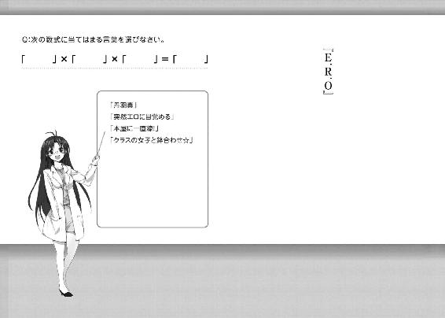

| 電波女と青春男(4)<電波女と青春男> (電撃文庫) | |
| 入間 人間 | |
| (2012) | |
本書（電子版）に掲載されているコンテンツ（ソフトウェア／プログラム／データ／情報を含む）の著作権およびその他の権利は、すべて株式会社アスキー・メディアワークスおよび正当な権利を有する第三者に帰属しています。
法律の定めがある場合または権利者の明示的な承諾がある場合を除き、これらのコンテンツを複製・転載、改変・編集、翻案・翻訳、放送・出版、公衆送信（送信可能化を含む）・再配信、販売・頒布、貸与等に使用することはできません。
シャコシャコシャコ、という前輪の生き急ぐ音に負けじと、あたしも内なる何かを滾らせてみる。ごごごごご......って白塗りの効果音があたしを包囲する感じ、なのですよっ！
家出じゃー！ ゴーノットトゥほーむ！ ニュアンスだけ伝わればよろし！
気分は国道のど真ん中を通過する感じで、脇の歩道をシャコシャコ通過する。偶に車輪がジャキジャキ言ってるのは、あたしのなんちゅーか、こう愛と怒りと悲しみを代弁してるのですよ。こっちはすまし汁の貝類食べて、お口の中で砂がジャリジャリしてる時の気分になるけど。
夜明け前の町は電車の駆ける音もなくて、加速しているのはあたしだけだった。真夜中よりかえって光は失われて、ポツポツって居酒屋さんとかコンビニの光が散りばめられている。
あたしは、バスケットボールが体育館の床を跳ねる幻聴に耳を奪われながら、切れ長の冷たさを保持した空気に気怠い眠気を乾かされていた。
高校一年生の三学期。終業式。三月二十五日。昨日。
あたくす、御船流子。彼氏未満にフラれました。......ごめん、嘘。字面だけ見栄張った。
ほんとは同級生です。並行ですね、平行線ですね。かなりホライズン。山がねぇ！
シャコシャコシャコ！ 頭の中でも自家製の車輪を回して、思考を轢いちゃう。ドガガー（トレーラー気分）。気分の凹凸をごまかすもとい修復する作業の影響で、落ち込んでるのにテンションだけ高い謎の状況に脳味噌ちゃんが糖分不足となっております。ブドウ糖がお空から襲来したりしないでしょうか。ちゅーか、何で家出してんだよあたしはー！
未来が至る原因は過去にあーりー。どっちもまだ大して現在から離れてないけど！
同じバスケ部の男子にさ、こーね、校舎裏でね、『好き好き光線発射！』てなもんですよ！ ジビンコウカー！ ってＳＥつきで普段の三十倍ぐらい出しちゃった！ ちゅーかまぁ、口にしたのは初めてなのだが！ 高校生活始まって以来なのだが！ 『ごめんね』来ちゃったー！
ちなみに反射されるとかけ算現象が発生し、主成分がマイナス側に変化します。
つまり、自己愛ならぬ自己嫌悪。逆ナルシスト。
重力の辛さが身に染みた。足の裏の骨とか、気づかない内にポッキリ逝ってそうだった。
その日、春うららから程遠い冬の尻尾が空を覆う昼の町をどう帰宅したか、記憶にない。気づいたら午後三時ぐらいで、自室のベッドで布団被ってごろごろ悶えてた。何でかヘルメット被りっぱなしで、寝返りうつ度に頭を痛めた。しかしそのピシピシ折り目正しい痛みがあたしへの天啓となった！ まぁ、導き出されたのは暴走っちゅー話なんですけどね。
そして、大学へ進学前提で残り七回ある春休みの一度目。三月二十六日。今日。失恋一日目。
書き置きを机に残して、服とかお小遣いとか鞄に詰めて（携帯電話を持ってきそうになっちゃったぜぃ）朝の四時前にこそこそ家を出た。
家出なんて初めてだから胸がドキドキして膨れあがって急成長！ とかするのを密かに期待するような元気もなくて、告白相手に断られたときの言葉がリフレーンしてた。ぎゅおんぎゅおん、鐘を突いてるみたいに響いて鼓膜がほんわーっとしてた。
それに加えて、寝坊したら台無しだ、って思って一睡もせずに出発時刻まで頑張ってたら、瞼の重さが宇宙から帰還した人みたいになってた。こっちはチャリンコと一緒に風に逆らってたら、少し睡眠欲の湿り気が乾燥して、目的地まで保ちそう。
まずは寝床を確保してだね、だね、えーとね、その後は......自分探し、かなぁ？
だってここにいるあたしは駄目キャラじゃん！ ワゴンの中にいそうなのじゃん！ 他のあたしを探さねば！ 豪華一点張りなのを！ 人間見た目だもの！ 七、八割！
春期休暇初日から部活をサボること確定の逃避行が、始まろうとしていた。
「ちゅーか、い・け・る・かー！」
あたしをフッた男が隣のコートでボールダムダムしてんだよー！
「あたしの三月二十五日まで頭の中でダムダム跳ねちゃうでしょーがー！」
叫び倒しても、町の皆さんは誰も反応しない。だから、好き勝手に振る舞える。
夜中、家のお外を喚き散らして通りがかる酔っぱらいさんの気持ちが、少し身近に思えた。
寝泊まり先と決めてた駅前の漫画喫茶に到着して、三時間の予約を取って個室に入って。
取り敢えず十二時間ぐらい眠ってしまった。......延長料金メチャメチャ取られた。
そして家出初日が暮れ始めていた。漫画喫茶のすぐ外にある、ボロっちい長椅子に座って車道と、ビルと、自販機を目でぐるぐる追い回す。車はともかく、他二つまであたしから逃げてる気がするのはまだ夢気分を引きずってるからかなぁ？
太陽が空から垂れ下がってる。吊り下げてる糸はオレンジの空と同化してるのか、見えない。ついでにあたしのテンションも順調に右肩下がり。自転車こいでる最中に右足がピュキィっと吊っても、止まらなきゃ痛まないのですよ。でも爆睡しちゃったので、頑張りすぎた脳味噌が痙攣してます。特に右脳。イタリアみたいな形に引きつってそう。左脳は四国。
「きゅぴー」鳴く。本当は「ぼえー」とか濁った呻き声が出てる気もするけど、貯えてた乙女度を消費して不思議ちゃんに変換してみた。昨日、ある意味で大量に獲得しましたからなー。
視線と思考を垂れ流しにしながら、あたしは町を見つめ続ける。
あたしの住んでるこの町は都会偏差値が六十ぐらいで、電車で遠出して何か買う必要があるとか、そーいう田舎とはあんまり陸続きしてない。でも、普通のプチ都会と違う点が一個ある。
なんかこの町には、宇宙人の目撃情報がやたら多い。ある意味日本のエリア55。しかもＵＦＯだけじゃなく、本当に生宇宙人を見たって言い張る人が多いの。
だから町のお土産やさんでは、ワームホールカステラとかコスモ煎餅が売ってたりするのです。もっときゃわゆい、グレイ人形とか売ればいいと思うんだけどなー。
どっかの高校の制服着た男女が自転車に二人乗りして横切るのを目で追う前に、漫画喫茶の中に引っ込んだ。さっきと同じく、金髪の店員さんがカウンターで他の店員さんと喋っている。基本料金の五倍近い延滞料金を支払ったあたしはもう一度、三時間の予約を取った。この時点で、あたしのなけなしのお小遣いは三割以上目の前のレジにパクパクされております。
二日前に美容院行って、髪の毛をお化粧してもらったのが痛かったなー。真っ直ぐすぎるのをごまかす為にパーマかけてね、告白に備えてね。いやー、結果と合わせて一層痛いですな。
お腹空いて喉渇いてと喪失感が余計に酷くなりそうな要素目白押しだったから、早めに解消することにした。部屋に入る前に自販機でカップ麺買って、サービスのお湯を注ぐ。野菜類が販売されてなかったから、代理として麺類が登板。後、紙コップにウーロン茶をたんまり注いでから、14番の席に入った。
部屋の中にはテレビもパソコンもゲーム機もあって、至れり尽くせり。でもあたしは特にどれの電源スイッチも入れないで、椅子に腰かけた。鞄を床に置く。
膝に頬杖突いて、テーブルに置いたカップ麺が仕上がるまでの三分間を待つ。
「.............................................」
昔々のお誕生日会で、ケーキに刺さった蝋燭の火を目で追った時みたいに。
カップ麺の蓋を凝視し続けて、目の奥がぼおっとなる。
苦痛にプチプチって細胞を潰されてた内臓が少し鈍感になって、痛みを忘れた。
だから今なら問える。あたし、何しに家を出てきたんだろう。
相手は気にしてなくてもあたしは意識の中枢に彼がまだ突き刺さって首だけひょっこり出てます。しかも苦笑いで。あたしをフッた時の表情で。
そんなんで部活に『やぁ！』とか爽やか笑顔で青春しに行けるわけもなくて。
部屋でジッとしてられなかったとか嫌悪感を振り切りたかったとか。スッキリしたい、ちゅーか吹っ切れたいとか主旨は分かるわけ。
じゃあその為に、家出してから何して帰ればいいのかな。うーむ。短絡的でさえない。
短絡的っていうのは、単純で思慮なしでも結論には至ってる物事を指すのですよ。
あたし、アホですな。
しかも家出の割に電車とか使って知らない町とか目指さないで、あくまで見知ったご町内にいたり。だって怖いし。あんまり町の外って行ったことないもん。
ホテルとか何日も泊まるお金ないし、野宿......は都会っ子にとってハードル高すぎ。
うむむ、これは家出じゃなくてお出かけというのでは。
......ぐびぐび。結論はウーロン茶に流されました。
紙コップをテーブルに戻してから、テレビの画面に映る、薄黒いあたしと見つめ合う。
その視線は温かいものが少なくて、終わってない冬場の冷気に感情を委ねてるみたいだった。
やること探しの傍ら、漫画喫茶なので漫画をぼけーっと斜め読み。
あたしは標準人間でー、特徴も際立ってなくてー、だから目立たなくてー、好きな人の視界に出来るだけ収まろう作戦も効果薄くてー、脳味噌も二つにしか分かれてないからー......えーっと、自虐くんは自尊心くんへのファウルが五つ溜まったので退場。
要点を纏めるとですね、漫画喫茶の四字から離れたことは出来ねーってことですわ。漫画読み読みして、飲み放題でセルフサービスの飲み物を色々と混ぜ混ぜするだけ。
もっと面白みのあることとか、目先の向いてる方角が東西独り占め！ みたいに斬新なこと出来ると『キャー、リューコチャンステキー』みたいに自画自賛して気分の底上げを図れるんだけど、生憎とリューコちゃんは応用問題が苦手なのでした、まるまーる。椅子の上でだんごむしーる。ぐねぐねー、ぐねぐねー......読んでる漫画の一コマとシンクロしてしまった。
積んであった五冊の漫画を一通り読んだから、返却しに行くことにした。外はもう夜の十一時過ぎで、硝子越しの道路はヘッドライトがフォンフォン飛び交っていた。うーむ、人身事故多発地帯で有名な駅前。家からあんまり離れてない......ちゅーか、思いっきり生活圏内。
警察の人がちゃんと捜したら二十分ぐらいで見つけられて隠れんぼお終いの場所だね、ここ。でもうちの両親、あたしのこと放任気味だから大事にはしないよねーって、都合良く想像。
通路をてくてく歩く。途中の個室から出てきた人に道を譲ったり、気怠げに床をモップがけ中の店員さんとすれ違ってみたり。夜中になっても、色んなお客さんがいるものです。
どう見ても高校生のカップルとか。とか。とか。いやもういいや、虚しくなったので紹介お終い。でもこのお店、表には午後十時以降は十八歳未満は駄目よって書いてあるんだけどね。
かくいうあたくしも十六ヤング。ふは、何ともフレキシブルですな。これ、口癖だった子が昔々にいたんだよね。何か驚きがある度に言ってた。名前忘れちゃったけど。単語の意味もついでに忘れたけど。なーに、受験までまだ二年もあるですよ。
雑誌コーナーと飲料コーナーと食料品自販機コーナーが並び立つ通路を素通りして、青年漫画コーナーに入る。
そしてあたしの読んだ本が夜更かしから帰るべき本棚の前には、目を引く（惹く？）先客。
「......ほあー」微妙に息を吐き、そして呑む。
そのちょっと長めの髪から、光のつぶつぶが漏れてる錯覚を目に引き起こす男の子がいた。
伸びた前髪の隙間から本棚を見上げて、片手を精一杯広げて掴んだ本たちの居場所を探しあぐねているみたいだった。靴は踵を踏んで、しかも裸足。
ぶっちゃけ、超美少年。宇宙人が『世界一綺麗な地球人を作ってみました』みたいなノリ。
特に根拠なしだけど演出の為にふわーっと輝いてる妖精さんとかが、その頭を根城に出来そうですな。他に世界一綺麗な青色の何とか蝶も生息してそう。暗闇でも懐中電灯いらずっぽい。
......誰かにフラレる前だったら間違いなく見惚れてる、それぐらいのレベル。
多分年下。背はあたしより頭はんこ分高いけど、顔はまだ幼い印象が、眉毛とかほっぺとかから染み出てた。ああ、あれはあたしがなくした若さ......と思う。中学生ぐらい？ いいのかなぁ、こんな時間帯に中学生っぽいのがお家にいないで。なんかちょっと不思議っていうか、異様な感じがする。あたしの中学時代と比較したら、驚きに尽きた。
丁度、男の子が立ってる位置に本を収めないといけないから、隣まで近寄る。男の子が一瞥してそれを察して、身体を横へずらした。でも視線は逸れるどころか、またあたしの手元に吸い寄せられた。
「あ、それ続きじゃん。おねーさんが読んでたんだ。棚に返すの？」
人懐っこく話しかけられた。声変わりが中途半端なのか、音質の高低が喋ってる最中に変化していた。合成音声っぽくも聞こえる。腰を屈め、顔まで手元に近寄せてくる。見知らぬ人とは無言でお互いに通り過ぎるのがデフォルトな日常なので、ちょっと面食らいーの。
「あ、うん。どう、ぞ」
両手に重ねて載せていた漫画を、ぎこちなく差し出す。男の子は「はーいありがとう」と軽い調子で自分の持っていた漫画と交換して、それを受け取った。
ちなみに交換と言っても、それは本棚じゃなくて何でかあたしの空いたお手々に、載っけられてしまった。
「んじゃねぃ」手をヒラヒラ振って、ぺたこんぺたこんって踵からお間抜けな足音のする美少年が去っていった。立っていた位置に、放出した光が取り残されている気がした。
あたしが一回深呼吸している間に、それは本の隙間へ吸い込まれて消え去った。
「......なして？」あたしに本を渡すの？ 続巻読んでたんだから、前は読まねーっしょ。
あ、通りがかった女性（ＯＬさん的雰囲気を持つ、堅めの服装のおねぇさん）が男の子とすれ違う際に、思いっきり首をグインと曲げて見つめた。もはや凝視ですよ。男の子は視野の切れっ端にも収めずに進んで、曲がり角に消えちゃったけど。うーむ、あたしの審美眼は普通か。
成績、普通。感覚、普通。容姿......ちゅ、中の上、かな！ それはともかく、あたしは普通。
普通ってなに？ と問われると困っちゃうけど、じゃあ自分普通じゃないの？ って自問すると更に首を傾げて『モゲッ』か『ポキッ』と逝っちゃいそうである。
それぐらい、突出せず出る杭の余地なしなあたし。きっと告白した相手にも、『ほどほどに会話する同級生』とかそこら中に転がってて拾い集めたり合成するのが簡単な言葉ばっかりで、関係構築されてたんだろうなーって、ヒステリックにもなれないでただブルーですよ。
何か特別なものが欲しい。特別に扱われてみたい。子供っぽい願望だけど、本音に近い。
そんなあたしからするとですね、あーいう明らかに生まれつきなイケメンくんが性別を越えて妬ましくなるのですよ！ うぎぎー。ハンカチ噛ませろ、って誰かに突っかかりたい。
それから何となく流れに沿って（流子ですからな！）、個室に戻って漫画を読み返した。
結構面白かった。ただし読んでいる間頭使わなかったから、目的探しの花は枯れた。
漫画読んで日付が変わってシャワー浴びたいなーって思いだして、また男の子に出会った。
同じ本棚の前で。今度も男の子は靴の踵を踏んで、ぺたこんぺたこんで。
会話って名前のつくほど言葉を回遊させたわけじゃないけど、何となく微妙に意識。いやあたしは惚れっぽくないですよ、本当に。かなり硬派です、ご飯も硬めが好きなぐらいだし。
「やーやー、また会ったね」
硬派が反転したような調子で、あたしの隣に着いた向こうから声をかけられた。男の子の方が漫画一冊分多かったから、今回は先に本棚へ着いていたのはあたしだったのだ。
ちゅーか、この子は何故あたしに声かけますか。女の子を見かけたら取り敢えず声と唾でべったべたにしてやんぜ、って信条を持ってる子ならさっきのＯＬさん（仮）にも絡んでたでしょ。あっちの人の方が明らかに目を奪われてたし。
あたし、この手の異星人っぽい方々に好かれるのかなぁ。本命には見向きもされないのに。
光の粒を自動生成して相手の眼球レンズを加工してくるような人には、もう一人心当たりがあった。元同級生で、いつまで友達だったかは思い出せない女の子。今は健康布団マニア。
ある意味、人生無菌室。誰もあの布団の中には入らないのですよ。
「なんかさー、他に面白い漫画とか教えてくれない？」
数年来の友達相手っぽい口調で気安く話しかけられて、「そーねー」と悩むふりしつつ様子見。相手の首が動く度に前髪が揺れて、収穫物みたいに光の粒が舞い降りる。
うむむ。
はっきり言って初対面→特に出会いのイベントなし→でも話しかけられてる→っは！
結論。
これはもしや......世間巷界隈周辺井戸端で噂される、な、ナンパというやつではっ。
一日遅れ、あ、もう二日か。......こほん。二日遅れに生涯唯一のモテ期到来の予感！
おせー！ 来るのおせー！ ちったーあわてん坊のサンタさんを見習えよー！
「あれ、ないの？」
「あ、あるわー！ 今来た！」
「は？ イマキタ？」
現実と脳内をごっちゃにして叫んだ結果、お互いの混乱を深めるばかりだった。
「どしたのよ。まさか漫画のタイトル、じゃないよねぇ」笑顔を維持しつつも瞬き増加。
「お気にしてはいけない。で、んと、漫画......っていうか......」きみはなに？
頬がときめき以外の理由で熱くなりながら、渦巻く疑問。初対面故の質問は、初対面故に気安く口外しづらい。『なに？』とか険しい視線で突っぱねる力がない、気弱ちゃんだし。
それにこの男の子は、ある意味で異世界の住人なのだ。
あたしはこーいう、『特別』を所持している人には心惹かれづらい。自分が特色ないって自覚はしてるから。人から言われると真っ向から否定するけど。人間は事実を言われると怒るのです。閑話休題。まぁ、なんちゅーか、釣り合いというものがですね、あるのよね。
白黒テレビに一部分カラーが混じっても、それって故障に近いというわけ。
見初めた相手には失礼かも知れないけど、普通っぽい人の方があたしは好きになりやすい。
んで、睫毛ながいなこの子。瞬きの度に目に入って表面を泳がれて、いつも涙目になりそう。
「あ、それとさぁ、まぁその話は流してさ」
歯切れの良いお餅っていう、矛盾した印象の喋り方だ。
「んむ？」親しげに接されてると、場から引くのが難しい。
「おねーさんさぁ、何時間ここにいんの？」
男の子が唐突気味に、あたしの内側へ言葉の侵入を試みてきた。
目の焦点が飛びかけつつも、その顔を見上げてしまう。
横顔は唇の端が軽く釣り上がった薄笑いで、人間っぽさが微かに失われていた。
「なに固まってんの。それぐらい見てれば分かるよ」
「.............................................」ナンパが一転、ストーカー疑惑。
あたしの身の丈に合わせて事態がカットされちまったぜ！ じゃなくて。
「ああオレね、見ての通りおねーさんより背ぇ高いんよ。だからさ、部屋通りがかると敷居の上からちょこっと中見えるわけ。おねーさんさぁ、朝からずーっと寝てたねぇ」
表情を取り替える、って表現が適切な笑顔の種類の変更。人に安心感を抱かせる、両目を斜め線にした眩い笑い顔。狐のお面を被ったのかなぁって、一瞬その表皮を疑う。
「レデーのお部屋を無断で覗くなんて、いけない子ですこと」
まずは軽くおどけてみた。『キャー、痴漢よー』とか声の黄色さ五割増しで叫んでみよっかなーって準備したけど、冷静に考えると洒落になっていないかも、という予感がした。
「無断じゃなかったら覗いていいわけ？」
「そういうのは観賞と言います。覗きは駄目、絶対」
それにしても上から部屋の中が見えるってことは、この子だけじゃなくて結構な数の人に寝顔をご視聴されてたってことかな。うわー、素直に恥ずかしい。
「で、朝からずっと寝てみたり夜もそのままお家に帰らなかったり、何してんの？ ここ、十八歳未満は夜間禁止だよ」
「いやいやきみもでしょ」
「うん？」
「だって朝からあたしを見かけてたってことは、きみも朝からずっといたってことじゃん」
逆説で反証してみた。ついでに漫画を本棚に戻す。
男の子は「あー」と言いつつ、顎を指で掻いた。肌も無駄に白くて、必要以上に綺麗である。
「ああ、そうなるねぇ。なるほど」
あたしじゃなくて本棚に並ぶ背表紙を目で追いながら、顎を簡単に引く。うーん、となるとこの子もあれか、あたしと同類？ つまり家出少年。失恋が原因......だったら嫌みじゃないか。
そんでもって、常識外の童顔で二十歳なんです路線も消失、と。埋め埋め。
「おねーさんはあれか、家出少女」
先に探りを入れられた。きみもそうかい？ と首を傾げたかったけど、無言で男の子を見上げるだけに留める。男の子は、目視した者の人心に何らかの影響を及ぼす笑顔を浮かべた。
「就職難民とかの歳には見えないからねぇ。つうかむしろ、ほんとにおねーさんかい？」
前半と後半で、あたしに向けられる視線の質が明らかに異なっていた。
前半は社交辞令風に、後半は純粋な疑問を、何処に投射した？
このガキンチョくん、その髪で見え辛そうなお目々であたしの何処をどう判断したのだ。
「あたしはこれでも十......六ぐらいに見えますねってよく言われる十八歳なんですけどー」
壁に耳あり、カウンターに店員さんありなので大人の世界は嘘がいっぱいなのです。
男の子は軽く噴き出してから、「ああ、そーね」と小さく呟いて、
「なーんだ、同い年じゃないか。オレも十八歳なんだぜ、映画を中学生料金って言っても通用するこーんな顔してるけどねー」両手をあけっぴろげに広げて、年齢アピール。
「いやいや、お互いお若いですなー。何故か年下に思えるこれは......母性ですな！」
「その通り！ こっちも敢えておねーさんと呼んじゃいますよ」
はっはっは、表見だけすっかりうち解けてしまった。
「で、そっちはどうなのかな？」流れを読んで、乗って、質問する側に乗じる。
「なーにーがー？」まだ笑いを止めてない男の子は、その勢いに逆らわない。
「家出少年。あたしに当て嵌まる条件は、全部こっちも利用出来るのよ」
今の漫画を読む前に一気読みした、某身体と心が釣り合ってない人物語の影響で探偵癖がついてしまっていた。人の後ろ暗いところにひっそり生えてるキノコをバッシバッシと刈り取る。
それとさっきまで椅子で、半ば寝転び続けてたから立っていると無性に疲れる。なんか全身ごわごわして、横にならないと落ち着かない感じ。順調に堕落してますなー、あたし。
この家出、一応は上昇の為の旅を予定してるのですが。
「オレぇ？ 実は宇宙人なんだ。髪の毛座あたりからやって来たの」
冗談と軽口の混ぜっこで自己紹介をごまかす。それは相手を呆れさせるとか失笑とかそういうの狙いなのは理解出来るんだけど、あたしにとってはどちらかというと、想起を促す身分だった。この町の某高校に通っている者としては、ねぇ。
「うーむ」
「あれ、何考えこんでんの。寒かった？」ここで笑顔終了。むしろ男の子の方が若干、冷めた表情で目を逸らす。
「いやね、パッと見パーフェクト少年少女は宇宙人と名乗る義務があるのであろーか、と」
「何のこっちゃ」
肩を竦め、後頭部を掻く。様になる。大体の行動が。教室で居眠りした後、寝起きの顔で黒板と先生をぼへーっと虚ろな目で追っているのでさえマイナス点のない、あの子と一緒だ。
「それであのさ、おねーさんの家出って漫画読むことが目的なの？」
まだ家出だと肯定の意を表してないのに、勝手に話を進めてきた。『ん？ ん？』とあたしの答えを急かすように、視線で鼻の先を突っついてくる。
少し過剰な暖房の効き方と合わせて、何だか肌がチリチリした。
「んーむ......方法としてそれで効果があがるなら、いいのかなぁ」
ようは『ブルーブルー』で思わず部屋内を青色ペンキでカラーこーでねーとしかねないあたしが『ハッピーハッピー』になる方法を探し求めるのが目的なの。ベクトル鯖折り。矢印の反抗期。その為に必要な反物質的なものを与えてくれるなら、道具、事件と種類は問わない。
例えば、それが目の前の少年だったとしても。......今のところ、あの元友達を思い起こさせる印象があって、良質の感情を抽出するのは成功例なしですが。
「歯切れ悪いね。つまり今んとこ、目的の成就ならず、ってことかな」
「まぁ、出来てたら帰るっちゅー話ですからね」
「それもそうだ。ま、オレは家帰る為に家出中なんだけどねー」
不可解かつ思わせぶりなことを言いつつ、
「で、おねーさんは今暇なの？」
「んー、まぁ、ねー」家出中に暇なんて言うのも、緊迫感ない話だけど。
春休み中だし部活にはとても青春を弾けさせにいけない（ちゅーか既にぶっ飛んだ）から、正直家にいても暇を持て余してダンゴ虫みたいになってたんだろうなー、とは思う。
男の子は耳寄り情報をこっそり打ち明けてもらったかの如く破顔して、それからすぐに唇と頬をにやにや曲げる悪戯笑顔。この子は笑顔ばっかりだな、おのれ幸せ表情筋。羨ましいのか妬ましいのか、どっちもかな。
「あ、じゃあさー、ここってあっついじゃん。ということで熱気と気分の換気にですね、」
腰を屈め、あたしと目線の高さを合わせてきた。
まるで子供扱いだ、って思っている暇もなく柔和な微笑みが押し寄せてきた。
間近で見ると一層、『あ、世の中は不公平ですな』と強く納得してしまうその造形。
ふわふわと漂う光があたしの肌を掠めて、小さな花火みたいに宙へ霧散する。
一瞬、少女漫画の主人公になった気分に陥ってから。
「オレと一緒に、町でいちばん星に近いところへ忍び込んでみない？」
「はい？」
都会と宇宙人の組み合わさったナンパは、あたしにとって斬新すぎた。
結局、あたしはその男の子と一緒に漫画喫茶を出た。
八時間の夜間用の予約を、五時間近く無駄にして午前の夜の下を歩き出す。
あれから男の子の行き先と内容を聞いて、いやそれは危ないよと思いつつ、なおかつ実はこの子が悪い子ちゃんで、あたしは人気のないとこに連れ込まれて......とか警戒してみたけど、よく考えたら二日前に失恋してるぐらいだから、そんな魅力はないんですよー、と自暴自棄な自分に押し切られる形で、警戒する価値をあたし側の都合で失った。
それに同行の微妙に強い要因として、この男の子の不思議さがある。等身大の人間っぽくない、何か特別なことを行っている人の雰囲気があったから。あたしは、特別枠のお側でコバンザメさんになってみたいと漠然と願望持ってたのだ。主役、は流石に空気読んで諦めてますが。
男の子がこれから行おうとしてることに興味あるっていうか......まぁ、ほんのりワクワク。
子供の頃を、思い出しちゃったし。
店舗の横へ回り込む。本日の営業を終了したお隣の映画館からは、生活と人間の光が失われて、自販機だけが街灯代わりに道路を映し出していた。
そしてそこには、利用者の非常に少ない自転車置き場がある。ちゅーか、奥の建物の隅にあるのは放置自転車かもしんない。塗装剥げてるし、籠がべろーんってなってるし。
「あ、おねーさんは自転車つき？」
「うん、まぁね。便利だし」
中学生になったとき、お祝いで買って貰った自転車は今も現役張ってるのだ。中学校で自転車点検を合格したときのステッカーがまだ、後輪の方に貼ってあった。
鍵を外し、自転車を用意する。うーん、本当に隠れる気のない家出だなぁ。名前思いっきり書いてる自転車をお外に放置だもん。
一方の男の子は突っ立って、薄着を嘆くように軽く身体を震わせていた。
「えーと、きみの自転車は？」徒歩で行ける距離じゃないでしょ。急に目的地変更とか？
「オレは歩きっつーか......ま、取り敢えず自転車は乗り継いできてないからね。徒歩か、うん、二人乗りって線もあるねぇ」
包み隠さず期待の視線がビチビチしていた。それを迎え撃ってパチパチ火花を散らすよりも、まずはキョロキョロ。巡廻中のポリスマンの姿が周辺にないことを目視。
「じゃ、二人乗りする？ ただし、ヘルメットはあたしの分しかないから。怖い怖いだよ」
そう先輩面で注意しつつ、自分はヘルメットを被り、紐を調整。
......あ、そーか。あたしも二年生になったら、部活の後輩とか出来るんだ。
「はぁ、何がこわこわなんだろね。メット被ってないと遠くから青い人に銃殺されたりする町なのかい、ここ」
「いやいや、急に横からイノシシがずこーっと走ってきて、べちゃーっと自転車横倒しになって、頭皮べりべりー、な恐怖との遭遇を回避する為」
「ああ、そうなの。ようは転ばなきゃいいんだよねぇ」
呆れ顔っぽくなってあたしの主張を流し、荷台を跨ぐ男の子。
うむ、この無謀っぷりが若さか。そしてあたしが運転するのか。
男の子に後ろから抱きつかれたまま、あたしの運転技術が安定するのか未知数すぎるぜぃ。
案の定、あたしが自転車のサドルに跨ると男の子がお腹に手を回してきた。足の指先から、じんわりと落ち着きが失われてハムスターの運動器具みたいなのが体内で回るイメージ。
あああ、心臓が勝手に生き急ぐ。あたしの寿命を浪費すんなー！ それにこんなに男の子が間近で、さっきシャワー浴び損ねたけど匂いとか大丈夫かな。お、男の子に触れられること自体稀ですからな。自転車に二人乗りなんて夢の彼方でした。
でも両肩を持たれる方が、直接肌に触れるから刺激強いかも、って微妙に冷静な比較も浮かんで、あーそうかもって納得していた。
「うわ、身体ほっそいね。ちゃんと食べてるのぉ？」
後半は語尾がのったりして、お母さんの真似って感じだった。男の子も線が細いから、家でそんな風に言われてるのかな、って想像。宇宙人をこれ以上登場させても意味ないから、口にはしないけど。
「そーいえばおねーさん、家出した理由なんてちゃんとあんの？ それともよくある自分探し？ 親と喧嘩したからってのも勘弁ね」
「理由......？」目の前が急に暗さを認識しだしたから、思わず瞼を閉じる。
にゅるにゅると、暗闇が瞼の裏に入ってくるのに耐えて、息を吐いて。
フラレたから。一刀両断だったから。人生トラベリング女であり、ダブルドリブルする勇気もないから。でもそれがどうして、家出にイコールを結んじゃったかって、いうと、
「傷」
「ん？」
「切り傷とかって、同じとこ何回も切っちゃうと上手く治らなくなるでしょ」
「んー......比喩表現？」
「ふふふ、文学の香りはしたきゃね？」したり顔で同い年設定の男の子を煙に巻く。
「排気ガスの臭いは実に文化的だけどねぇ。うーん、他人に傷つけられた感じかな」
「ま、大体みんなそんな感じだと思うよ。家出する人って」
「他人のこと、嫌いになった？」
「どうかな、そーいうのは別に。あたしは周囲の人まで嫌いになりたくないし」
けど家出した理由は、傷によるものだっていうのは本当だった。
あの部屋で彼を想い、自習中のノートに名前書いてみたりしたことだってあるのだから。
過去が繰り返しあたしの心を引っ掻いて、傷を残したくない。それの予防として、家を出た。
「まぁ、この話はまた後でってことで。さ、おねーさん発進よろしく。ナビの準備は万端だって宇宙の偉い人その他が言ってた気もするから」
「あ、まだ宇宙人設定続行中ですか。あんたも好きねー」
この町の住人になる資格がありそうだけど、もう布団包みはいるから......ホイル包み。焼き。じゅる。ずっと起きてるからお腹空いた。ジッとしてるとお腹の鳴る音が響きそうだったから、少し慌て気味にペダルをこぎ出して、風の音を耳周りに散布した。
逆風が耳たぶの下で渦巻いて、荒波みたいな音を立てる。
それと反比例してしょぼしょぼと途切れがちな、あたしの吐息。
自分が何を目指してるとか求めてるとか、どんどんその輪郭がぼやけていってる。男の子と一緒に行動してるのも明確な理由が伴ってるわけじゃなくて、流されてるなぁって自覚があるぐらい。これがあたしを前向きにする事件なのか、さっぱり確信なくて。
......格好良い男の子に親しげに声かけられたから、っていうのが零とは言わないけど。
うーん、でも、百じゃないと思うんだけどなぁ、否定出来る自信がない。
結局、あたしは誰かに優しくされたかっただけの構ってちゃんなのかなぁ。そんなことないよね。
誰でもいいってわけじゃなかったよ......昨日までは。
じゃあ期待か日和見か惰性か希望か。
どれがあたしを止まらせない、一番の動機なのか。
それを闇雲に探す為に、あたしは暗色の前面へ自転車をこいでいく。
一寸先の闇が、整備の行き届いた自転車のライトに少しだけ怯んだのが愉快だった。
今より純粋に子供だった頃、周りには魅力に満ちた恐怖がいっぱいあった。
スーパーの裏手にある、用途不明の空き地。そこにいっても何もないし何も置いてないのに、何でか不思議と恐怖を覚えた。後年、そこに野良猫が住んでるのを見た。
他には小学校の一階の奥から下りられる地下階段。そこから行ける、立ち入り禁止の部屋。なんか、扉に耳を当てると、中から機械が動いてるような音がしていた。
世の中には自分の手と知識が届かない場所がいっぱいあって、大人はそういったものをみんな知ってるんだって思って、そこにはたくさん楽しいものがあるんだろうって信じてた。
だからあたしはそういうものを知る為に、近所の子と一緒に集って町を探検調査していた。一見するとわけ分かんない施設の多い町だから、興味と恐怖の種はそこら中に植えられていた。大嘘の話を真剣に子供に吹き込む個人商店の変なお婆ちゃんがいた所為もあるかも。
ちなみにそこは自称駄菓子屋で、あたしたち子供は秘密基地みたいに使ってた。ツチノコの剥製とか、宇宙人のサインとか飾ってあって、大人たちには評判悪かったけど。
不思議の中でも目玉は、天体研究所。観測所って言ってる子もいたけど、けんきゅーじょって呼ぶ方が何か、得体の知れないギュイーン（効果音）とかピコピコ（コンピューターの動く音）なワクワク感が強くて、こっちが主流だった。
結構大きな面積を取って、コンクリートの研究棟が幾つかあって、他の町にある自衛隊の基地みたいに、フェンス越しに威圧感を覚えてた。あたしたちはそこからロケット発射したりするのかなぁって、なんか勘違いして盛り上がってた気がする。
庭っていうか敷地の広いところに社会見学の目玉として置いてある巨大な天体望遠鏡は、見学無料だから覗かせてもらったこともある。星がはっきり見えて、あの望遠鏡の中に宇宙があるのかもって考えてた。でも子供の興味はそれよりも、施設の立ち入り禁止区域にあった。
あの施設には宇宙人がいるんじゃないかって、みんな噂してた。あそこは宇宙人の基地で、えーっと、町の人間で実験とかしてるんじゃないかって。テレビ特番で宇宙人解剖手術のフィルム云々がその時期に偶々放送されてて、それで余計に恐怖を煽られてた気がする。
あたし個人としては、職員さんの白衣がみょーに怖かったです。あれは多分、歯医者さんとか、お医者さんで予防接種受けた時の記憶が下敷きになってたんだろうなーって推測。今でも白衣＋眼鏡の人を目撃すると裏ではあんな実験やこんな新薬開発を！ と偏見全開で警戒したりするのが良い証拠です。閑話休題。何処から休題して何の話を始めればいいか微妙に解読不能だけど、とにかく流れに沿って続けよー、おーっ。
「おあ、ちょっ、なに手放し運転してんのさぁ。二人乗りでは危険だよそれ」
「ほぁぁ！ はいよ、そりゃは、どへいい！」台詞だけで蛇行運転の状態をご想像下さい。
「ていうか、なにいきなり両手振り上げてんの。あれか、ベントラー？」
「きにしてはいけない！」ゲームのシステムメッセージ風に抑揚なく発音して、流す。
こほん。で、えーとつまりさぁ、これから行くところさぁ、その天体研究所なの。
男の子はそこに行って、『母星に帰る方法を調べるんだ』ですって。あの駄菓子屋さんのお婆さんと似たようなこと言ってて、聞いたときは呆れる前に噴き出した。
あれかな、あたしとどーしても二人っきりになりたい年下の男の子がナンパ頑張ってる......みたいに解釈するとなんか可愛げあるんだけど。でも、そーいう雰囲気じゃないよね。微妙な態度だけど、真剣さっぽいのあったし。だから、ほんとなんなんだろうこの子、って興味が追加されて、あたしはついていくことを継続しようと思ったわけです。
あたしたちはこれから、あの難攻不落的な敷地内へと忍び込みを開始するのだ。
うーむ、到着したらまずニンニン、とかちくわをはむはむしつつポーズを取ってみたい。かつての探検隊のメンバーは男子三人、女子三人。男女一緒に遊んでると周囲のからかいが盛んなのは世の常だけど、幸いにもあたしたちのグループは良い意味で隔絶してて、独自の空間を築き上げてた。まぁ、最後の方は気まずく、派手さのない喧嘩別れで終わっちゃったんだけど。
......ぬああああ。人間関係のトラウマがいっぱいだー、あたし。思わず道路に自転車が飛び出しちゃうわけだ「ひょー！」どっちが叫んだかは想像にお任せしますが、普通にバイクに轢かれかけました。もう考え事は止めて、新聞沙汰になりかねない行動は慎もう。
......でも最後に、一個だけ。
あのグループで施設内の職員専用棟へ忍び込もうって提案して、賛同したのは男の子三人。反対したのは女の子三人。バレて絶対に親に怒られるって怯えたから、女の子側は猛烈に拒否した。いやあたしん家は多分そんなに怒られないだろうなーと思ったけど、白衣の研究者さんに捕まって人体実験と改造手術で流子二号になったらどうしようって怖がってました。
だけど忍者ごっこは実はあたしもやってみたかった。今こそ、幼少の夢を果たすとき！
どーせ家出の件で軽いお説教が待ってるんなら、内容を一個ぐらい充実させたって夜明け前に終わるとも。さー、トラウマを二つほどぶっ飛ばす為に研究所へ潜入だっ。
あたしの住宅棟がある地域から自転車で二十分ぐらい離れたところまで、信号も無視するぐらいの交通量だったからスイスイと進むことが出来た。川の流れに乗って滞りなく運ばれていく葉っぱの気分。幼少期、六つの自転車でほぼ毎日偵察の為に通った懐かしい道は、夜間での利用が初めてだった所為か、感慨も睡眠から目覚めようとしなかった。まるで別の道みたい。
それでも、昔と同じ目的地には到着するのだけれど。
「うあー......」夜にここを訪れてその様子を眺めたら、あたしも賛成派になってたなぁ、これ。
研究棟の窓から薄く漏れる光、微動だにせず空を仰ぐ望遠鏡。草木は形を潜めて、空気は死んだように静寂。いかがわしい実験を伴って、生活からかけ離れた臭いが漂ってきそう。
なんてインチキ臭さ。科学系の分野なはずなのにやたら曖昧な感覚を纏って、実に胡散臭い。
あー、昔の興奮が蘇って、鬱屈した気分から染みが僅かに剥がれそう。
まずは研究所のフェンスから道を一本挟んだ畑の脇に自転車を無断停車させて、「とうちゃーく」と汗を拭う仕草。実際は冬が引っ越しの際に残した寒気の所為で、入居者の春まで凍える寒さだったり。汗をかけるほどの距離でもなかったしなぁ。
鞄から上着を引っ張り出して、重ね着する。男の子はシャツの上にジャケットを一枚羽織ってるだけなのに、何だかやせ我慢じゃないにやにやを顔で遊ばせて、平気そうだった。
ま、宇宙は寒いとかそんなレベルじゃないしね。流石、自称宇宙人。
「さ、行くでござる」自転車の鍵をくわえてニンニン。間違って飲んだらどうしよう。
「あり、全然出番のなかったヘルメットは脱がないの？」
「丸腰で潜入するのは心配でござる」
ちゅーか、ヘルメット外した後の髪の毛がぐちゃーってなってるのが嫌なだけ。
「そのキャラなに？ 宇宙人と忍者って何だかアメリカ的な組み合わせっぽいけどさぁ」
「......気にしてはいけない」キャラ替え終了のお知らせ。
十年間はあたしを変質させた。同じノリを保つ仲間を失い、羞恥心だけ肥大化したのです。
敷地の付近は町の中でも珍しい田園地帯。人家が周辺に少なくて、その孤立が余計に研究所の神秘性を高めてる気がした。でも近所にコンビニもないから中の人たちは不便かも。
「中にやっぱり宇宙人の化石とかミイラがあるのかなぁ」
「いやいや、おねーさんの目の前に本物がいるよ。つか、乗り気ねあなた」
「うーん、きみはねぇ、目に瞳孔とかあってしかも全然光ってないから失格」
「猫型宇宙人じゃないんで、そういう高望みされても困るねぇ」
軽口を叩きながら、施設の周囲をフェンス沿いに回る。四分の一周ぐらいしたところで、男の子が雑談から質問へ話題を切り替えた。
「ここまでのナビいらなかったみたいだし、おねーさんはもしや常連さん？」
「ふふふ、地元っ子なあたしらの庭みたいなものだぜ」腕まで組んで、したり顔。
ただしツチノコが住んでる可能性のある、目の行き届いてないお庭扱いだけど。
「ふぅん。中の連中に知り合いとかいたりする？」男の子が頬を掻く。
「うーん、それはないかなぁ。フェンス越しに中見てると、施設の人がにこにこ笑顔で近づいてきたことはあるけど、騙されるな、捕まるぞ！ と煽ってみんな一目散に逃げてたの」
ほんとに危機感を原動力にしてたのはあたしぐらいだったけど、みんな全力で走ってた。だって、それぐらいしか身体っていうか、事態が動かなかったんだよね。見てるだけで、実はすっげー退屈。途中から飽きて、畑でドッジボールとかしてたし。
だから男子は、あの立ち入り禁止の扉を開いてみたかったんだよ、きっと。
「ところでさー、これって夜の散歩違うよね。目的あって歩いてるの？」
この時間だと確か正門が閉まって、一般人は出入り禁止なのだ。裏口みたいなとこには警備員さんがちゃんといるし。いるからこそ、『ここは怪しい！』って子供心に疑いを深めた。
「うん。ありあり」
男の子は調子よく返事をして、朗らかに微笑む。張りつく冷気でその笑顔のまま固まったりしないかなぁって余計なお世話を焼いてしまいそうになった。それぐらい寒い。
あたしの場合、空腹を抱えてるから余計かも。懐がカイロをなくしたのも大きい。
更に四分の一周して、丁度、自転車の停止位置と反対側付近まで来てから、「ここらへんだったはず」と男の子がフェンスを探り始める。ペタペタ、ヤモリの手足みたいに垂直な部分へと触れて、手探り。あたしはその横で「どっこいどっこい」ってフェンスに張り手して存分に邪魔してみたかったけど、大人しく待ってみた。普通でありたくないのに、普通な行動しか出来ない子なのです。でも、不法侵入は普通の人はやらないから......誇れねーですけど。
「あった。ここを、」フェンスの繋ぎ目を外して、横着に切り開かれた抜け道を作り出した。どーも、切ったフェンスの一部分だけ引っかけて、壊れてるのが一見だとばれないようにしてあるみたい。
男の子が得意げに振り返り、「道は開いたでござる、ってとこかい？」
「事前に壊しといたの、これ」
「いんやぁ、中の職員が破壊したんだよ。わざわざ正門へ回って入るの面倒だから、ショートカット作成したわけ。遅刻しかけた時に便利っぽいよ」
「へー、詳しいね。ここの関係者さんなの？」
「宇宙人の地球侵略基地日本支部だからねぇ、ここは。オレも他人事じゃないのさ」
あたしの調子に合わせることを利用しながら、身分と関係をぼやかす。「さ、行こう」
男の子が先に、フェンスの穴を屈んで抜ける。これでここを通り過ぎれば、完璧に不法侵入者だね、あたし。うーむ、若さ故の情動とかなら身を投げ出してもいいけど、惰性でここまで来ちゃった感が強い。部活やってると時々、足が動くのを自覚してないのに反復練習してる時間があったりするけど、あれに似てるのが今かな。明らかに身になってない。
「ん、どしたい。やっぱやーめた、とか？」
進もうとした男の子が右足を上げたまま、首だけ振り返って停止する。非常口で点滅する白色の点線くん（あたしはあの棒と丸の人をそう名づけてる）みたいなポーズだ。
「止める、っちゅーか。腑に落ちないことが幾つか、喉でイガイガしてるの」
「早めに呑み込んでほしいとこだねぇ、ここを利用する職員がいるかもしれないし」
周囲に軽く首を振りながら、男の子が決断を催促してくる。いや、分かるけど、でも、少しはっきりさせて惰性から脱却してみたくなるのですよ。日々の生活を省みるに。
「あのさ、何であたしを誘ったの。いやあのね、一目惚れとか冗談は抜きで」
予防線はりはり。これで色恋沙汰を期待してる駄目女子高生って路線の想定を男の子の頭脳から消去出来た、はず。昨日までのあたしとは違うのですよ、主に悪い意味で。
「んー、狙い目だと踏んだから」
崩れかけたバランスを一足飛びで保ちながら、
「帰る家がちゃんとある家出って、退屈だろ？ 退くことが出来るから、生活は維持しなくても数日間ぐらい営めるし。だから、お誘いに乗ってくる確率は結構、高いんじゃないかってね」
「.............................................」あたしのやってることの幼稚性とか、色々と。
痛いところを突かれてるのかも知れないけど、痺れて鈍感になってるあたしの内側にはただの振動に過ぎなかった。
それに、質問をはぐらかされてるよーな。
「あたしを選んだ理由はそれでいいけど、あたしが同伴する理由はないの？」
「へ？ あーオレ小心者だからさ、一人だと怖くて潜入なんて出来なかったのよ」
声は淡々としてるけど、表情は夜の化粧が濃すぎて窺えない。だから多分、あたしの顔も男の子からは判別出来てないと思う。誰にも見られなくてよかった、って少し息を吐く。
「いや、本当にね。オレ、一人じゃ何にも出来ない憐れな宇宙人」
Ｅ．Ｔを見習って超能力を学習してから地球にいらっしゃい、と忠告したくなる。
「何しろここで捕まったら、地下実験室でどんな処遇が待ってるか分かりませんからねぇ」
「......あーきみ、宇宙人だもんね」ははは、と力入れないで笑う。力ないとはちょっと違う。
「お、認めた？」振り上げた足を更に掲げて、そのままバク転しそうな様子に声が弾む。
「あたしは宇宙人は『いてもいいじゃない』派だから、別にそれでもいいかなーって。投げやりな部分もあるけど、それはおいといてもう一個質問、いい？」
「どーぞ。出来れば文字数を短縮して」
「ここに無断侵入する本当の目的は？」
「おねーさんこそオレについてきた理由は？」
出した手紙を読まないで、返事書かれた気分だ。すっげー、腹立つ。でも反論する気力がお腹に溜まってない。空腹は別のことに反抗期なご様子。
「あたしは多分......何だろう。でも中見るだけで満足しちゃいそうかな」
夢が覚めるのか、本懐果たして歓喜するのか未知数だけどね。出来れば喜びたい。
もう息せき切って走って、伝える相手もいないけれど。......うあー、人恋しいのかな、あたし。ちゅーか昔から、落ち込む原因に成長ないよなー。あの時も......好きな男子、好きな女子が、三人それぞればらけてしまえばきっと、上手くいってたのに。
「あー......もう......」顔面を手の平で覆って、指の間に過去と昨日を覗く。
忘れるのが無理なら、もう、踏み殺しちゃえ。
事件なんか、取り立ててしまえばいい。機会なんか勝手に思いこめばいい。
ここに全部、置いてしまえ。
今がキッカケとなるべき時なのだと、大げさに持ち上げる。
六歳の御船流子が、一時的だけどあたしに帰還する。
怒られたくないなら、バレないように忍び込めばいーじゃん！
その通り、記憶の中の男子Ｂ。その発想が素敵ですわ、そこに惚れたわけ違うけど！
ということで、フェンス越えました。不法入国まっしぐら。
男の子もようやく、振り上げた右足を下ろすことが出来た。
そしてあたしはブチ切れた。もとい、吹っ切れた。そういうことにした。背中に生えてた失恋の糸をぶちぶちに引きちぎって、あたしは百メートル走への出場権利だって得てしまうぐらい自由なのだ。シャカシャカシャカ、と何故か腿上げ運動を始めてみる。サクサクと足下で草を踏む音が小気味いい。体育館が生む足音以外に、久々に注目してるかもしんない。
「それは意欲の迸りなのか何なのか、理解に苦しみますが」
「よーし！」男の子を無視してパン、と自分の頬を手の平で打つ。音が気に入らなかったからもう一丁。パパン、って音が半ズレしたからもう一回。肌触りが悪いからファウンデーションしてる暇はない！ 意欲はある！ ズパーン！
「ふぉふぉふぉ」ヒリヒリする。眠気と気怠さはスリッパの裏でぶっ叩かれたアレみたいに圧死した。目の周囲がギラギラ尖ってる気がする。睫毛がハリネズミだぜ。
「あのぉ、おねーさん？ 盛り上がってんの？ それとも苛めてんの？」
距離が近づくと、建物からのお零れの光で相手の表情の輪郭が浮かんでくる。
「何だよぅ、あたしは今、乙女ポイントが振り切れて頭からだだ漏れしてる最中なのよ。触るときみまで乙女化しちゃうぜ」
不敵な顔でニヒル（実は意味知らない）に注意。あたしにとっての目的は、フェンスを越えるっていうところで半ば果たしちゃった感があるから、ここからはオマケだよね。
例えこの先にあたしの関われない結末があったとしても、構わない。
「それはどんな危うい症状が」「例えばお目々ぱっちり」してんな。「他には睫毛ふさふさ」してんな。「光のつぶつぶどびゃー」鮭の卵みたいですな。
全部既に当て嵌まるじゃないか。おのれ、天然乙女家出少年自称宇宙人め。学校の作文によく用いられる字数稼ぎじゃないよ。
「何故睨むかなぁ」
「てけててん、何処でもはんこうき〜」
「.............................................」
『やばい、普通になったらただのアホだこの人』って目で全体像を眺め回された。まーやらしい、とかそういうことも冗談で言えない、淡泊な瞳。
それでも気を取り直して、男の子がお話を続けた。
「いやでもさ、なんか急に明るくなってちょっとその出自が心配だけど、こっちも楽しくなってきたねぇ。おねーさんの笑顔、好感度高いわぁ」
ニカニカー。キラキラー。こっちはカニカニー（気分が横歩きでたじろぐ）。
「うー」
「なに唸ってんの。野犬の真似してカモフラージュ？」
「イケメンだからっていい顔してんじゃねーぞ！」
「ご、ごめんなさ......い......？」男の子は縦に退く。
「あたしは特色なさすぎて未だに白黒テレビなのさー！ 空気を消すとか習得するまでもないよふふふのはー！」テテテテ、と手近な施設の方へ駆けていく。立ち入り禁止の扉の場所なんて、嫌ってぐらい観察してきたから目を瞑っても辿り着ける自信がある。
男の子も小走りで追いかけてきつつ、苦笑しながら隣に並んだ。
「いやおねーさんにもきっとあるって、ほらなんか......こう、多彩なさ、」
「.........っ.........っ.........っ..................っ」
「カニに好かれる才能とか」
「海に還れと仰る？」
「川でもいいけど」
どぼーん。あたしは沈んだ。心底に。淵に。悲しさを波紋として広げて。
「よーし、今のところ潜入は順調でござる」「あ、キャラ復活した」「周囲だけでなく、上空もちゃんと注意するように」「いやそんなに３Ｄすぎなくても大丈夫でしょうって、何を警戒？」
「仮にも宇宙施設ですからな。例えばお空から隕石とかレーザー光線が降り注いだとして、あたしに関してはヘルメット被ってるから防御は完璧！ 頭皮べろーん回避！」
「おねーさんの中の宇宙は規模があるのに破壊力ないねぇ」
「平和が一番ですので」地球も、心も。ついでにお財布の中身も。再来月まで火事決定。
弱々しく顔を出す雑草と砂利を踏みしめ、あたしと男の子は『職員以外立ち入り禁止』の御触書が張りついてる、ネズミ色の扉の前に立ち尽くす。隣には金属の網に囲まれてウィンウィン稼働中の謎のマシーン。パイプ管っぽいのが建物内部へ繋がってるのが良い味出してる。
家にあるエアコンとかの室外機のお兄ちゃんみたいだねーとか、現実を見るときはちゃんと近眼で対処するのが大人のファンタジー。
「うっわー、ドキドキする。実はあたし、このドアが初恋の相手なんだぜ」
「へぇ」
「いやあの、涼しい顔で流さないで。冗談をちゃんと拾わないと、ただでさえ寒いから、ね」
あながち間違ってないことを告げたから、反応が素っ気ないと気恥ずかしい。
広義の意味でときめきを覚えたのは、あの『禁止』って言葉だし。
それにしても、男の子のテンションが足踏みもせずに疲れ切っているご様子。目玉は元気に泳いでるみたいだけど。
「どしたの？ テンションお裾分けいる？」
「ああ、ちょっと緊張してるだけ。おねーさんと立場交代中なのさ。つーか、いらね。オレ、自分の脳細胞好きだから」
「なるほど。ではあたしたちは天秤コンビってことで。いざ！」
このドアノブと握手する権利をついに得て、力強く掴「あうあっ！」静電気トラップに引っかかった。爪の真下にある指のお肉が、間違って爪切りに挟まれたみたいな痛みを弾けさせる。
おのれ乾燥した空気。口を塞ぎながら、周囲が反応してないか探る。......うむ、気配なし。
仕切り直しして、ぐ、って喉を詰まらせながら今度こそドアノブを捻った。
ドアは金属部品の軋みを心地悪く鳴らしながら、学校の図書準備室と同じ開き方をした。
扉を肩で押すように入ってから、即座に室内の壁にべたっと張りつく。ふーすーふーすー、息を半殺しにしないと。ついでに普通に入ってきてる男の子へ冷静に注意を促す。
（きをつけろ、きっとこの通路にはサーモグラフィーが設置されてるぞ）ひそひそ。
テレパシーチックな会話を頑張って演出してるとお思いください。
（さー、も？）
（うーん、何だっけ。なんかね、アレ。色がうよーんって重なって、人型みたいな奴が見える）
（そうそう、あ、それで人の温度とか分かるやつだ）
（そうそう。で、アレって何だっけ）
（えーと......）二人して頭を捻る。考え中......考え中......委員会による平成教育、失敗。
草原で両手を広げて、風の大群に耳を包囲されてる気分が過ぎ去るのを待ってから、仄暗く希薄な自己主張の空気が漂う、その廊下を微かな光に支えられ、真っ直ぐに見通す。
ひっそりと、のっぺりと人工物で組み上げられた長方形の廊下。内部は薄橙っちゅーか、控えめな暖色系の壁で覆われている。廊下の隅にはひっそりと観葉植物が置いてあって、地球は友達って一方的に肩を組んでるのがあたしの偽善者っぷりに冷笑をもたらした。
一般の見学さんが入れる、星の説明や望遠鏡の詳細を飾ってある別棟と大差ない内部の作り。でも主観のあたしが中間に入ることで、のーみそに伝わる雰囲気と緊張は別物へと変じる。
まず、内臓からせり上がってくるものが耳から溢れて、ぼわわーんって鳴りまくってる。にぃいいって機械っぽいものが耳の穴から出たり入ったりしてる感覚。これ、緊張してお腹の底が跳ねてる証。胃液もチャプチャプしてるし。口の中酸っぱいッス。
夜の校舎さえ歩いたことのないあたしが、かつて何処までも広がる好奇心と脅威の視線で見つめていた、建物の中に立っている。夜に紛れて、部屋から零れる光に浮かび上がって。
高揚感も入り交じってる所為で、眼球が異様に冴えてる。暗闇が苦にならない。頭が痛いぐらい、前頭葉付近が引き絞られてる。『あえええ』とか悶えて身体を捻り倒したい衝動に、喉がつっかえている。このままだと緊張の限界で床の上でダンゴ虫状態へ変態してしまう。
その前に任務を片付けて、速やかに脱出せねば......で、任務って何だっけ。あるの？
えいや、と試しに一歩進んでみる。硬質な廊下を踏む音が時速三百四十メートルで拡散した。
一瞬、固まる。バレリーナさんっぽい爪先立ちポーズで一時停止。男の子に振り返る。『ん？』って顔してる。どーもあたし、鼓膜まですっごく鋭敏になってるみたい。ちょっと野生化してるかも。都会のコンクリートジャングルでうおー、はおいといて。
今度は爪先からゆっくりと、足全体を下ろす。踵までついてから、ホッと一息。
（うむ、静かに通り過ぎれば大丈夫な感じ）
（うわー、どんな仕掛けもその対処法しかなさそうなコンビだー）
（ちゅーかもう目的を達しちゃったかな、あたし。お家帰るぅ）
（もうあなたは家出おねーさんじゃなくて夜遊びおねーさんだねぇ）
おっと、状況を野放しにしてた。今のあたしは『何処にも行けないというのに』状態だった。
だから、行き先も決めないまま前進しよう。
（しかし何というか、おねーさんを年上として扱うのが苦しくなってきました）
（それはラブに基づいての苦しみですか？）
（いいえ、年齢ライアーへの疑心による苦みです）
それは難儀ですな。ま、同い年風味になってるんだから気にしない。
最初に、あたしに人との繋がりを与えてくれた神秘への恩返しとして、闇雲に求めよう。
壁に手をつきながら、足音を置き去りにするぐらいの気持ちで潜んで廊下を進む。摺り足の方が楽かも、って足の甲がいきなり吊りそうになったところで思って足下を見下ろして、ふと気づく。あたし、土足だった。振り返ると男の子も。そして、靴跡がうっすらと。
慌てて靴を脱いで、鞄に仕舞う。（きみも脱ぐのだ）口パクで指示を出す。男の子も気づいたらしく、踵踏みしていた靴をポンっと軽く蹴り飛ばして外す。そして裸足になった。
（足、冷たくない？）
（オレ、地上から三センチ浮いてる仕様だから感じないの）
（それって宇宙の方から来た人じゃなくて、未来の方から来たロボットじゃん）
などとやりとりしつつ、前進再開。
ちゃらーん、ちゃらーん、ちゃらちゃらっちゃら、ちゃらららららーん。
何となく、脳裏にこんなフレーズが浮かんだ。こそこそと、夜の研究棟を歩く。言葉だけで垂涎になりそうな、サスペンス溢れる展開。
でも背後から微かにぺたぺた、足音が追いかけてきてるのがちょっと怖い。浮いてないし。
トイレを通り過ぎて、二階へ続く階段はひとまず保留にして、更に廊下の奥へ進む。電灯が扉の濁り硝子から漏れている部屋の前で、あたしは一度振り返った。
（気をつけろ、人がいるぞ）
（何でさっきから時々おっとこまえに喋ってるんだろう）
（もし見つかったら......えーと、怒られるだけで済むかなぁ？）
（いやー、拷問ですよ。まず電気ビリビリ確実）
（それはまずい、アフロになっちゃうね。ヘルメットで防げるかな？）
（いやむしろボタン連打で耐えたり、出来るかねぇ）
（（うーん））
悩める若人×２。想像の電気で骨が透き通るまでビリビリなってから、腰を屈めた。
もう少しで野球のヘッドスライディングに移行する、って感じに身体を前傾姿勢にして、一層、足音を殺しながら扉の前を通る。中から、スリッパが鳴き声を発してみたりして風情はあんまりないけど、臨場感は抜群。足を動かす動作に一番、二番って順序をつけてぎこちなく進んでいくしかなかった。百メートル走のゴール間際のスローモーション再生を更に千切りとかした時、今のあたしがそこに生まれるのだと思う。
一方、男の子は比較的落ち着いた歩き方であっさりあたしの横を追い抜き、先に扉前という難所を攻略してしまった。壁に手を突きながら、あたしをジーッと見つめて待ち惚け。
男の子の癖に生意気だぞっ、と食ってかかりたいけど、丁度、扉の正面に来ていたので大人しく、心の鉄骨渡りを続ける。テッキ、パッキ、テッキ、パッキと本人はそれを句読点抜きに行いたいのに、現実はつれないものである。
男の子より五割り増しの時間をかけて渡り終え、少し扉から移動したところで一度立ち止まった。僅かに震える膝を叩いて補強しながら、ついでに教育をしておく。
（スタンドプレーはメーです）
（どっちかっつーと、そっちが単独行動になってなかったかい？）
（口答えもメーです）
年下への教育を欠かさない、二年生となるあたし。こういう姿勢を養っておくことで、後輩に舐められない自分が作られるのだ。中学校の時は......失敗をバネにする為の期間だった。
男の子がまたあたしの背後に回って、先頭をあたしに譲る。さっそく教育の効果が表れたみたい。こーいう素直な子ばかりが後輩に入ってくると助かるんですけどね。
じりじりと進んでいく。箒とか両手に握ってるとなんか安心しそうな中腰姿勢だ。
そうして移動を続けて、正面の壁が迫りだした頃。
さっき通りがかった扉の軋む音がして、高速で振り返る。男の子も身体を仰け反らせる感じで振り向き、扉へ注視を注いでる。安らげるわけないのに、いやにゆったり流れる時間。
扉が開く、とドアノブを持った手が廊下に現れるのを認識して即座に、あたしはその場で膝を突いた。駆けだしても足音でばれると思ったから、むしろ動かない。
廊下の壁際で亀になって、ジッと身を固くする。いざとなったときすぐに前方へ駆け出せるよう、足首を立てて足に体重をかけないようにする。身体を太股にべったりさせず、少し浮かす。椅子になる、棒になる、色々あるけどあたしが目指したのは石だった。
何処かのタヌキの着ぐるみを着たおじさんみたいに。ピンク色の丸っこい生き物のように。石になりきり、元から希薄な気配を更に封じ込めるのだ。
鼓動が各所で蜂起する。心臓は最大震源地として、他にも顎の下や首筋、左脇腹がカスタネットを好き勝手に鳴らす小学生みたいに独自のリズムで自傷に走ってる。グネグネしたい。
パタパタ、ってスリッパが床と擦れる音が廊下をあたしたちと共有し出す。
その足音があたしたちとは逆方向に離れていくのを、床に付いた額が直接感じ取る。肩の力が抜けるのを叱咤はせずに、けれどそのまま暫くはジッと体勢を維持し続けた。
（もう大丈夫っぽい）と男の子に肩を揺すられてからようやく、顔を上げて尻もちを突く。
（うー、寿命が縮まった）
（右に同じく。こっちを向かないでくれて助かった）
（でも逆に考えれば見つからなかったわけだからむしろ寿命は増加傾向！）
（そんな前向きなのに何で家出とかするんだろうねぇ、この人）
大きなお世話。後ろを向かなくったって、辛いことは正面に待ち構えてるのです。
お尻を払いながら立ち上がって、足裏の土踏まずの筋肉が痙攣してるのを踏み潰した。
恐らくさっきの人が二階へ向かう、階段の昇降音が響く廊下。自分の足音がそれに紛れて歩きやすいのに、誰か人がいることを明確にする所為で緊張も増加する。
（かつーん、かつーん。硬質な床を踏む音、そして懐中電灯が映し出す頼りない光......）
（漂う粉と、次第に実態を帯びていく異臭。埃の積もった床には、我々以外の足跡が残り）
（姿なき研究員の残した異種生命体に関するレポートは数週間前の日付で止まっていた......）
（いやいや、別に宇宙人はエイリアンみたいなのばっかじゃないから）
本人も乗り気で雰囲気出してたのに、ころりと手の平を返して否定された。
で、曲がり角だ。壁に張りついてススス、って移動して、時々背中に出っ張りみたいなのが当たって微妙に痛がりながらも、角の直前まで到着する。
首だけ出して、奥を探ってみる。......おお、おおおおお。
（謎の地下施設へ通じる階段発見。やったぞジェフ）
（何だって、詳しく経過報告せよポーラ）
お互いにメチャクチャなスパイ名をつけて呼び合う。大分、ノリが統一感出てきた。
ん、そういえばあたしたちはまだ全然、自己紹介済んでませんな。名前も名乗ってない。
それなのに一緒に行動してこんなとこまで来て、客観視すると不可思議極まりない。ある意味、宇宙の人付き合いだ。あたしの常識外にあったはずの、無軌道な違法行為。
（む、階段下への案内を発見。......ビタミンＡが不足してるから読めない）
（あらゆる意味でチキンなおねーさんの代わりにオレが読むと、どうも地下は資材室らしい）
むぅ、宇宙人の資材ですと。ＵＦＯの残骸とか、物質ＸＹＺとかが埃を被ってるかも。
或いは大っぴらに出来ないけど、宇宙人製造工場とかが稼働中かも知れない。天然ものの稀少さに対抗して、安価な養殖もので大衆の心を掴もうとしているのだ......いやお魚の話じゃなくて。そーいえば、牛肉の天然ものってあんまり見たことないよねー、好きじゃないからいいけどさー。
（よーし、早速調査といくぞ）
（遂に囚われた宇宙人の同胞を救出するときがやって来たわけだね）
（うむ......うむ？）そんな設定だったっけ？
首を傾げつつ、壁歩きは崩さないままに階段へ接近。足を段差にかけ、そろそろと狐歩き。
階段を三つ下りたところで、遠方から響いていた昇降音が途絶える。包まれていた音を失って緊張が多少緩やかになったから、つい口がごにょごにょと蠢く。
（ねぇ、宇宙人くん）
（なにかな、地球おねーさん）
（ここの謎の地下施設にいる予定の宇宙人はお茶のみ仲間とかだったりするの？）
（良く肉じゃがとか作ってお裾分けに来てくれますよ）
（マジで。ちゅーか、ジャガイモって宇宙でも大活躍なのか、見直しちったい）
（......あのさ）
（んー？）
（宇宙人って、本当にいると思ってる？）
あたしが尋ねても違和感ない事柄を、まず相手から口にしてきた。思いの外真剣っぽく。
階段の中腹であたしは立ち止まり、男の子を見上げる。男の子は神妙な顔つきで、潤んだ瞳がアクエリアスの水溜まりみたいに飲み応えありそうな揺れ方だった。
（んむ、そうだなぁ......いる、って信じてるよ。でも今、地球にはいないと思う）
取り敢えず、目の前の自称宇宙人くんに関しては否定派になってみた。でも効果なし。
（そう。実はオレさ、本当に宇宙人なんだよ）
（.............................................）ここまで来て、真面目な顔で嘘吐かれても。
（この星に来て、帰ってこない宇宙人がたくさんいてね。オレはそれの調査に来たんだ）
（......あ、そーいう設定？）
尋ねると、男の子は儚げに笑った。本当は弱々しくなのかも知れないけど、薄暗いのと、本人の男前指数によって格好良さげな表現に変化してしまうのだ。
（ま、ついでにそいつらがこなせてない調査も兼ねてね。定番だけど、地球人の生態評価ってやつ。全体的に善悪がどっちに傾いてるか、現地で調べてこいってさ）
ははは、って乾いた笑い。落ち着け中学生。ちょっとは動揺するのだ。
昔は、こーいう話をお婆ちゃんから吹き込まれて、仲間内で顔突き合わせてしゃべり場してたんだなぁって羞恥心の皮を剥がれる。うー、ぎー。世間の常識っていう風が生肌に染みる。
ちなみにあたしの元友達の場合は、討論で押されてるのを察すると完全に人のこと無視し出すんだよね。その為の布団巻き巻きなのかなぁ。パッと見、ベーコンアスパラみたいだけど。
じゅる。
（例えば、宇宙人を密かに捕まえて実験なんて繰り返したりしてたら、流石にお友達にゃあ、なれないだろうからね）
（あー、その為にここまで調査ですか。......ごくろーさまっす）
（いやいや、それほどでも）満更じゃなさそう。強敵だ。
（じゃあ、宇宙に帰る為にここへ来たってのは嘘なの？）
（いや、帰る方法がないのも本当。ちょっと事情があってねぇ、いやはや）
肩を竦める。うー、これはあたしの手に負えるのかな。陥落難しそう。
（それで、地球は悪人だらけって判断したらどーすんの？ 隕石どかーん？）
ササッと、ヘルメットを押さえる。あたし一人だけ助かっちゃったらどうしよう、と心配するはずない。きっと他にも自転車に正しく乗る良い子はいっぱいいるはずなのだ。
そしてその子たちを率いて、新しい日本を建国。あたしは新世界の女王様となる、予定。
（地球人が友好的じゃなくても、害は与えるつもりないよ。別に、放っておけば勝手に滅ぶだろうしね。ただ、仲良くなれたらいいなって前向きに考えてるだけなんだ）
（ほほぉ、なかなかの日和見ぶり）
そして少々上から目線なのは気になるけど、納得したことが一個ある。
むふ、男の子の根底を見破ったり。
（ふーん......にゃるほど。きみの名前が分かったよ）
（はい？）
（きみはエコーズくんでしょ、うんうん）
ふふ、懐かしいのぉ。おねーさんが小学生の頃、めっちゃ流行ってたよ。小学校で秋とかだと、読書する時間を朝の授業前に設けたりしてたけど、あたしはあのシリーズ読んでたもんね。
（エコーズ？ なにか分かんないや、それ）愛想笑いで、あたしの指摘を受け流す。
（あれぇ、世代がほんのりずれてる？ 元ネタ、そこだと思ったんだけどなー）
（元ネタって......あはっ、信用されてねー）
苦い笑いを浮かべて、肩を落とす。落胆のふりだけど、何処まで本心混じりなのかな。
（まぁまぁ、落ち込まないで。それで、地球は気に入っていただけましたか？）
（あー、おねーさんを気に入ったから、地球好きってことで）
（へぇ。親日家みたいなものかな）
（まぁそんな感じで）
柔らかい微笑を掲げて、俯いてた顔が復活する。
ふふふ、意中じゃないイケメンを虜にしてしまったぜ。微妙な嬉しさだけど、ないより絶対いい。
さて、階段を下りきった先にはいかがわしい研究所の、更なる怪しさを秘めた地下室。
遂に、あたしは宇宙人の半径五メートル以内へと迫ったのだ。五人の仲間たちにこのことを報告したら、『あー、そんな遊びしてたな。ていうかリュウシ、まだそんなことやってたの？』
リュウシじゃねーっちゅうに。
（......むむ）膝を屈め、その暗闇に埋もれたものを目聡く発見する。
扉の隙間から、光の雫が垂れている。扉の間近で舐めるように見回さないと気づかないぐらい微量に、数滴。
（総員退避、かな）
（扉を少し開いて、中をこっそり見るのはどうだろう）
（うーん、悪くないけど危険なのは）「うぉふ！」扉の端っこと壁でギュッと顔がプレスされた。顔の造形がひょっとこたらこに加工され、出荷されかけてる場合じゃないこれってつまり内側から扉を外に開いたわけで「ひやぁぁぁぁぁぁぁ！」
中の職員さんが真っ先に腰を抜かした。そりゃそうだ、あたしたちは相手がいること分かってて忍び歩きしてたけど、あっちからすれば幽霊扱いだもんね。
けど、そんな冷静に物事を把握している場合ではないと、顔引っこ抜いて走り出しながら気づいた。階段の最上部で臑の僅か下を打ちつけて転倒しかけて、身体が斜めに傾く。
その影響で、鞄に差し込んでた靴がごとんって床に落下して、そのまま階段を駆け落ちしていった。
「あ、靴！ 足いったー！ けど靴、つ、あー、もう！」
立ち往生しかけるのを制して諦め、元来た廊下をひた走る。
「どどどうしよ！ どっち行く！ 逃げる？ 逃げるよね！」
普段の二倍ぐらい、舌が噛まれながら回る。言葉に質量はないっていうけど、今のあたしは確かにそれを舌の上で実感していた。言葉は鉄の味がして、生苦い。
「いや、オレは！ 二階も、見に行くよ！」
「なにぃだってー！」緊急事態なので、色々混ざった。
とにかく、さっきの階段付近まではがむしゃらに走り抜けた。警報とか鳴ったらどうしようって、若干見当違いな心配が膨らみだして、肺が完全には働かなくなっている。
男の子は途中で、本当に階段を駆け上がろうと左折し始めたので、慌ててその手首を掴む。細い。イケメンだからって自然と細くなってんじゃねーよ！ いや細いからイケメン？ うん？ 分からん！
「真っ直ぐ行ったり来たりするだけなのに、どんな迷子よ！ ２Ｄに徹しなさい！」
「オレはここでの目的がまだ残ってるんだ、おねーさんと違って」
「宇宙人退散！」ズビシ、と額に手刀を入れた。綺麗に髪の生え際に直撃した。
男の子は「ってて」と痛がりながらも、にやにやと楽しみ出す。この非常時に！
「最後まで宇宙人を信用してくれなかったねぇ。鎖国大好き日本人の鑑だね、おねーさん。せっかくの最後だし、ここいらで証拠でも見せようかな」
「やっかましい！ いーから逃げるだす！」
「おねーさん、そんなに逃げたいわけ？ せっかく中まで入ってきたのに」
「うぇっ？」予想外の質問返しに、面食らう。
宇宙人探しに、骨を埋める覚悟で階段駆け上がれって？
そんなの信じてるんなら、きみの話をまず最初に全面肯定してたはずだよ？
あーっとね、だからどう？ 周波数設定せずに広域に尋ねると、後背部に返事があった。
六歳で、まだ自分の直毛が嫌じゃなかったあたしが、腰の僅か上を蹴り飛ばしてくる。
短い足で自分なりに精一杯せっついて、宇宙人を見に行くことをせがんでくる。遊園地をせがむ子供を持った親気分を早くも想像の中で体験中。さぁどうしよ。
身勝手だった子供のあたしを、お父さんたちはどう上手く受け流してたんだろ。
......うーんとね、あたしちゃん。
ここ、逆年齢制限が設けられてるの。
実際、あたしが今求めたものはたくさんあったけれど。
子供のあたしが夢見てた何かって、何にもなかったよ。
初めての片思いだった子も、もう隣にはいないし。
確かめて、何もかも消えて。
縋る藁さえ枯れ果てて、残ってなかった。
だから逃避、終わらせて帰らないと。いつまでも、何もないところにいられない。
きみだけ残って、いいから。
顎を引いて、前髪を少しだけ弄って、ほんのりと大人になってみてから。
男の子の手を離し、ひらひらと、顔の横で振った。
「ごめん、逃げる」
白衣の研究者から。それと、子供のあたしから。今のあたしの何かがあるところへ。
「うん。......そっか」
感慨深い顎の引き。だけど時間が押し迫ってるから、すぐに駆け足の用意に入る。
男の子が、まだこんなに近くにいるのに、ぶんぶんと手を振ってお別れの先送り。
「付き合ってくれてありがと！ ここまで送ってくれてありがと！ オレ、おねーさんのことちゃんと感謝してるからさ、偉い人とかに言っておくよ！ サービスでおねーさんの友達とかも助けるようにしちゃうよ！ それじゃ！」
最後っぽく、満面に年相応の、中学生の笑顔をあたしにさらけ出してくれた。それは男の子が持っていた特別の神秘性を奥に引っ込めながらも、別の要素による魅力に彩られていた。
「あーいよー！ ばっははーい！」
あたしも、廊下の最奥にいたって聞こえるぐらい大声と大げさなリアクション取って、飛び跳ねて男の子を見送った。
階段を二段飛ばしで迷わず上っていって、その背中が踊り場で曲がって消え去るところまで見上げていた。それとは別の足音が廊下の奥から鳴りだした気がして、あたしも引き際を知る。
さーてと。有り余る元気を、お腹の中以外からどうやって調達しましょうねぇ。
グッと足裏に出所不明の力を込め、床を蹴る。
男の子と、六歳だったあたしを屋内に残して。
十六歳のあたしは、好奇心の外へと駆けていった。
「ひ、は、ひゅ......」
緊張すると、普段の体力なんか関係なく疲労が押し寄せてくる。
だって、心が疲れるんだもん。まだ昨日の傷が、完治してないのに。
外の畑まで駆けて、そのまま大の字に地面へ寝転びたいぐらいの心労で血管の中をいっぱいにしながら、酸欠に喘いだ。ぜひゅぜひゅ、自分の呼吸音しか耳に入ってこない。
膝に手を突いて俯きながら、少しずつ摺り足で身体を反転させて、研究所の方を向く。追跡してくる人は、いない。追いかけてくる人が、誰もいない。一応、仲間いたのに。
「ふ、ふ、ふぇ......」
呼吸を噛んで、無理に止めてみようと試みる。ふしゅるるる、って歯の間から空気が漏れて、我ながら気味悪い。こんなとこを人に見られたら、あたし今度は地底人探すとかいう理由でそこらの土を掘り出しますね、絶対。
「けふっ」我慢を諦め、息を贅沢に吸ったり吐いたりした。
大分落ち着いてから、顎に手をやって窓の光を見つめる。
「うーむ......だいじょぶかな」
別に兵隊さんとかがいる基地に侵入したわけじゃないから、身の危険ってそんなにない気がするけど。でもねー、ほら幼少期からここに刷り込みされちゃってる神秘性っていうのが、あたしの不安を煽って面白がってるのですよ。うぐぐ、お腹の底が二重に痛い。
あ、それに名前を結局聞き忘れちゃった。うーむ、杜撰な人付き合いですなぁ。
後ろ髪をぐいぐい引っ張られながらも（ぱ、パーマが）さくさくと硬い土を踏んで、放置してた自転車の側へ戻る。「おーおー、冷たくなっちゃって」拗ねてるのかなぁ、サドルももう冷え冷えとなっちゃって、ベンチウォーマーが部活でのポジションであるあたくしとしては、プライドを傷つけられ、て、「あ、れぇ？」
頓狂に声を張り上げ、目を黒々とさせる。うぐぐぐ、実際そうなるとこ想像して痛がる。
あたしが落とした靴が二足とも、自転車籠の中で良い子にしていた。
「うそぉ」がぶり寄りながら、籠を覗く。爪先の微妙なすり減り具合、サイズ、色、艶のなさ、どれを取ってもあたしの靴だった。履き主を差し置いて、独りでに帰っちゃってたの？
「いやいや、まっさぁか」ではもしや宇宙人技術の基本、ワープ......「それもない気が」
現象に足腰が固まりながらも、上半身をぎこちなく動かして、靴を拾い上げた。
うーん......この靴があたしのだって知ってる人間を検索すると、考えられるのは、一つ。
その結論に至ったら自然と、首を左右に振って視界を巡らせていた。でも、何も引っかからない。畑の貧相な大根を引っこ抜きに来た人もいないし、ましてや謎の発光に包まれた、全身白タイツの吊り目な人も空から降ってきてない。もう、この周辺からいなくなっちゃったのかな、あの男の子。あの子が、靴をここに持ってきてくれたのだ。それしかない。
でも、どうやってだろう。二階に進んでった男の子と、真っ直ぐ逃げ帰ったはずのあたし。それでも追い抜かれるぐらい迅速に動いたのかな。本当に忍者（それもアメリカ的な）だったりして。
「それとも、あれかな」ＵＦＯに乗って帰る際に、地上へ落としてってくれたのかな。
靴の中に簡単な置き手紙でも詰めてないかなって手探りしてみたけど、手袋の代わりにかっちりと両手が嵌っただけだった。パンパン、と靴底を何回か合わせて音を鳴らしてから、手を引っこ抜く。それからまだ靴下で土を踏んでることに気づいて、靴を履いた。
「あは、っは、はは」
思わず、自分の発想に笑い声を転がしてしまう。お腹を抱えて、馬鹿馬鹿しいって思った。
この基地に宇宙人は捕まってなかったんだ。きっとそうだ。
疑って、わざわざ地球人代表のあたしを伴って忍び込んだのに、何にもない。
拍子抜けして、それから思い込みに頬を真っ赤っかにして。
だから男の子はあたしに、照れ隠しも含めて遺失物お届けまでしてくれた。
これで自分の失敗を隠したいから、きっとあの男の子は地球人を悪く報告出来ない。
地球はきっと、あたしが救ってしまったのですよ。
「おー、ヒーローだあたし。天才クイズとか出れないかなー」
勿論、あの子の足が三センチ浮いてなくても何も否定しない。
職員さんに事情を説明してちゃんとごめんなさいして、正門から頑張って走ってあたしを追い越して靴を投げ込んで逃げ出したとか、例えそんな限りなく地球人類の行動でも良かった。
土を踏みしめて歩こうと、縁のない空を飛び回って宇宙へ帰還しようと、どっちでもいい。
帰る家があたしたちの行き先にあることに、感謝すれば。
「宇宙人、きみみたいに良い奴ばっかだといいねー」
自分以外の誰かと触れ合って、程良い痛みと熱が伝わってきて。
あー、やっぱりこーいうのが一番面白いよね。
きっとあたしは二年生になったら、また別の誰かを好きになれるんだろう。
昨日好きだった人を、思い出の傷にしながら。
流子の夜、ＵＭＡの春休みは始まったばかりだ！ ということでいそいそと、帰り支度。
あたしの家出は、二日以内に風呂敷を畳んでしまいました。
自転車のサドルを跨ぐ。被ったままのヘルメットの位置を軽く修正して。
ゆっくりと、ペダルをこぎ出す。
吐息さえ冷たく頬に降りかかる、冬の終わりの夜。
でもあたしにはもう、道がちゃんと見えていた。
ペダルをぐんぐん回して、次第に上がっていく速度。普段なら、って定めてる速さまで達しても、今日はまだまだ車輪の回転を速めて、音色を奏でさせて。
背中さえ何処にも映らない宇宙人の誰かさんに追いつけないか、試してみる。
乱れる横の髪や耳の横を駆け抜ける風切り音を風速計にして。
あたしを追跡してくる自己嫌悪を置き去りにすべく、時速が体温を越すことを目指した。
髪を染めよう。何となく、そう思い立った。
だから一学期の期末試験を明日に控えた日曜日でも、昼ご飯を食べた後は教科書を開かずに外へ出て、美容院になんか行ってみた。普段の散髪は近所のお婆ちゃんに五百円で切って貰うけど、白髪染めにも反対してる人だからこれは期待できないだろうって、端から無視した。
「らっしゃーせー。何でも切りますよー」
愛想良く不穏当な挨拶で店長さんらしき人が出迎えてくれる。というか、店内にはこの人しかいない。丁度、誰かの髪を切り終えたらしくて床に散らばった髪を掃除している最中だった。
「予約なしだけどいいですか」って言ったら、「あははは、なんかそれ、ハンバーガー三十個を一人で頼んだのにお召し上がりですかって店員さんに言われた気分だよ」と何故か快活に笑われる。
「全然どうぞー。好きな椅子に座ってちょい待ってて」
その陽気で、何処か子供っぽさの残る声に誘われて、床の髪を避けて歩きながら、決して広くはない店内に視線を巡らす。
壁や天井は白を基調として、小洒落た内装になっている。有線放送みたいなのが控えめに流れていて、冷房の空気と反応して外よりもゆったりと時間が流れている。家の暑さと比べれば、この空間内で落ち着けるだけでお金を払う価値がある気がした。私の部屋には扇風機しかないのだ。
椅子に深々と腰かけてから、正面の鏡と、ついでに映る私と睨めっこ。......あ、コンタクトし忘れたかな。ぼんやりしてるし何より、すっげー目つきが悪い。光線出そう。
鏡に時折映ったり、通行したりするのは箒とちりとりを携えて店内をうろうろしている店長さんで見た目は二十代前半か、半ばぐらいの女性だ。脱皮終了の直後みたいに染みと日焼けの一切無い肌は、私と人種が異なっているような突き抜けた白さだった。腰にまで先が達しそうな長さの髪は、根本から切り落としたらそのまま敷物に使えると思う。ストレートのジーンズと袖を捲ったＴシャツ、それに首に紐でぶら下げてある帽子っていう格好は、夏空の下でジョウロ片手に向日葵畑の世話でもしている方が似合いそうだって感じる。ゴム草履のぺったぺったって足音が、世界の不公平と運命の悪戯を一身に背負っているかの如く整った容姿に加味された幼さを助長しているし、それに身長が大体、百六十センチ前後なのも羨む要素だ。私とは全然違う意味合いで他人の視線を集める、憧れ要素の集合体みたいな人が近所にいるなんて思いもしなかった。
鏡の前に何冊か置かれた女性週刊誌を手に取って、目を通して時間を潰す。こうしてみるとカラー写真で誌面を埋めるモデルさんでも、私より背丈のある人って頻出してないよなぁって思う。
やがて、有線放送が一曲終わったあたりで店長さんが「お待たー」と、道具の詰まった小さい台車っぽいのを引っ張ってきて私の背後に張りつく。
カッティング・クロスを巻かれて、てるてる坊主のコスプレが完了してから店長さんが私の髪に軽く櫛を通し出す。「髪質いいねぇ」って褒められたので、照れてちょっと目を伏せる鏡の私。
「来るの初めてだよね。つーか、でっかいねー」感嘆の息を吐かれる。慣れっこな第一印象の感想を頂戴したので、「まぁ」と若干、無愛想に反応した。
「あれだね、人ん家の庭に生えてる果物とか取るのに便利そう」
「.............................................」その感想は初めてだった。何となく、店長さんの目を鏡越しに見つめてしまう。どういう二十数年を生きたらそこまで磨けたのかって感じの笑顔を返された。
「名前は？ それに、学生さん？」
私は姓名を告げて、ついでに中三ですたいと自己紹介した。
「ふむ、前川ちゃんか。良い名前だねぃ」したり顔で頷かれる。名字なのですが。
それに、まただ。何故か私は、下の名前で呼ばれることがほとんどない。両親以外は、どれだけ幼少期から親しい......奴がまぁいるんだけど、そいつも前川って呼ぶ。読みづらい名前でもないだろうに、ちょっと不思議。私の背丈に比べられたら、微々たる神秘だけど。
「じゃあ今日はどうしましょーか」鏡の中でハサミの刃がチャキンチャキンと音を立てた。
「髪を染めて欲しいんです。金色に」
「えー」
不服の声があがった。『はいよー』と軽快な了解を想像してた私の鼓膜はべふべふって、噎せるようにその音を反響させる。ぎこちなく首を曲げて、振り向く。
「金閣寺の真似みたいになっちゃうから止めたら？」
ハサミを回転させながら店長さんが私の注文にだめ出ししてきた。しかも、例えが比喩表現の体裁を取っているかも怪しい範疇で変化球なのでピンと来ない。中学校の修学旅行で京都・奈良じゃなくて千葉の動物擬人化ランドが行き先だったことの弊害がこんなところで生まれようとは......なんて後悔するのは難しいんだろうと思う。
「前川ちゃんに似合うのは黒だと思うけど」
「いや、それって地毛なんですけど」何もせず帰れと仰る。営業する気がないのか。
「うん、このまま推賞」肩に手を置かれる。
「......いや金で」『このまま』でいたくないから。
「ブロンズじゃ駄目？」「駄目です。勿論シルバーでも」「ふむ。ではしゃーない」
笑顔を崩さないまま、自己主張をあっさりと引っ込めて店長さんが準備を始める。「あ、その前に髪に軽くハサミ入れとく？」「じゃあ、お願いします」「あいよー」
霧吹きで髪が湿る。で、ハサミをサッサッサと手慣れた様子で私の髪に入れていく。慣れてなかったらえらいことだ、と何となく安堵してみた。
作業の最中には、色々と他愛ないことを質問された。私を退屈させない為っていうより、自分の興味を満たす為の印象が強い。最近の中学生って何が流行ってるのとか、柿好きかとか、好きな男の子は外見偏差値どれくらいだとか（ぶ！）、ハサミより口の方が回る感じに質問攻めを喰らった。
全部正直に答えたら「面食いなんだねぇ」って評価を頂いた。その通りだと小さく顎を引いた。
散髪を終えて、染める段取りを進める中でようやくといった具合に、「染めようって思った動機はなに？ 初めてっぽいけど」って今までの質問の中では一番適当な口調で尋ねられた。
「まぁ、何となく。別の私になりたかったんです」あながち嘘でもない理由を話す。
「へー。変わっても『私』なのに、不思議なことをしたがるものね」と軽く返された。
頭にガツンとタライみたいなものが落下してきそうだったから、その台詞は聞かなかったことにした。大人の正しい意見は時に、子供の道を舗装しすぎてしまうものなのです。多分。
......で、「ちゃっちゃかちゃー」と作業が終了して。
鏡の前に、日光を吸収しなさそうな色合いの私がいた。
「どう、やっぱり金閣寺のパチモンみたいになったでしょ」
「......そーっすね」接客精神とかないのか、この人。普通、褒めない？
まぁでも確かに、頭が足利尊氏なのを認めるのはやぶさかじゃない。コスプレ用のカツラは幾つか所持してるけど、自前の髪を直接染めたのはこれが初体験。うーむ、これがおニューの私か。
「.............................................」
てるてる坊主が、テルテルガールになっている。心境の変化はまだ特にない。不良になっちまっただ、と母親に嘆かれるかもって今更ながら周囲の反応を想像し始めていたぐらいかな。明日、試験前の陰鬱と緊張の入り交じった教室という空間に、私が窮屈そうに席に着いてる......金箔趣味の飾り物に見られかねない、と想像の中で私は客観視する。
「本人としては気に入った？」
「偽京都の観光地でも、木偶の坊よりはマシですから」
それなりに正直な心境を語ってから、礼を言って席を立つ。店長さんに誘導されるように、レジを挟んで向かい合う。
店長さんの背後に掛けてある、ペンギンの形をしたボードに手書きされている料金表と睨めっこして、財布からお札を何枚と硬貨を取り出す。
丁度の金額をレジ前に差し出したら、「はいどーも」と半額を返された。
「半分でいいよ」
「......どういった都合で？」根拠の掴めない施しを受けると、つい警戒。
「これでも、阿漕な商売はしない方針なの」ジャラジャラチーン、とレジの音を口ずさむ。
「いや、意味がいまいち」明日の現国の試験が少し心配になった。
「つまりねぇ、１×１の解答が２になるのを、私は認めてないってこと」
快活の象徴みたいな、白い歯を見せた笑顔で店長さんがレジから離れていってしまう。壁に立てかけてあった箒とちりとりを掴んで、「掃除する暇もないぐらいにお客さんが矢継ぎ早に来たらどうしよっかなー」とか暢気な想像をかき立てていた。
......私はこれ以上、試験に臨む前から自信を奪われてはいけないと思った。返されたお金を納得いかないながらも財布に仕舞って、入り口の扉を手で押す。
「ありがとうございました」
「はーい。またねー」
箒を手の代わりとして振ってくれた。私はお辞儀を返し、外に出る。
出た途端、肌に触れる気温が急に増した。体重が、湿気分だけ増加したように心は感じた。
「うおー、太陽の光が透けてる」
見上げて、額にかかっていた髪が光によく馴染んでいて、気配を感じさせない。
じゃあ帰って......勉強でもしようか。
まるで金色の傘を差してるみたいに、目に映る見慣れない色を追いかけながら道路を歩き出す。
髪を染めようと思った。
勿論、本当は理由がいっぱい所狭しと、この身体の中で挙手していた。
『あんたさぁ、実は竹の子なんじゃない？』
給食を食べているとき、同じ班のキーコにそう言われたことがある。
お互いに黒パンを千切ったり口に含んだりする作業を中断して、見つめ合う。キーコの目は笑っていたし、私の瞳は......んー、瞼が曲がってたんじゃないかな。なんか前が見辛かったし。
『私がかぐや姫だって？ 持ち上げるねぇ、でもあんな煌びやかな衣装は持ってないよ』
冗談の意図に気づきながらもすっとぼけてみる。で、目線を逸らす理由付けとして牛乳のパックに手を伸ばして、チュウチュウとストローを吸う。
『あんたって、小六ん時には列の前から三番目じゃなかったっけ？』
中二の平均身長より二センチ高い女が、小六の平均身長より三センチ低かった時代を語る。
『あー、そうだった？ この目線の高さに慣れすぎて、あんまり思い出せないね』などと嘘を吐く。
『今じゃ全校の女子で一列に並んでも最後尾だもんね。あたしゃビックリですよ』
『学校給食が栄養満点だからかもね』
『なに、あたしがよく残すからって嫌み？ 前川ちゃんひどーい』
『いーや、私が食べ過ぎたって反省してるのさ』
なんて、この会話を交わしたとき、中学二年の十二月の頃はまだ百七十センチぐらいだった。
私より高い目線の男子が、その頃はまだ数人いた。
そして、今現在。
中学三年の、暦の上でも気温の下でもバッチリ夏で決まりな七月。
私の身長は、百八十センチをとっくに超えていた。明らかに品種改良成功しすぎだ。一度伸びたら元には戻れない如意棒みたいな成長を遂げてしまって、正直驚いたり、良い迷惑だったり。
急激かつ過剰な成長の引き起こした変化と問題は、多岐に渡る。
まず膝の関節痛が酷くなって、足の吊る回数が一日三回を平均とするほどの成長期の到来となった。スクスクどころか骨と筋肉がギシギシで『ぴぎゃー』とのたうつことが何度あったか。深夜に両足が吊って叫ぶ余裕もないほど表情歪める両足の痛みに襲われたときは、世の理不尽さとかに肩の上を支配されて泣き出しそうになってしまった。
服も、制服含めて全部買い直さないといけなくなったし。小学校高学年から始めた趣味であるコスプレごっこも、衣装は全取っ替えを余儀なくされた。しかも、鏡の前に映るのがデカ女になってからは理想像とかけ離れたその姿に、夢を解かれてしまった。今では『別の私』を目指せず、『私が少し変化したもの』を志して、おにぎり君（おかか味）になったりしているわけ。
これで弊害は二つ。いやー、まだあるんだよね。
周囲にさ、『期待外れ』の烙印を押される機会が増えちゃったよ。そりゃ、これだけの背丈があるなら身体能力っていう面で期待をするのは自然の摂理かも知れない。でもね、ちょっと冷静に見て。横が明らかに伴ってないから。モヤシのヒョロ子さんだから。体育祭で期待しないで。玉入れとか、二個白玉を投げたあたりで力尽きる私だよ。綱引きなんて、むしろ私が綱だったじゃん。クラス対抗のリレーでもさ......空気抵抗とか色々あるんだってば。
後、家の窓拭き手伝わされて、両手を十秒ぐらい挙げ続けた所為で『うあー』とか貧血風に倒れたこともあったねぇ。
というわけで、散々だった。車に乗り降りする時とかにも頭をぶつけるようになったし、良い事なんて、誰かと待ち合わせするときに相手が見つけやすいってぐらいだ。目立つし。
そんな規格外の身長に加えて、試験開始となった七月上旬の月曜日には何と、金髪の援護射撃まであった。既に慣れ親しんでいたはずの視線攻撃が、気まぐれに本腰を入れて私を攻め立てる。
自転車置き場から教室まで、見知った顔はあっても目線に声を伴うことはない。威圧感ありすぎかな。別に、金髪の子だって少数にせよちゃんと学校にいるのに。
普段の二割り増しで居心地悪く教室に入ると、どよめいた。一時間目の始まりまで教科書にかじりついて悪足掻きしていた生徒が顔を上げて、私の変化を凝視してきた。
私は頬を掻いてから、教室にまだ、『いない』ことを確認した後に自分の席へ向かう。鞄を、机脇の出っ張りに引っかけて頬杖を突く。机も椅子も、私の体格に見合う規格がないらしい。窮屈で、足を机の下に収めるのも苦労する。前屈みになって突っ伏すと、私の頭は半分、机からはみ出るのだ。ついでに言っちゃえば、上履きというか足のサイズもやたら大きくなってるのがやるせない。
見聞きのどちらかを受けたらしく、数学の教科書を握りしめたキーコが駆けてきた。別の教室からご苦労さんである。「うわーあ、うわぁー」と驚嘆を繰り返しながら私の席の周囲をぐるぐると回る。動物園のお猿さんみたいだね。そして私は檻の中の見せ物かい？ やるせない。
「なによなにぃよー、それは。すっげー、カツラ？」ツンツン、と頭の側面を指で突いてくる。
「ん、染めた」ぶっきらぼうに答えた。ま、愛想はそんなに良くない方だし。自慢じゃないけど。
「へぇー、てっきり年頃になったから父親遺伝子によって能力が発現して、金髪になったかと思った」とか言った後は小鳥の鳴き声のような、日本語モドキを飛び交わせて私を無遠慮に観察し続ける。ちなみにこいつにキーコってあだ名を命名したのは、藤和エリオっていう地元限定でなかなかの有名人だ。私の金髪を驚いてられない、不思議な髪の色をしている。しかも地毛だそうな。部員一人の天文学部で、望遠鏡を学校に持ち込んで夜に星を見上げたりしてる宇宙マニア、らしい。そこまで仲が良いわけじゃないし、中学ではクラスも一緒になったことはない。ただ不思議と、藤和が決めたあだ名は他の人にも浸透していく。言霊っていうのが備わってるのかも知れないね。
私は非科学を否定しないよ、都合の良い時限定で。それはこの町で暮らしてきた所為かもね。
「ちーちーぱっぱ、ちーぱっぱ」あまりに代わり映えのないへーだのはーだったから、勝手にキーコの台詞を改変してみた。私も教科書に目を通す作業で付け焼き刃に及びたかったから、適当にキーコを巣へ追い返す。最後にくすくすほくそ笑んでから、騒がしい鳥人間は羽ばたかずに去った。
で、教科書をパラパラ。手をつけるところを適当に探して、公式を覚えたり、復唱してみたりする。気が少しそわそわとして、チラチラと視線が教室の入り口に向いていることを自覚する。
アホか、私は。昨日から試験舐めすぎ、と少し自戒。それでも目玉は勝手に横を向く。
やがて、教室前の入り口から、来た。......来ないけど。
吉野だ。吉野宗一。私の家から徒歩で、七歳の足で二分三十三秒、百八十センチ越えの大女の足で一分三十六秒の距離にあるアパートに住む、えーと、まぁ少年だね。私が言うのも何だけど過ぎるか。まぁいいや、つまり......幼馴染みってやつ。
試験期間中は部活動が停止だ、と言われたら勝手かつ独自に練習してから教室へ来る運動バカ。今日も喉を潤す為に牛乳パックの中身をストローで吸いながらのご登校。
四つ右斜めに離れた席に、私へ一瞥もくれずに座って鞄を開く。......チラ見ぐらいするんじゃないの、どーよこの変化って身構えて教科書を持つ手にも力を込めていたのに、しっかり無駄骨になった。いやいいんだけど、あくまでこの金髪は自己改変の印であってですね、いや、うあー。
意識しまくりの頬や目元を教科書で覆って、ちゃんと隠せてるか不安になる。
この身体じゃあ何処に隠れようと、何処かがはみ出ている気がした。
......もっと子供だった頃、私は吉野の隣で、その顔を見上げていた。
私は吉野と約束したから、呆れるほどだったチビの前川さんを前向きに好きになれた。
......でも。
疎遠になった幼馴染み。昔は程近かった目線の絡み合いが、今では私一人が伸びて遠い。
横の距離に縦の距離を加えられて、私の無駄に長い手でもお手上げだった。
んで、試験初日の出来映えに目を白黒させる暇もなく空の白黒が入れ替わって、夜。
「ノッポさんなことなんてそんなに気にしなくていいじゃん。ワニや鮫にはもっと大きいのが幾らでもいるぜー。それに鯨にかかれば貴女だって丸呑みじゃあーりませんか」
「せめて比較対象を哺乳類に統一して欲しいもんだね」
店の端っこで醤油を付けた焼きスルメを囓ってる半営業妨害のお客様を適当にあしらいながら、皿と食器を下げたり手が空けばそれらを洗ったり注文受けたり「ありゃーっしたー」と暖簾を潜るお客さんに挨拶したりする。なかなか忙しい。これでお給料なりお小遣いなり頂けるんなら、速度が五割り増しなんだけどね。『人件費を削減して店を上手く回していかないと、生活自体が困るんだもの』ってことで、夜はしょっちゅうお家の手伝いを強制されちゃってるわけ。
試験勉強なんて普段からやっていれば慌てる必要はない。そして一夜漬けで良い点数を取ろうという姿勢は好ましくない、というのが両親の弁。結果が出ればどっちでもいいと思うけどね。
うちの両親、ちょっと真面目っていうか理屈っぽいっていうか。
洗練と無縁の地声が飛び交う店内は、夏の気候と入り交じって大きな綿飴が身体の周囲を覆っているみたいだ。天井と、テレビの脇で回る二台の扇風機が全力で回転して、全開の窓から店の外へ熱気や調理の香ばしい煙を排出する。その匂いはお腹の空いてる人には呻かれて、普通に通行してるサラリーマンとかには騒ぎと相まってうざったがられる。ま、服に匂いとか付くしね。
私の家は、焼鳥屋寄りの居酒屋を商売として営んでる。閑古鳥の羽休めの場所として定評がある商店街の中央で、洋風レストランの隣にある所為かまるで空気が噛み合っていない。いやそもそもこのそこそこ都会な町にある商店街全体が、綺麗な丸石に張りついた苔みたいなものなのかも知れない。町が発展する以前からあって、取り残されて、美化とか洗練っていう意識から微妙に都会っ子どもより疎まれてみたりして。他の都会系地元民からは、プチなスラム街とかの扱いなんだよ。
まぁ雰囲気合ってないのは同意するんだけどさ......でも、町の表の換気が効いてる反面で裏側に溜まる、猥雑で雑多な空気の引き受け役として結構上手く機能してると思うんだけどね。
そもそも表側だってさ、ＵＦＯの目撃談とか多発してるんだから余所に誇れる町作り出来てるのか怪しいもんだね、と私は時々訝しんだりもする。
ちなみにここの店名は内緒。赤い暖簾に私の下の名前が達筆に書き込まれてるから、それを確認してくれぃ。......なに、見えない？ 逆に考えるんだ、『前川さん』って呼んじゃえばいいんだ......だったかな。ていうか、最近はお客さんまで何でさん付け呼ばわりなんだよ。小学生の頃は店の中をうろちょろするマスコットちゃんとして『〜ちゃん』なんて呼ばれて粋がってたのに。
今ではすっかり看板娘、というわけで勿論、私の両面は手頃な看板に挟まれている。これでこそ、名に恥じぬ看板娘。実に動きづらくて両親には不評だし、お客さんの笑顔も誘い出せない。何でだろうね、面白さの伝達が滞ってる。やっぱり私は成長期と共に、時代を先取りしすぎてるのかな。
まぁ、偶に大笑いしてくれる人もいて、この国もまだまだ捨てたもんじゃないぜと一安心。
その数少ない一人はさっきから端のテーブルでスルメガジガジしてる一応、常連さん。自称、本物のかぐや姫。この時点で『アイタタタ』だけど、格好も変異気味。常に朱色の浴衣を身に纏って、黒い草履で、先端だけパーマのかかった長髪で、移動の際には工事現場のヘルメットを被って原チャリ走行という道路交通法をまるで守っていない生命体として町に生息している。それでもお巡りさんに咎められたことはほとんどないらしい。本人曰く、『宇宙人に地球の法律が通用するわけないっしょ』だそうで。法律はともかく、常識は身につけて欲しいもんだねぇ、と皮肉を言ったら笑顔で流された。
自称二十四歳ながら百四十七センチ。つまり頭頂部に三十センチ物差しを垂直に突き刺しても、私をＫ点越えすることは叶わない。店の端に座っているとまるで座敷童みたいだけど、そう言ったら『結構結構、日本人の美意識に沿ったいい大人じゃねーの』と快活に笑い飛ばされた。
どうもこのお姫様とは、ベクトルが逆向きだらけみたいだ。
「つーか、なんでかぐや姫？ 月の土地でも持ってるのかい？」
「あー？ えーと、指を折り折り......あ、足んねーけど確か六年ぐらい前かなぁ、少し不思議な事件が田舎の方であってね。それ以来、わらわはずっとかぐや姫でさぁ！」酒の所為か地なのか、頭のネジを全力で緩めた発言がただ力強くテーブルに叩きつけられる。
「そうですかー。ていうか、家帰れ」「ああ、仰るとおり次の満月の日が来たら帰らねばいけないのです」「そんなに居座る気かおめーは。さっさと今すぐ帰れ！」「ご無体な」「極めて常識的！」
売り上げにまるで貢献しない、スルメとビールで二時間粘ったちびっ子を追い返す。「えー」とか渋っていたけど、テレビのニュースで台風が数日後、本島に上陸し出すみたいな予報を話しているのを聞いて、「あらら、かーえらないと怖い怖い」と酔っぱらいが時間軸を歪めた心配事に追い立てられる。前後不覚の、立派な酔いどれさんだ。「にしゃしゃしゃ」と不気味に笑いながらもレジで丁度の金額を支払って「またねん」と千鳥足で去っていった。
大体、週に三回は来てるから両親もその後ろ姿を笑顔で見送ったりする。私はしない。むしろ憂う。あれでも社会人らしいけど、日本の未来は大丈夫かね。
この町の大人はどうも、地に足着いてない人が多い気がするなぁ。いや、何となくさ。昨日の美容院の人は、なんかこの町の住人っぽさ......そう、『宇宙人』濃度が薄い気がした。私自身は宇宙人もコスモパワーも信じてないんだけど、町の人の空気に微かな異質が混ざっていることぐらいは分かる。宇宙人襲来説が何処のご家庭でも通じる雰囲気を持つ、なんか変な町。
大学にもし進学することになったときは、出来れば別の、地方でもいいから遠くの学校に行きたいものだ、って何となく考えていたりする。微妙に馴染めないんだよね、この空気。
そんな風にぼんやりと、気落ち含めてのろのろと店内の皿運びや時々、調理も手伝ったりして、夜の十時ぐらいになったらもうあがっていいよと母に言われた。普段より一時間早いのは一応、試験期間ってことを気にかけてくれたのかなって気遣いに巡らせつつ、前掛けと看板を外した。
家と店は別にある。店は商店街で、家は住宅街。だから夜道で襲われてアタチこわーい......ってのは身長が三十センチ物差し分ほど引かれないと口に出来ない台詞なんですよ、ええもう。
帰って、お風呂入って試験勉強。足取りを疲労以外で重くしながら、先程のお姫様とは別の意味合いの千鳥足で店の裏口から出た。店を外周して、大通りに出る。
店の前には、月原産のはずのかぐや姫が愛馬としている原チャリが放置してある。いつものことだ。来るときは乗って、帰りは飲酒運転になるからって徒歩で帰る。で、朝方、回収しにわざわざここに寄ってからご出勤する。二度手間だけど、『アタシは納得してるから、それでいいのだよ』と本人が格好付けているのだから改めさせる必要はない。ていうか、あれでも年上だしね。
付き合いが結構長い所為か、タメ口で話してるもんで時々忘れそうになるけど。
店の電灯に群がっているヤブ蚊を払おうと手を振ったら「うあー」貧血ネタを実践中。血液と意識が反抗期になったので諦めて、家族共用の自転車の鍵を外した。両親は深夜にお手々を繋いでラブラブって帰ってくるから車輪などに頼らない。愛の引力でラブハウスへ帰還するのです。愛娘としては二階から投石したくなるヨネっ。
明日は看板じゃなくて、最近購入した卵の殻で着飾ってみようかな。上半身と下半身に、割れた卵の殻を着る。立っている時は割れているけど、座って割れ目をくっつけると一つの卵になるのだ。まぁ卵の下から両足が覗いてるのはご愛敬だけど、他には果物シリーズもあったりする。
コスプレ楽しい。人の目を良い意味で気に出来るようになるから、私は好きなんだよね。
中途半端に高い三階建ての建物が並ぶ商店街からは空の月が見上げられないことを確認しつつ、自転車を発進させる。地面を一度蹴って初速をつけ、立ちこぎでがーっと駆けていく。
ヘルメット着用を義務づけられている中学生の私は当然、金髪ヘアー（気にしてはいけない）を夜に見せびらかしている。規定外とはいえヘルメットを被って原チャリに運ばれるお姫様と、どっちが違反なのかなぁってぼんやり考えながらペダルをこぎ、人家の灯りを目で追った。
家に近づいていく度、胃の底が重みのある痛みで溢れかえる。吐息に、胃液の匂いが混じる。
正確には、家の周辺を移動する時、私は緊張する。目玉も左右にぎょろつく。今の私が夜目の利くお巡りさんに発見されたら、びずん中学生の空き巣犯が、獲物となる家を求めて彷徨っていると勘違いされるかも知れない、そんな挙動不審っぷりは自覚のうえよ。ふほほほ（引きつり笑い）。
何故なら、幼馴染みの吉野君が外をふらふら出歩いてるかも知れないからだ！（宣言の気恥ずかしさをビックリマークにごまかしてもらう）道で正面からばったり出会ったら、流石にあいつも見ないふりを完遂するのは不可能なんじゃないかと思う。何せ、私はお尻どころか頭を隠すことさえ難しいのだ。その時、吉野はどんな反応を見せるのかなぁって、心臓が加速していく。
私も吉野も、相手を意識しまくっているのは自意識過剰ってわけじゃない......と信じる。
ただ、方向性が違う。私は吉野を目で追ったり足で追ったりさりげなく視線に入ろうとこのデカイ身体が初めて役に立ったわっほいそもそも巨大になりすぎた所為でこんな気苦労抱えてるんだろやっほいなんだけど、吉野は意識して私を見ないふりをしている。
教室でも内面とか無視して目立つ私を見なかったことにするのは相当の努力がいるんだろうなぁって、その頑張りに嘆きの賞賛を送る。ぱちぱちぱち。
だから教室で、朝も、休み時間も、午後を迎える直前から始まった放課後でも。
吉野が私に一切話しかけてこないし、目を丸くしないのも、慣れっこなんだけど。
......だけどさぁ。
髪、染めたんだ。そう言って......背伸びして、私の髪を引っ張る。
そんな風に、話すキッカケになるんじゃないかって心の何処かで期待してた。私は、馬鹿？
吉野はいじめっ子だった。シャープペンをくるくると回して、それが羅針盤、もしくはディスクの回転であるように契機となって、過去を思い返す。
試験の真っ最中、英単語は思い出せないのに思い出だけは景気よく再生されていく。
教室を満たす、シャープペンが解答用紙と机に結果を導くカリカリという音を、効果音に伴って。
夏にはまだ、半ズボンを履いていた頃の吉野が気弱で、人目ばかり気にして、地味で、背丈が所持してる大型のぬいぐるみより小さかった私を見下ろして、髪を引っ張り出す。ああ、始まった。
蝉が現実の教室か、少しだけ背景のパースが雑に仕上がってる回想のどちらかでけたたましく鳴く。区別はつかない。判別はいらない。どっちも、脳が感じてるものだから。
近所に住んでる同世代の子供が吉野しかいなかった私は、勿論男の子なんかと一緒に外を駆け回りたくなかったから家に引き籠もってぬいぐるみとお話していた。捏造記事がいきなり挟まる。そんなことは勿論あり得なくて、吉野に連れ回されて私は夏の外も冬の外も秋の外も見上げさせられる羽目になった。何故なら、上から髪を引っ張るから必然、空を見ることになる。
会話の話題に詰まると『おい、チビ女！』って振り返って私を呼ぶ。それで私が困惑しながらも小さく顎を引くと『あー、えー......ほんとにチビだな』って取り敢えず罵倒される。
でも私は吉野を嫌いじゃなかった。むしろ反対であった。それはドＭだからではなく、吉野が私をどんな形にせよ守ってくれていたからだ。私が他の子供に『チビ』扱いされると、吉野はその相手をぶん殴った。喧嘩になっても平気で戦って、勝ったり負けたりした。
馬鹿にされているのが嫌ということではなく、他の人が吉野、つまり自分と同じ感想を持って私と接することが許せない、という非常に身勝手な理由だった。本人談だし、目も逸らしていたからひょっとして別の意味があったのかも知れないけど、当時の私にはサッパリだった。
吉野は自分の都合の為、私を引っ張り回すし他の人と喧嘩したりもする。だけど、必ず選ばれているのは私だった。だから『必要とされてるんだ、わたし』ぬわぁーんて勝手に盛り上がって頬など染めてしまっていたのですよ。だから吉野に独り占めされてるのも、髪を引っ張られるのも、私は口で『いたいよぉやめてよぉ』とか以外抗わなかった。
でもその関係は、私が吉野より小さかったから成立していたんだと後に悟る。それは片隅に追いやるとして、吉野との印象的なものは、えーと、ああこれかな。
林の奥にあるお堂を二人で発見したこと。その建造物は周囲の細長い木々に風雨を凌いで貰って、朽ち果てることもなく細々と建立し続けている。何を奉っているかは、古めかしい紹介文が壁の脇に刻まれているんだけど漢字ドリルの一年生しか学習してない私らが読めるわけなかった。漢字検定の四級を合格した今でも解読出来る自信はない。それは日本語に精通してるとかの問題じゃなくて、視力の範疇かも知れなかった。
確かそこには、蝉取りに行ったんだったはず。私が蝉の羽根の羽ばたきを嫌うから、わざわざそれを見せつけてやろうとして捕まえに行ったのだ。私は嫌がったけど、ついてはいった。そこで発見したのが、そのお堂。人の手は定期的に入ってる様子がなくて、薄汚れてはいた。
ぐるっと二人で周囲を歩き回って、よく分からないけど、神社みたいなものだろうって私は判断した。だから神様にお願いしておこうって思って、何故かお堂に置いてあった七夕用の短冊に『大きくなれますように』って書いて、明らかに笹と関係ないボロっちい木に結んでおいた。枝に手が全然届かないから、吉野に手伝ってもらった。見返りとして髪の毛を引っ張られた。いつも通りに。
その短冊にそもそも御利益があったか知らないけど、効力があったとするなら発動するのはそれから七年後だった。改造手術を施されたようにメキメキと（実際、そんな効果音がしてたよ）急成長を遂げる中二の私。
実はこれにはオチがある。チビなことを苦にしていた娘を見かねて、両親が夜中、寝静まった頃にこっそりと成長促進剤みたいなものを注射で投入していたのだ。二ヶ月前、その話を聞いたときは『随分と定期的に訪れるサンタさんが夢の中にいると思ったぜ』と妙に、現実味なく納得してしまった。両親を恨めばいいのやら、それとも気遣いに感謝するべきなのか。しかし、本物のサンタさんはいつクリスマスに来てくれるんだろう。いい加減、条件があやふやなのは辛いから良い子カードでも発行して、スタンプ幾つで来てくれるとか実施してくれないかな。
閑話休題。まぁそんなこんなで、夢は叶った。
そしてチビ女とは苛められたけど、デカ女と罵倒されることはなかった。
私が吉野の身長を追い越したことを報告したとき、背伸びまでして髪の毛を引っ張ることはなかった。起伏のない、水面よりも揺れないアスファルトの瞳で見上げられただけ。
背丈っていう繋がりが逆転してしまった私たちは、何を基準に交流すればいいか見失った。
吉野と私の距離は背丈の成長と同速度で離れていって。
......再生が途切れた。半ば、この熱気の中で窮屈に微睡んでいたのが終了した所為もある。
吉野との思い出は、夏を背景と舞台に使用していることが多い。夏休みに遊んだ記憶が印象に残ってるからかな。人は楽しいことを、意外とたくさん覚えていられる生き物なんだと思う。
それは栄養素以上に、体や心を突き動かす原動力になるときだって、きっとある。
......え、試験？ ......あはは、察してくださいよ。
内容は白、点数は赤。紅白でおめでたいネっ。
そんな吉野と正面から遭遇してしまったのは、期末試験が終了した日の放課後だった。
少年時代に有り余って駆け巡っていたその体力を運動に注ぎ込んだ色々とバカと呼ばれる取り組み方の吉野が、まさか放課後が始まって運動場を経由せずに自転車置き場まで直帰してるなんて夢にも思わなかったから、完全に不意打ちだった。
先に固まったのは私で、自転車を倒しかけてそれを慌てて直してから丁寧に硬直したのが吉野だった。時は止まってない、周囲の生徒は和気藹々してたり、とにもかくにも試験が終了した解放感に溢れた表情で自転車を引っ張り出している。地球は回って、そして私たちはそれに逆らう。
蝉が鳴く。音がぐるぐると回る。懐古する。吉野とお堂で願い事を書きあった昔。確か、吉野も何か書いて吊していた。何だっけ、と光に目を眩ませながら思い出そうとして、ちょっと待てと制する。そんなことより、目の前の現実吉野をどうにかしないと。まだ相手も固まってる内に。
「な」なんで私は避けられ、そしてそれが当然かなぁなんて自分まで思ってるのか「し」身長、吉野も結構伸びたね「あ」あの、私のこと、覚えてる？
声は言葉に至らない。濁点ついてそうな、整わない鳴き声で消費期限を過ぎてしまう。秒刻みで壊れる私の声は何も紡げず、無味無臭に夏の光へ溶けた。
熱気に前髪が吹かれ、金色が吉野と私の間にお邪魔する。うぜぇ。
「......あー」何か言いたげに、口より目が動く吉野。なんだなんだ、と期待に前のめりが募る。昔と符号を噛み合わせるように、私をリードして欲しい。そう、手に力を込めて。
......でも、張りつめた空気が抜けることはなかった。吉野は太陽に背を向けているのに眩しそうに目を細め、険しい表情のまま自転車を動かし始める。時間をかけて、私への無視をまた作り上げたみたいだ。
小さくて、顎を頭頂部に載っけることも容易い吉野の全体像。
今では私の方が、その短い髪を簡単に摘み上げられる。
横に手を広げて吉野の顔面を掴んで止める度胸のない私は、指を縮こまらせるだけだった。
吉野が横切り、地面を蹴る。車輪の回る音が、一直線に流れる。
私は首を小さく曲げて、惰性か渇望かに従って振り返った。
同じくらいのタイミングで振り返りかけた吉野は私と目線が合いそうになって、慌てて前に向き直った。右足がスムーズなのに左足だけぎこちなくペダルをこいで、ガタガタって車体を揺らしながら校門の方へ消えていった。
肩の力が盛大に抜ける。
それはがっかりしたのか、ホッとしてるのか。
「......あのさぁ」と、語りかけながら自転車を揺する。
教えて欲しいんだけど。
結局、私は吉野に何を求めてるわけ？
試験が終わった次の日こと土曜日、私は彷徨っていた。風に吹かれたかったのでお札の格好で。千円札で。見事なまでに長方形だけど、布製だからかペラペラ感はあんまり再現できてない。ちなみに印刷されている偉い人は旧札の......誰だっけ？ 現代っ子の私は、実物を見たことなかったりする。無学だねー、のーみそ軽いねー、だから風に乗ってひゅるりらー。
金は天下の回り物なので、町をうろうろと回ってみた。自分に千円の価値があるのかなぁとか思いながら。
試験も天気も晴れて......とはいかないみたいでお外は生憎の小雨模様。数日前にお天気ニュースで見た台風が町の上空に接近間際だって今朝言ってた。今日の夜か明日の早朝あたりに上陸して蹂躙して屋根瓦とかぶっ飛ばして明後日には何処かへ消え去るらしい。
明日にこの格好でお家のお庭にでも突っ立っていたら、本当に風に吹かれて知らない町を旅することになるかも、と思った。そして人々はこの巨大なお札を狙って......逃げるだろうねぇ、うんうん。
お目当ての風はあまり吹かなくて、雨にぽつぽつとお札が濡れる。本物の紙製だったらへちゃってるところだけど、布だと程良く吸収して蒸してこっちはこっちで最悪の気分だった。
前髪も少し水滴を垂らすように濡れそぼり、私の視界を半分覆う。
ああ、そういえば金髪にしたんだっけ、とそこで変化を思い出した。
奇異な視線も減って、私自身に与えられた変化はもう寿命が尽きちゃってるけどさ。私のなりたかった別の私って、一体、何を掴めるぐらい立派になることが理想だったんだろうね。
そう髪のことを気に留めていたら自然と、例の美容院の前へ足を運んでいた。そして停止。
見知った原チャリが佇んでいた。シートに無造作に置きっぱなしのヘルメットにも、合わせて見覚えがある。店との相乗効果で興味が疼いて、俯いていた顔を覗かせてみた。
入り口を控えめに、一応肩をすぼめながら開いて中に首を突っ込んでみると、水分に包まれている所為か必要以上にひんやりした。冷え冷えしてる暇もなく、今日もハサミの両刃のすれ違う音が聞こえてきた。
「あ、いらっしゃい。若い子は髪伸びるの早いねー......その格好は紙と髪って洒落？」
三日坊主の真逆な現象が若者に起きたことを喜ぶ店長さん......なはずがなくて。
手を止めないまま、私の来訪を笑顔で出迎える。姿を見てから微妙に固まったけど。
「いえあの、表のゲンチャ......スクーターが知り合いのっぽかったから」何故か言い直した。
町の誰よりも、この人に『大人』を感じてるのかも、私。
「スクーター？ あ、カグヤのお知り合いなの」
言いつつ、来客用のソファの方をハサミの先端で示す。ソファではかぐや姫がトランプ遊びに興じていた。草履を脱いで正座してソファに座り、小さい女の子と向かい合い、お互いにむむむと真剣に睨めっこ。あーまぁ、どっちも小さい女子ッスけどね。
私に気づいて、「前川じゃん。相変わらずオランダ女性の平均身長みてーになってんな。つーかなんだその格好」と何故か嬉しそうに頬を緩める。子供が遊園地の巨大アトラクションを見上げてはしゃぐのと似た感触を受け止めた。「そちらこそ、布団圧縮機に入った後みたいですね」
ソファは二人に占拠されているから、立ち惚ける。窓から覗いたら人語を操る案山子みたいだろうなぁって、自嘲なんだか想像なんだかを駆使して顔を俯かせた。
「ここの店長さんの知り合い？」そういえば、名前を知らないなって思った。両方とも。
「ん、あーそいつがこっちに越してきてからの友達」
手札から目を離さずに、店長さんの背中を正確に指差す。店長さんは振り向かずに「そーそー、宇宙人とお友達になっちゃってね」と軽い調子で返した。
店長さんはただ今お仕事中。三十代前半ぐらいの顔立ちの女性が、微睡みながら髪を切られていた。夢の所為なのか単なる顔の作りか、笑顔めいた口元や頬の緩みが年不相応に可愛らしい。はて、何処かで拝見したことあるような......んー、いや、似た人を見たことあるような。いいや、きっと知らない人だね。それよりも当面、私が気にすべき問題は、と。
見下ろすと、私の作る影に身体を丸ごと覆い被されている女の子が「ふ、ふぇー」って妙な鳴き声を出しつつたじろいでる。その様子を、朱色の浴衣のお姫様は豪快に笑っている。
「あはは、前川ちゃんは威圧感あるもんね、貫禄ないけど」「いや格好の所為だろ」と突っ込みがお姫様から入る。「藍ちゃん、その人は前川ちゃん。うちのお客さんで、私のお友達にたった今なった人だよ」
こちらも隠さない忍び笑いを鏡に見せつけてる店長さんが、助け船を出す。「らん？」「私の娘。藍色の藍って書いて、ランって読むの」ああ、って心の指でうろ覚えにその漢字をなぞる。「英単語として捉えたら疾走感もあるじゃない......って旦那が言ってた。字は私が決めたけど」
「へぇ」と返事しつつ、結婚してたんだという事実に意外さを覚えた。根拠はないけれど、独身かなぁって想像していたから面食らい、ああでも大人って雰囲気があるからそこまで違和感もないかなぁって、色々と気分を修正した。
で、その藍ちゃんとやらと見つめ合う。ジーッと、うるうるした瞳で見上げられる。うう、何だか苛めてる気分が心臓を掴むよ。「ラン、お姉ちゃん、あーお姉ちゃんか？ まぁお姉ちゃんだな、そのお姉ちゃんが座りたがってるからほら、もうちょっとこっちゃ来い」とお姫様が自分側に藍ちゃんを引き寄せ、座るスペースを用意してくれる。藍ちゃんも移動してから、びくびくしつつも私を振り返ろうとはしない。何だかねぇ、微妙に申し訳ない。次回はあんパンか食パンの格好でもしてこようかな。
出来るだけソファの端っこに座って、別にここに用事ないんだけどなぁって爪先を見つめた。
暫く、そのままの姿勢で横のお姫様の嬌声だけ受信してたら、ふと声をかけられた。
「前川ちゃん、何か落ち込んでる？」鏡越しに私を眺めていた店長さんが問いかける。
「えっ？ なんで、いやあの、ですか」見透かされたのかなって、何故か身構えてしまう。
「俯いてるから」
それだけかい、と拍子抜けした。
「え、なんだ鬱なのかおみゃー」とお姫様が口を挟む。ついでにお子様の手札から一枚引いて、にやにや。どうも二人でババ抜きをやっているみたいだ。
「別になんでもないよ」と返事をしたのに「そーかそーか。若い人は感情の起伏が激しくてえーのー。よし、親友よ。偶には美容院経営の副業としてカウンセラーしちゃれ」と軽く無視された会話が始まる。店長さんは困り顔ながらも、笑顔を維持。
「って言われてもねぇ。人の心って、覗くのすっごい難しいし」
「なーに、人生の先輩がなんか面白い話の中にちょいと哲学なり指針なりを混ぜ込んでやればいいのさ。さー頑張れ」と、けしかけた本人はまた二人ババ抜きに没頭する。
何で私、いつの間にか腫れ物扱いされてるのかな。......反論もめんどくさい。
「えー、面白い話？ こっちのお客さんの方が色々持ってそうだけどなぁ」
散髪中に寝入っているお客さんの髪を一本摘み、この人、と指さし代わりにする。店長さんの知り合い、というか常連さんなのかな。
「......そうだねぇ、あーじゃあ何で美容師になったとかそういう話でいい？」
面白くはないけれど、私の好きな思い出なんだ。
そう付け足して、店長さんが幼げに微笑んだ。
「いいですよ」と半分投げやりに、そしてもう半分は若干の興味を伴って肯定する。
「昔さ......はは、もうほんとに昔だ。まぁそれはいいけど、こっちに越してくる前に好きになった男の子がいてね。なんか、いつも髪の毛がモサモサだったの。髪触ると凄く嫌がるし。その時、あーわたしが床屋さんだったらハサミで切ったげるのになーって、そう思ったから今こうして、美容師さんやってるんだと思うよ」
手を休めず、口も休めず。
語る店長さんの表情は懐古の情にほだされてるっていうより何だか、悪戯っ子の少し素直じゃない笑顔みたいだった。目を細めて、悪巧みに気づかない相手を弄ぶように。
「その男の子とは、それから何かあったりとかしたんですか？」
「んーん、それからは一回も会ってない。私は会いに行かなかったし、彼も来なかった。一応、住所を知らせる意味で手紙は送ったんだけどね、返事が未だに来ないでやんの」
べー、と舌を出す。悪戯っぽい笑顔は健在のまま。
「手紙、まだ待ってるんですか」意外なような、そうでないような。
「ん？ 勿論、ずーっと待ってるよ。多分その内ひょっこり、あと十年ぐらい経ってから捻くれた時期に届いたりするんじゃないかなって期待してるの」
「はぁ」
「いやまぁ多分来ないんだけどね」
鼻歌でも演奏しそうな涼しい表情で、あっさりと前言の裏表をひっくり返す。
「どっちですか」
「あはは、手紙の内容が酷かったからねぇ。こっちから二通続けて出すのもなんか格好悪いし......そういう失敗があったからこそ前川ちゃんに言うんだけどね。その時に思ったことは、その時にちゃんと言った方がいいんだよ。想いだって劣化するんだから。明日、その人との全てが終わってしまうかも知れないんだよ。だったら今日の内に、全部終わらせるよう努めるべきだと思う」
「......悩みの内容、相談してないのに随分と限定されてる気がします」
「いやぁね、少女の悩みは恋煩いと相場が決まってるのよ」
「......あはは」図星です。デカ女だから、フラれました。
そしてもう、遅すぎるんだと、思うけど。縮むことは、難しいでしょ。
「その通り！ 理屈より納得を優先させりゃあ、ハッピー以外にはならねーのよ」
微妙に噛み合ってない人生の教訓めいたものを、お姫様が野次のように叫ぶ。突き上げた右腕によって浴衣の袂が翻る度、朱色の羽根を持つ蝶々が飛び交うみたいに見えた。そしてさりげなく手札を投げ捨てて、ゲームを反故にしたようだった。
理屈より納得。なんかここ最近で、誰かが口にしていた言葉な気がする。
「あ、今の手紙の話は旦那の前では禁止ね。めっちゃ嫉妬するのよ、初恋相手だからって理由で」
「そうっすか」惚気を何とか最小の反応で受け流す。青春を通り過ぎた男女はええですなぁ。
「藍ちゃんもメーですよ」
振り返って、お客さん用のソファに座る娘に注意。
「うぇー」「むぇー」頬を引っ張り合ってるお姫様とご息女が同時に不満足に返事する。どっちが娘さんでしたっけ、って危うく危うい冗談を口にしそうになった。
「さて、と。ジョジョさん、終わりましたよって、駄目だ熟睡してる。涎垂らしてやんの」
ぽけらーって効果音が漂う笑顔を鏡に映して、くかーっと安らかな寝息を立てる、ジョジョさん？ 名前はともかく、店長さんが頬をぷにぷに突いても、むずがるだけだ。
「外で寝かしとく？ ぜってー起きるか、それか水膨れになると思うぜ」
お姫様は解決に平和も暴力も関係ないと思ってらっしゃられるようで。
「んーまーいいんだけど、この人って何の仕事してんだろ？ 仕事の途中に寄ったらしいんだけど、美容院来てぐーすかお昼寝出来る仕事って、なんか自分の店内とはいえ羨ましいなぁ」
「あーホントにねー」それを言う姫も同様の疑問に晒されるべきだと思うけど。平日の美容院で、店長の娘とじゃれ合ったり同レベルで遊べるのは一種、豊壌の人生と言えるはず。
何だかここだけ、良くある田舎の風景みたいだなぁって思っちゃったよ。お昼寝のお客さんに、髪を掃除する店長さん。にゃーにゃー鳴いてるその娘に、うーうー威嚇してるお姫様。
心労渦巻く私だけが場違いって感じもする。私は客でもないのにどうしてここにいるんだろう。
「......あは」
居酒屋に頻出する浴衣のお客様を邪険に扱える立場じゃないね、と自嘲が心を凪いだ。
台風が来た。家は潰れなさそうだけど、同級生が日曜日に外で遊ぶ計画は潰れたと思う。
私は昨日の夜から引き続いて、２Ｐカラーの金髪前川さんのコスプレをしながら自分の部屋でゴロゴロと寝返りを打っていた。居心地の悪い、苦みのある微睡みが定期的に訪れる。
身長が百八十を越えてから、気分がスッキリした日はほとんどない。その所為か時々、胃が痛む。ストレスになってるのは間違いない。そこから始まったコスプレ趣味が今も続いてるのはその証明になる。
「入るわよ」と部屋の襖がノックもなしに開かれる。母親だ。昨日は店を手伝いに行かなかったから、半日以上の時間を空けて顔を合わせることになる。階段を上る音はさっきから聞こえてたから、別段に驚かない。
「なに？」寝返りを入り口と正反対に打ちつつ、乗り気じゃないぜとその後頭部で主張する。母親は私が金髪に染めたのを見たとき、『それで英語の成績も上がるといいのにねぇ』とぼやいていた。
全くだ、と思った。
「似合わないわねぇ、その金髪」
顔の前に回り込んだ母親が座るついでに貶した。
「ほっといて」
「昨日ね、あのお姫様が店に来たのよ」
「いつものことじゃん」
「友達を連れてね。ほら、美容室の人」
「ああ......店長さん」名前分かんない。「そう、その人」母親も分からない模様。
揺れる窓枠と硝子を一瞥してから、母親が話の続きを紡ぐ。
「半分ぐらい酔っぱらった後、娘さんが落ち込んでますよって忠告してくれたのよ」
ああ、大きなお世話焼かれてるわけね。こないだテレビで見かけたセイウチだかトドみたいに、床をビタビタと寝たまま跳ねて抗議する。「酔っぱらいの話を真面目に聞いて慰めに来たの？」
「うん。お友達の忠告は大体信用するべきよ。ただし全部は駄目」
「嘘を吐かない人間はいないし、相手が友達ならその嘘を見抜いて楽しんでやらないといけないから」だったかな。両親の教え。
「そういうこと」満足げに母親が頷く。ついでに、左右にも首を振る。
私の爪先から金髪まで、満遍なく品定めのように見渡す。
「それにしてもあんた、良かったわねぇ。胴だけぐーんと伸びなくて」
「ご両親の育て方が良かったからじゃないですかぁ」
えへへのへ、と軽く嫌みを交えて言ってみる。そういえば、医学の力に補助されて身長が伸びてきたことを友達に話したらどんな経由か知らないけど吉野にも伝わったらしくて、凄い目で睨まれたことが一回あったっけ。あー、そう考えると余計なことしやがって、なのかね。
「ふむ、やっぱりなのかな？」
「なにが？」
「居酒屋会議の結論ではあんた、身長のことをまだ苦にしてるのかなーって」
「まだも何も......」現在進行形で成長期の私だよ。胃まで痛めて、ちょい妊娠風味。
膝を抱えて丸まって、動物番組で見た蛇みたいなポーズになる。
「ふぅん、モデル体型を嫌がるなんて変な子。私だったら女性雑誌の表紙を飾らんばかりに着飾るのに、あんたの衣装は学芸会」
「木の役も満足にこなせない演劇部員だけどね」手を挙げて立ってたら、倒れた。
暴風が吹いたから倒されたんだぁ、ってアドリブを利かせる部員がいなかったのとついでに私も痛い。
「子の心、親知らずもまた真理かぁ」
「そうそう。大人は心が広くてねぇ、砂漠みたいだよ。だからとっくに埋もれた子供の頃の心を掘り返すのが難しいんだね」なんていい加減に、悟った口を利く。
「ということで逆効果だったかなーと思って、そろそろ謝りと訂正に来てみた」
「は？」意図が掴めず、惚けた反応を泳がせる。
何てことないように、というかこの母親が動揺してる姿なんか想像できないけど、口を軽々と開いて、何の躊躇もなしに声を言葉へ昇華する。
そうして母親は、まるで私にとってのお伽話を語るように、真相を告げた。
「......ふぇ？」ガタイに似つかわしくない、可愛らしい疑問がよちよち歩きで彷徨う。
がらがらと、常識と理性が崩れる。真っ暗な足下に落ちて見失う前に、拾う。拾う。拾い集めて、継ぎ接ぎに再結合させた。がら空きで風が通りやすくて、風見鶏のように中心が回る。
化学反応を引き起こす。昨日の店長さんの言葉と、私の身体が混じり合って。
血の巡りが早まる。普段からこの図体に効率よく回す為に鍛えられた血管のチームプレーが冴え渡り、血液不足を訴えるように鼓動が強まる。
ぐつぐつ煮えたって、その効果音はいやにリアルだなと思ったら外の風が窓に当たって、がつがつと震えているからだった。そう、外は台風。それでも私は、猛烈に、行きたい場所がある。
そこに行けば、何だろう、何かが、私を、本当に変える。予感が、血管を締めつける。
だったら、後は、私の一番の思い出を、ぶっ壊しにいけばいいじゃないか。
何もかもまだ、遅くとか終わってとか、そんな言葉で強制的に心から掃除されることはない。
遅すぎるわけがない。今思ったことは、今にしかない。だからいつでも想いは私の横にある。
理屈で考えれば、無謀だ。数日待ってから行けばいい。今日、外に出る意味はない。
だけどこのいてもたってもいられない気持ちは、今の私にしかないのだから。
「木偶の坊を舐めんじゃねーぞ！」えーとな、台風！
階段を駆け下り、飛び降り、通路の床を蹴る。ふらつきや貧血を放り捨てて、私は目の焦点をぼやかさない。背後で母親が何か言った気がしたけど、何かのままで留めて未解決に無視した。
納得を、風雨を凌ぐ傘という形でコスプレして私は家の外へ飛び出し「話は聞かせて貰ったぞ！」
なんか外で力強く叫ぶちびっ子が、家の敷地内に立っていた。今日は一際、浴衣の袂がはためく。鯉のぼりの赤い奴みたいだった。原チャリを支えているっていうか、飛ばされないように原チャリが重しを務めているようにしか見えない。
「人類でも滅亡させに来たの？」取り敢えず、話しかけてみる。
「いーや、それは宇宙人会議で審議中。近々、調査員がこの町に来る予定」
しれっとした表情で設定補強の為の大嘘を追加投入。大体かぐや姫なら、宇宙の会議に参加出来るわけがないだろう、と平時なら呆れつつも突っ込むが今はどうでもいい。
何故なら私は今から、そんな非常識だか非科学の首を絞めに行くのだから。
「で、なんで家に？」貴女の背後ではシュゴーっとか風が凄い足音立ててるんですけど。
「宇宙人パワーで、異変の起きそうな位置を発見して野次馬に来た」
「あっそ」しっかりと時間を無駄にしてしまったのでさっさと歩き出す。
「実はさ昨日、あんたんとこの居酒屋にマイカーを置きっぱなしだったからね。まぁこれはいつも通りなんだけど。それでさ、台風が来るからって原チャリを親切にこの家の納屋まで人力レッカー移動してくれたのが、あんたの親ってわけ。で、引き取りに来てみたら、前川が出てきた」
今度は真面目だったから足を止めてみたけれど、出た感想はやっぱり「あっそう」だった。
「何処か行く気なん？」
「ああ、ちょっと、お堂に」
「お堂？ なんじゃそりゃ」と言いながら、原チャリを反転させて私と方向を一致させた。
「よー分からんが、後ろ乗ってけ。付き合っちゃる」座席をバンバンと叩く。
「お節介を焼く理由なんか、あるわけ？」滅茶苦茶懐疑的な視線で見下ろす。
「月に帰ったときの、良い土産話になーるじゃありませんか」
得意顔で鼻をツンと澄まして、いい大人を演じてくる。
まだ大きなお世話を焼くつもりか、と言いかけて口籠もり、雨が口元に入ったので中断。それから波打つ理性の脈を押さえて、ゆっくりと、静まるのを待ってから、「お世話になります」
身の程を冷静に観察すれば、私が台風の中で一人出歩いて、目的地に着けるのはいつになることやら。時間をかけたら、今の思いが失せてしまいそうだから。
私は今、単なる木偶の坊でいるわけにはいかない。
「うわー、殊勝な態度が似合わないやつだ」
言いながらも、風に流されない笑顔を形作って原チャリに飛び乗る。私も続く。
外で停止していると風雨に晒され、口を開く気力まですぐに奪われそうだ。
「冗談の理由はさておき、本当は何で、で、ですか」この大人に敬語を使うのは、ちょっと違和感。
「ああ」と詰まらなさそうに目を細め、雨の侵入を防ぐ。あっという間にずぶ濡れになった腕をその細い身体に回すと、浴衣の中身が消失したように薄い。
「泣いてる迷子がいたら大人は助けるもんだろ？ 宇宙人ってのは、そういう保護の感情で地球人に優しいもんだよ。甘いとも言うけどさ、本当に、どいつもこいつも」
最後のは私宛じゃない愚痴と、舌打ち混じりだった。
本格的に信じ込んじゃってるんだなぁ、と少しだけ不安になった。
「自由とは理屈ではなく納得を先行させて物事に取り組むことである！ 理屈は線で、納得は点だ！ 過程がそもそも繋がってさえいなくとも、点を足場にして飛べばいい！ この世の理が速さであるとは正しく至言であり、だからアタシはチャリじゃなくて原チャリを愛してる！」
暴風雨の最先端みたいな河川敷を尻目に、かぐや姫が黒雲へ咆吼する。
「うぇ、雨水が口に入った」と吐き出す仕草を交えつつ、再度大口を開く。
「いいかい前川、あんたは今理屈的じゃない！ 台風接近してるのに、林の奥のお堂なんて向かおうとしてる！ 暴風雨だ！ 飛来だ襲来だ、警報つきだ！ だがそれがいい！ 何故なら、納得出来るからだ！ マリオカートだってショートカットの方が正規の道より難易度は高い、が成功すりゃぁそりゃあ爽快じゃないか！ 例え試しまくって停滞して他の連中に一周遅れだったとしても、何だかすっごく嬉しい！ いいかい、人それを自由という！ まぁ、宇宙人限定でな！」
「ご高説どうも！ その割に例えがすっげー地球人臭いっすね！」
「まー二十年以上住んでるからね！ で、次はどっちだ！」
「右！」それとあんたいつ宇宙暮らししてたんだよ！ 叫んだけれど、一際強い風雨にかき消された。横風に原チャリの車体を取られそうになるのを、お姫様が上手くバランスを取る。
「この土手、滑り落ちたら絶対死ぬなぁ」
「しみじみとした口調で片付けていいのかい、それ」
「後、前川はノーヘルだから見つかったら警察に怒られる」
「台風直撃してるのに、暢気に外走ってられないのはお巡りさんも一緒だから大丈夫」
「そゆこと。だから人目を気にせず走れるんだよねー」
私についてきた理由って、そういうことかな？ と納得しかけてしまった。
百八十センチ越えの私が百四十七センチの運転手にしがみつくのは、角度や演出を如何に嬲っても情けなさの方面でしか風景としての価値を見出せないと思う。だけど恥と外聞を遮断するように豪雨が降り注いでいるから、遠慮なくお姫様に抱きついて移動の全権を託した。
夏場、吉野に引きずられるように歩いていった道を視界最悪のままに進んでいく。悪天候がどんどんと周囲をネズミ色に染めて、日光の途絶えた世界を作り出していく。
その中で朱色の背中がそのネズミ包囲から容易く独立していて、いやに頼もしく感じられた。
吉野と私の、幼少期の幻覚を追い抜いたり、思い出補正で近道を使われて追い抜かれたりしながら、林の入り口に到着する。林は随分とワイドに揺れまくって、巨大団扇みたいになっていた。
「こっから先は徒歩だな。こんな道突っ切ったら、自然保護団体がうるさい。宇宙には地球人より、自然を保護しようって考えの派閥も結構あってだね、」「へーなるほど」
強風に便乗して話題を流す。原チャリから下りて、「どうも」と礼を述べてから、木々の間にある無数の入り口を見据える。何処から入ったかを、昔の風景と照らし合わせて検索。
道から、見て右の四本目の......あ、あそこだ。吉野が真っ直ぐ入っていて、そして適当に進んで発見した場所を目指して、同じ地点から林への侵入を果たす。
足音はざっ、ざっ、ざっとざっざっざという、微妙に軽快の差がある二重奏となっている。
振り返れば、奴がいた。
「何でここまで付いてくるかな」
「付いていかない理由が咄嗟に見つからなかったんだ」
わけ分かんねぇ。けど、ここで反論したり、もしくは歓迎する気力さえ湧かなかったから、無言で顎を落として、少し俯きがちに歩き出した。背後にピッタリ付属しているのは風除けに使われているんだろう、と途中で気づいた。
「そーいやさ、お堂ってなに？」
「は？」
「あ、い、いやいや質問をちょいと間違えた。お堂に何しに行くんだい？」
さっそく装備するかい？ みたいな語尾の上がり方で、何か微妙にごまかされた。社会人が何かとんでもないことを尋ねた気がしたけど、尚も追及されなくてホッとした。だって、私も正確には分からないよ。何となく普通の建造物より、神秘的な気がするってだけで。
「今日はちょっと、壊しに」
「あぁ？ この風の勢いなら、ほっとけば自然にぶっ壊れそうだな」
それじゃ納得出来ないんだよ。
思い出とか、トラウマとか、大切にしてたこととか。そういうのを圧縮して纏めた、あの短冊。
昔に、木に吊した短冊を、破棄する。それだけが、本日の蛮勇の目的だった。
「あー！ 背丈ってのが才能の一種だって言うなら、分不相応すぎるんだよー！」
蛮勇ついでに林の中心（かは不明）で何かを叫ぶ。キリンじゃないんだから、私にこれだけの身長が必要だった理由なんか何処にもないのだ。なのに、それが今こうして私の血肉の結晶として存在してしまっている。
よって、八つ当たりだ。それがこの風にも負けずを実践する目的で、全てで、変わっていく何かに期待して、夢は林の闇の中に息を潜めていると信じて疑わない。
「大体、ノッポが男に不人気なのはあれだ、多数派じゃないからだよ！ みんな牛乳飲んで肉食って関節伸ばせばいーんじゃーなーいかっなー！」
「酔っぱらってんの、前川？」
「居酒屋の娘だからね！ 肌に酒が染みこんでるのさ！」定かじゃないけど！
だから私は林を抜け、迷うことと進んでいることの区別もつかないままに突進して、
お堂に到着し、絶望することになった。
見渡す。回る。記憶を探る。何もかも試す。声をかけられても無視する。お堂の中も確認して、だけど、
なかった。
何にもなかった。
お目当てのものなんか何もなくて、団扇の断片となった木が無性に揺れているだけ。付属品はない。私の書いた短冊は影を成すための形もなく、お堂だけが風に破壊をもたらされている。
「なんで、」こんなとこ、誰も来ないはずなのに。「おかしいよ」近寄る。水中みたいに、雨を吸った衣服が重い。平泳ぎみたいに腕を掻き回して、ずるずると、近寄ってく。
「おーい、前川。大丈夫かー」「大丈夫じゃない！」ふざけんな！ これが関係ないっていうのか！ じゃあ、私は何でこんなに、「背が高いんだよ！」
探してやる。それで、破いて捨てて燃やして雨に晒して、消してやる。
「まー落ち着けって。ここはだな、まずアタシに説明しなさい」「いやだってないんだって！ それじゃ困るんだよ！ 私は、！」もうこれしかないはず私がこうなったのは吉野とこうなったのもきっとこれのはず戻れない戻れないそれは分かるから、だからせめて壊して軽くなって進まないといつまで経っても前を向くだけで疲れて仕方ないのに。
「進む、進む、進む！」木を掻き分け砂利を土を蹴り飛ばし、私は前に見えている何かへ手探りで、距離を詰めようとする。そのまま、何処かへ私の余分なものすべてがいなくなってしまえばいいと思ったのに、何処にもいけない手と足が無様に足掻いた挙げ句、
「落ち着け」髪をくしゃくしゃと撫でられた。朱色の浴衣の裾を揺らす、その小さい手に。
お姫様の身長でどうやって、って錯乱しかけたけれど、すぐに疑問は現実に溶け合う。
私が、地面に膝を突いてるからだ。べしゃ、と土より水分が勝っている足下に埋もれた膝は泥だらけになって、冬の床のように冷たい。
「ないならいーじゃねーの。もう気にしなくていいんだってば」
間違えて暗記してしまった方程式を教え直すように、諭す口調。
ぐしぐし、と力強く髪を弄ってくる。潰れた前髪が額と目にかかって、見上げても顔は映らない。
「大体、紙切れを木にぶら下げただけで効果があるなら地球の科学がここまで発展するわけないだろーに。いいかい、信仰に結果を求めるな。例え、叶ったように見せかけがあったとしてもね。願い事なんてのはもっと具体的に、神様なんかじゃなくて他人に頼って叶えてもらいな」
手の付け根で、額を打たれた。突き飛ばすように、眉間を弾かれる。
どしゃ、と泥の中に肘を突いて、そのまま崩れ落ちた。泥人形として、素材に還っていくような感触。このまま雨降って水溜まりがそこらかしこに出来たら私溺死するのかなぁ、水深十センチ無い場所でとか妄想し、「にっへっへ」と自嘲が漏れる。
「しょうがねーやっちゃ」と呆れを残し、かぐや姫がお堂へ向かう。その迷いがない足取りは、小学生の吉野を想起させた。
そして何処から発見してきたのか、触れれば風化が一気に始まりそうな短冊の束を持ってきた。袂から筆ペンを取り出して、サラサラと一筆書き込む仕草。その文面を見届けようと、泥に突っ込んでいた顔を上げると意地悪として、隠された。立ち上がる頃にはさっさと歩き出して、身近な木に紐を結び終えてしまう。
「ほれ、もう一回吊してやったぞ。そしてあれは取らないでヨロシ」
「あれ、中身、」
「前川が百七十九、九センチになりますようにと書いた。言っとくけど当然、これは神に頼んだわけじゃない。アタシはミクロな魔法が使える......いや術だな。うん、日本式に則って術が使えるのだ。何せ宇宙人だしな、うん。光線銃ばっか撃ってるわけじゃねーぞ、手の平から手力っぽいパワーが飛び出る絵本なわけだ、分かるな」
「さっぱり」
「つれねーやつ」
顔をしかめ合う。別々の意味で、自分の大事なものを譲らないまま。
ああ、でも。
こうやって人を簡単に救えるのが、「大人、なんだなぁ」
「なんだ今更。デカいガキとチビの大人がいたっていいだろ？ ほら、子供は身体、大人は頭脳ってやつよ」
「前半の入れ替えは、意味がやばくなってますけど」
わざとだ、と言わんばかりに破顔一笑される。
気ぃ抜けた。また、尻餅突いてしまいそうなぐらい。
ああ、もう一々理由探さなくていいのか、って。好き勝手に納得すればいいのか、って教えられる。何も無理に、全部に理屈つけなくていいのに。慣れないと、凄く実行が難しい。
私の気分と対照的に豪雨は全く引く気配なく。そりゃそうだ、台風はこれからが本番なんだから。
私も、同じくここからが人生の本番になる......つもり。
というわけでこんな薄暗い林から、さっさと帰るに限る。
ずぶ濡れで、擦り傷だらけで、鼻水が垂れ始めながら、原チャリの下へ戻った。
「あの、寄って欲しいところがあるんですけど」
「寄るところ？ じゃなくて行くところじゃねーの？ 人生に寄り道なんてないよ、目的地も特にないんだからさ」
「......じゃあ、行きたいところで」
「あいよー」右手を掲げながら、運転を再開する。おい。
流石に身の危険を考慮してか、すぐに片手運転を中止したので、一安心して抱きつく。
改めて触れると、ないと錯覚していたはずの身体はちゃんとそこに力強く存在していた。
大人の精神の強さが背骨に溢れてるのを、頬の肉と布越しに実感した。
かぐや姫に追加のエスコートを依頼した先は、吉野の家。
「ほら、早く行け」って原チャリに跨ったまま、私の背を追い立てる。頭を下げてから、実に迷惑千万な状況の中で吉野の家の呼び鈴を押した。昔は背伸びしたそのチャイムを、楽々と鳴らす。
むしろ下過ぎて、毎日押してたら肩が凝りそうだと思う。
ほどなくして、インターホンで確かめもせずに不用心に玄関の戸が開いた。風に外から吹かれて、開けにくそうだ。両手で戸の持ち手を押して出てきたのは、吉野本人だった。
「お、あ？」風で閉まる戸に肩をぶつけられて挟まりながら、目を丸くする。
ずぶ濡れのデカ女が玄関に立っていたこと、もしくは私がわざわざ台風の日に家を訪ねてきたことのどちらかに吉野は萎縮し、驚嘆し、舌を彷徨わせる。
「やぁ」声が言葉となり、吉野の耳に届く。
何年ぶりだい？
「あ、おお」
逃げ場がない動揺に揺られて、立ち竦む吉野。
その硬直も、今なら少しは微笑ましいと受け取れる。
「私、自然成長なんだ」
「はぁ？」
「別に両親は、何にもしてなかったんだって。ようするにさ、私がなんか異常に成長してたから、それに怯えてたんじゃないかって両親が見当違いな心配を持ってたわけ。だから嘘の理由を吐いてみて、安心させようとしてみたんだって、さっき話してくれた」
「な......なんの、こっちゃ」
「こーいうことだ」
手を、にゅっと伸ばす。
私の予想よりもっと簡単に指先が吉野の短い髪を摘み、引っ張った。
ブチビチィ、って皮膚から髪が抜けるっていうか削げる感じの音を奏でた。
「.............................................」無言で涙目の吉野。
やりすぎた。指の間で『わしゃっ』ってなる毛をさりげなく捨てて、ふぅと一息。
吉野に引かれる手がなくても、私は大股で歩いていけばいい。デカ女に相応しい長足は、誰も彼も置き去りにして、一方でその誰もが遠目でも、私を発見することが出来るのだから。
距離が離れていくのを、怖がる必要はないのだ。吉野との過去が、曖昧無象に呑まれていっても。
台風が訪れる林の中で、私は自分の歩き方を小さな大人に教えて貰った。
そして文句を言われる前に。
後悔を口にしてしまう前に。
背を向けた。
「ばいばい」
帰ることにした。
ついでに、変えることにした。
凧みたいな身体を翻して、風に逆らって吉野から遠ざかる。
「お、もういいのかい」
「あの、お姫様」
「なにさ」
「原付免許って、何歳から取れましたっけ」
「そいつはね、高級家具屋を販売したり通販してるお家のご令嬢。すんごい大きな家に住んでて、だから家具屋姫って小学校の同級生に呼ばれてたのよ」
後日、私は例の美容院でそんな種明かしをされた。本人の口からじゃなくて、店長さんに。
家具屋の娘は後ろのソファで「いや、他にも意味あるんだけどね」ともごもご口籠もっていた。「あぁ、そういえばあったねぇ。ほんのりと昔に」と店長さんが思い出し笑いを、やっぱり意地悪そうな雰囲気をほんの少しだけ醸しながら拵える。うーむ、この人は実はいじめっ子経験者なのかも知れない。
「で、終わったよ。前川ちゃん、元通り」
「どうも」と言いつつ、黒に戻った前髪を引っ張る。染め直したのだ。お古前川さん復活。
鏡に一時的に飾られるてるてる坊主も、白黒のカラーリングでなかなか様になっている、と自画自賛。にやけていたら「どしたの？」と笑われつつ、布を取り外された。
いつぞやと同じく「ありがとうございました」と礼を言って、レジへ。財布からなけなしのお小遣いをもう一度支払うと「半分でいいよ」と、以前同様に半額を返却された。
「......ああ、」そういうことですか。今回は、早々に納得して受け取る。
先を見越して、随分と良心的な商売をなさるんですね。
理屈より納得を優先させる人なんだなぁって、私は今頃のように店長さんを見つめた。
「残りの半分を頂戴、と。あはは、お金を無駄遣いしちゃったね」
「まったくです」と、深々と頷いた。人生もいっぱい無駄にしました。
だからこれからは、効率よく過程をすっ飛ばして生きようと思います。
「よっしゃ、アタシも帰る」とお姫様が羽ばたき、入り口の扉に飛びつく。
振り返って、店長さんに向けて小さく手を振る。
「んじゃねぃ、トーエック。名に恥じぬよう英語の勉強に励めよ」
「あはは。生憎、私はそういう有益な努力が大嫌いなの。我が人生、無駄に殉じているもの」
笑顔のまま、しっしと追い払う仕草。「何処でもあっち行けだなぁ、アタシ」と笑い飛ばしてかぐや姫が扉と立ち位置を交代するみたいに、鮮やかに立ち消えた。
離れていく原チャリを見送る為に、私も店を出る。「またねー」と挨拶してきた店長さんに会釈しながら外へ出ると、ヘルメットを被り終えて原チャリの向きを修正し終えていた。
「んじゃなー、前川。今度、礼に燕の子安貝ぐらい持ってこいよ」
「いや引き留めないから。月帰っていいよ」
「マジで帰ってやるからな」と挑戦的な調子でハンドルを捻り、加速し始めた。
今日も元気に違反ヘルメットのかぐや姫が町を走り出す。
新幹線でも無理なのに、原チャリで月行けるのかい、と疑問と共に見送る。
傷だらけの車体が曲がり角に消えていって。
視界に残るのは台風一過、不純物の一切浮かんでいない純正の青空。
遮蔽物となる雲まで根こそぎ奪われ、日差しが当然のようにどばーっと「あふぅ」
道路に出た途端、倒れるか溶けそうになった。夏場はバニラアイスの如き我が身体。
熱を吸収した黒髪の影響で、中身の脳味噌がゆっくりと溶け合い出す。
融解する思考が、効率のよい伝達を図って私を稼働させていく。
歩き出しながら。
人生の意味って別の誰かの人生を作ることだよって、昔に聞いた言葉を反芻させて。
吉野の物語にとって、私は何であれたんだろうって想像を脳細胞の隅々にまで巡らせていった。
元通りになって、ナスになって、それから半年経って。
春風舞い上がる四月六日、入学式。私は高校一年生として、全く知らない学校の校門をくぐる。
あの夏休みが終わってからの二学期、それと短い三学期中、吉野とは一度も会話をしなかったし、そして目線を逸らさなくても良かった。進学先も別のところだし、もう何も拘らなくていいはず。
入学式の為に周囲を窺いつつ登校してきた同級生となる人たちから、早速視線を頂戴する。上級生か留年した生徒が混じってるのか、それとも『私』っていうコスプレ中の肩車な女子生徒二人組が薄皮一枚下で控えてるのか。戦々恐々、遠巻きの疑念ざっくざく。
身の置き場が何処にも用意されてなさそうなので、敢えて校舎への道は真ん中を歩く。ついでに前髪を指で摘んで見上げると、桜色と混じって大和撫子な色合いに空が染まった。
髪は黒く染め直したけど、生徒手帳に掲載された顔写真は以前のパッキンギャルを使用している。こうして客観的に比較すると随分、髪の色だけで別人になれるなぁって思う。
だけど私は前川さん。年上だろうと同級生だろうとさん付け必須のデクデクノッポさん。他の誰かになることは無理だと気づいたのなら、後はこの自分を好きになればいい。感情の一方通行。
幸い、私を、背丈を、コスプレを（え！）好いてくれる人は意外といる。美容院の店長さんは『果物泥棒として理想型のモデル体型だよね』とお世辞を言ってくれるわけだし、かぐや姫は『なーなー肩乗せてくれよ、格闘家兄弟ごっこしよーぜー』とねだるし、十二月から勤めだしたバイト先の店長は『済まん、三月いっぱいで店閉めるんだ』えーということで最後はバイト代じゃなくて着ぐるみを貰った。私はナスを選択した。普段から紫のボデーをたくみに揺らして野菜コロッケ売ってたりしたし。ちなみにバイト仲間はコ〇助の格好をしていた。いや私はそういうの卒業したから。
......ま、閑話休題。ちょっと横道に逸れたけれど、私はこれからもこの目線の高さで毎日過ごしていくことを改めて、ゆっくりと決意しましたとさ。
このハリボテ身長に騙される人は何人いるだろう。部活は何処まで引っ張りだこされるのか。私は身長を過去に引きずられていたけれど、実は存外、他人目線ならこの縦長は魅力となることも学んだ。吉野は昔の私が好きだったけれど、今の私は、この私だ。縋らなくてもいい。
幸い、これだけ大きければ。何処に手を伸ばしても、何かを掴めそうだし。
「んー」
伸びをすると私の虚仮威しは一層、水を得た魚となる。
さーて。また、たくさんの人を失望させてやりますかね。
取っ組み合いの喧嘩をしたことは、本当は何度もあった。
学校の先生やお母さんにバレたのが今回で初めてだった、っていうだけ。顔には傷を貰わないように頑張っていたけど、その日は相手の同級生の爪が偶々長くて、深い引っ掻き傷をほっぺに作ってしまった。それの所為でごまかしきれずに、わたしは職員室なんかに呼ばれた。
なんで喧嘩なんかした、と職員室の椅子に座って腕を組む先生が怖い口調で尋ねてきた。この担任の先生は生徒に、陰でハゲオヤジ呼ばわりされている。無愛想だし、気に入った生徒へのエコヒーキが露骨だから大体の人に嫌われていた。エコヒーキされた子も、他の子に疎まれないように『あいつうぜー』と先生を嫌ったりしている。ショーガクセーもけっこう、ドロドロしているのだ。
わたしの隣に座らされている、喧嘩した女の子はたんこぶをこさえた頭を俯かせて、涙目のまま黙りこくっている。喧嘩をふっかけてきたのだから簡単に説明出来るはずなのに、自分の立場を考えて口を開かないつもりみたいだった。後ろに立って肩に手を置いている、その子のお母さんは小学校まで呼び出されたことが初めてなのか、オロオロと不安げに職員室を見渡している。他の先生の視線が気になるみたいで、誰かと目が合うとすぐに伏せていた。
ハゲ先生が溜息を吐いてから、わたしの方を睨む。今度はわたしに話せってその目で命令してくるみたいだ。わたしは目を背けそうになるけど、堪えて見返した。
お父さんがいないことをバカにされたとか、髪と目の色が気持ち悪いって言って引っ張ってきたとか色々と喧嘩の理由はあるけど、それを喋る気にはなれなかったので口を閉じていた。
お母さんが側にいるのに、そんなこと言えるわけがない。
呼び出されたわたしのお母さんも無言だった。でもお母さんは落ち着きなく周囲を見渡したりとかしないで、わたしの顔の引っ掻き傷を見つめていた。『んまー、エリちゃんの顔に傷つけてくれて酷いザマス。そっちの子の皮膚ちょっと剥ぎ取って上手にくっつけるでゴワス』みたいな念を感じさせる丁寧さで、わたしの傷を確かめていた。じーっと顔を覗かれているとちょっと恥ずかしい。先生より、お母さんの方が気になって仕方なかった。
黙っていては分からんだろう、と先生が低い怒り声を出して威嚇してくる。隣の女の子が肩をびくっとさせて、自分のお母さんに縋るように見上げた。女の子のお母さんはその視線と先生の怒声に戸惑って、『ほら早く言いなさい』と促すような表情を返した。でも、女の子は喉に何か詰まっているように言葉が出せず、わたしを涙目で睨むだけだった。
なんだか、ちっとも終わりそうにない。わたしは退屈を感じて、早く終わらないかなとそればっかりを思うようになっていた。
こんなこと、宇宙に行くことに比べたら本当にどーでもいいことだ。
大体、ちょっとした喧嘩なのにお母さんを呼び出して。大げさもいいところだ。だからハゲ先生とか良い評価を貰えないんだ。わたしもこの先生は嫌いだった。以前、わたしの家をカタオヤってバカにしたからだ。それで喧嘩になって、以来この先生とは仲が悪い。
ついでに言うと、わたしとソックリだっていうお父さんもダイキライだ。
「あのー」
わたしのお母さんが声の謙虚さとは裏腹に、ビッと音がしそうなほど思いっきり挙手した。唐突に発言したお母さんに対して、先生は困惑気味だったけど、はいなんでしょうって促す。
お母さんはそれを受けて、微笑みながら言った。
「夕飯作りかけで来ちゃったので、そろそろ帰ってもよろしいですか？」
わたし以外の三人が唖然とした顔になった。わたしは、今日の晩ご飯なにかなーって思った。
お母さんは基本的に『こういう人』だから、驚くことなんか何にもない。
事態が止まったら即行動するのがお母さんなのだ。こうやって発言して終わらせて無駄が長引くのが嫌いな、ちょっぴり子供っぽい人でそーいうところすごく好きだ。
いやそういうわけにいかないでしょう、もう少し話を聞いて喧嘩の内容を知らないと云々、って先生がキツイ目つきでお母さんを否定する。お母さんは「うーむ」と唸った。
「ふんふん、なるほど」
あ、絶対に聞いてない。うんうん、って顎を引いてる。やっぱり絶対考えてない。お母さんはそーいう人なのだ。人の話なんか、都合悪いことはぜーんぜん聞いてないのだ。
でもわたしはそういうところがすっごくすきいかりゃく。お母さんっぽい。
「じゃ、喧嘩両成敗ということで。それではー」
にこやかに言い放ってから、お母さんはわたしの手を引いて椅子から立ち上がらせた。わたしが見上げると、「一緒にお帰りなんて、前の授業参観以来ね」と嬉しそうに頭を撫でてきた。
そしてわたしの手を握ったまま、お母さんは職員室の後ろの扉を目指して歩き出した。先生の止める声はニコニコと笑顔で振り向きもせず一切無視していた。さすがお母さんだ。
これで今学期の、わたしのツーシンボはめっちゃくちゃ悪くなりそうだけど、まぁいいや。
廊下に出てから、お母さんが笑顔だけど、目をうっすらと開いてわたしを見下ろす。口調は優しくても怒られるのかな、と思ってわたしは奥歯をグッと噛みながら唇を引き締めた。
お母さんがまるで、わたしの準備が終わるのを見計らったような間を取ってから、口を開く。
「喧嘩強いのねぇ、エリオ」
お母さんはそう言って、握った手をゆっくりと振る。
にこーっと、自慢を見つけたように。
叱られることに身構えて、強張っていた肩が拍子抜けを食らう。
でも怒られなかったらどうしてか余計に涙が滲みそうになって、わたしは必死に鼻を啜って堪えた。
「ぐじっ」って、頑張った。
わたしの名前はとうわエリオ。
ウチュージンみたいな色の髪と目を持つ、地球のショーガクセーだ。
夢の形はいつだって星と夜空に広がっていた。
わたしの夢は毎夜、家の庭から見上げた広大な景色に散らばる。秋風が吹いて少し肌寒い庭から眺める夜空は、澄み渡って奥行きを感じさせた。でも薄雲がパイの生地のようにだらしなく広がっていて、星を観賞するには少し不向きだった。
「あんまり長くはいちゃ駄目よー。エリちゃんが風邪を引く＝お母さんの仕事が手につかないだからー」「はーい」居間から顔を覗かせたお母さんが注意してくるので、それに答える。
ちなみにお母さんはほとんど毎朝、『うっ、今日は頭痛い。エスパーに目覚めそうなほどの頭痛で脳味噌割れる』『お腹痛いからお仕事休むぅ〜』って言っている。トーコーキョヒジみたいだ。だからいつまで経っても田村のおばあちゃんに子供扱いされるんだと思う。
お母さんは家に帰ってからもやっぱりわたしのことを怒らなかったし、喧嘩について詳しく聞くこともなかった。ほっぺの引っ掻き傷の深い場所に、バンドエイドを貼ってお終い。
多分、わたしから話せば丁寧に聞いてくれたけど勿論、こっちから話す気はなかった。だから晩ご飯のときにわたしが喋ったのは音楽のテストでリコーダーをピーヒョロ吹いたとか、給食の石狩汁のアサリが砂入っていてジャリジャリしたとかそんな他愛ない話だった。
台所で食べるとき、わたしとお母さんが向き合う形になって食卓に他の人はいないけれど、それで十分だった。昔からずっとそうだったし、お母さん好きだし。お母さんも色々、お仕事の話をしてくれる。お母さんは、お菓子屋のテンチョーさんだったりする。エライなー。
『今日ねぇ、新しいバイトの子を雇ったの。いやもうこれがね、お母さんが干支を逆に一巡させても元に戻れない年齢の子がね、ぴーちく来てね、モキー！』
お母さん一人で五人分騒がしい（おばあちゃん談）ので、うちはいつも賑やか。
ちなみに晩ご飯は豚のショウガ焼きだった。美味。
「かんわきゅーだい」
空見再開。続けると、ヨンモジジュクゴみたいだ。
空は昼が地球で夜は宇宙が覆っているんだって感覚的に思う。で、今は宇宙。
わたしの夢と目標がいっぱいに詰まった夜の輝きはいつまで見ていても飽きない。
いつか、辿り着いてやるぜーという思いが湧き上がって、いてもたってもいられなくなる。
「おっしゃー」
右腕を高々と、一番輝いている星に向けて突き上げた。
わたしはショーライセッケーとしてウチューヒコーシを目指している。他ではあんまりいないみたいだけど、わたしの住んでいる街では子供の中でも意外にいたりするのだ。
この街は宇宙に関連した逸話が多くて、ウチュージンの街とか言われてる。その影響でわたしもウチュージン扱いされたりするのは少し不服だけど、まー仕方ない。
エリたん、けっこー大人よ。ってお母さんなら言いそう。
向かい風でぶわぁっと髪が持ち上がる。振り子みたいな動きの行き帰りで、横髪に耳をくすぐられる。こそばゆさに、上半身をぶるりと震わせた。
「寒かったら戻るのよエリちゃん」ガララ、と居間のガラス戸を開けてお母さんが声をかけてくる。ちょっと驚きながら振り返った。み、見張ってたのかな、ずっと。
「お母さんがギューギューして温めてあげるから、さぁお入りなさい」
ちょいちょいと手招きしてくる。それからはぐはぐって、両腕で架空のわたしを抱きしめる。
「うー、もうちょっとだけいるー」
「エリたんがもう反抗期になった！ むぅ、早熟すぎるわー、促成栽培してないのにー」
お母さんが首を引っ込めてガラス戸を閉じてから、ごろごろと部屋の隅に転がっていった。その転がりに合わせて、藍色の長髪がぐるんぐるんと回る。わたしはその髪を少し、目で追って、前へ数歩詰め寄る。お母さんが転がりすぎて部屋の壁に当たるのと同時に、わたしは硝子戸にぺったりと右手を付けた。居間の光の中で、わたしの顔がぼんやりと硝子に映る。
「......うーむ」職員室でのお母さんの真似。
左手で、この間切ったばかりで短くなった髪を少量、指に摘む。
「切りすぎたかなー......」
運動に不便だからって、ショートカットにしてみたけど。でもまぁ今はそこに注目じゃなく。
この髪の色と、「めだま」硝子に映る自分の顔に、ギュッと目をしかめる。
水色。
小学校にはわたし以外、こんな色に染まっている子はいない。この色は、人目を引く。
そして会ってきた色んな人が、わたしを『宇宙人っぽい』って言う。
この色そのものより、そうやって評価される方が不思議だった。
宇宙には水色なんかちっともないはずなのに、どうしてこの髪や目が宇宙人っぽいってみんな思うんだろう。ニンゲンのイデンシっぽいものに、そーいうのが刷り込まれていたりするのかな。じゃあ、チキュージンは昔、ウチュージンに会ったことあるのかな？ そしてそのウチュージンは、全身が水色に発光していたのかな？ それはそれで、わたしも会ってみたい。
だけど現実、わたしの側にはチキュージンばっかりなわけで。
まー、ウチュージンにはその内、わたしから会いに行くんでいいんだけどねー。
「......となると」
さし当たっての問題は。
最近、わたしの地球が少し住みづらくなっているなぁ、と感じることかな。
この髪と目の色に振り回されて。
小学校へ登校するとき、わたしはいつも走っていく。
宇宙へ行くにはウチューヒコーシになる必要がある。で、ウチューヒコーシになるには体力がいるって科学館のおねえさんに教えて貰った。だからわたしは走る。モーレツに走る。
「行ってきますふぁー！」
朝の玄関でお母さんに挨拶するついでに気合いを入れて外へ走り出そうとする。と、お母さんが廊下の奥からひょこっと顔を出して、行ってらっしゃい以外の言葉を口にする。
「今日はお母さんの自転車で送ったげよーか？」
「行く行くー」
こういう日もある。主にお母さんが寝坊した日とか。
靴の踵でキキーッと急ブレーキをかけて、家の外で足踏みしながらお母さんを待った。外は上機嫌って感じの晴天で、雲も少ない青空。今日の夜は、綺麗に星が見えそう。
「ワクワク」
「まーエリたんったら不謹慎な。平日の朝から高揚感に溢れているなんて」
つま先立ちになったりしてひょこひょこ身体を上下させていたら、玄関から出てきたお母さんに怒られた。多分、わたしは反省する必要がない妙な怒られ方をしたと思う。
お母さんが庭の納屋から自転車を引っ張り出してくる。わたしもお休みの日に友達の家へ行ったりするときは、サドルを下げてそれに乗ったりする。
去年の誕生日プレゼントにお願いした、れじぇんどからーっていう彩色の自転車だ。英語もペラペラじゃないとウチューヒコーシになれないって聞いたので、今からいんぐりっしゅバリバリとなる為に英語を使ってみたりもしている。
お母さんが先にサドルに跨ってから、自転車籠に入れてある黄色いヘルメットをわたしに差し出してくる。小学校で、自転車乗るときはこれ被らないと駄目ですよーってシテーされているやつだ。みんなあんまり被ってないけど、わたしはお母さんが渡してくるときは断れない。
ブカブカのヘルメットを大人しく被って、顎紐を調節した。うーん、髪が隠れるから丁度いいかも。喧嘩を思い出したら何となくジッとしていることに居心地悪さを覚えて、頬を掻いたらぴりりと痛んだ。そういえば、引っ掻き傷があるのだった。バンドエイドは昨日、寝ている間に寝返りの所為で取れて枕に貼りついてた。
鞄を籠に入れてから、お母さんの後ろの荷台に乗って、お腹に腕を回して抱きつく。お母さんの腰は細い。常にそーいわねばならんのです。子供だって色々とガクシューするのだ。
「お客さん、何処まで行きますー？」
出発前、お母さんがペダルに足を載せながら、冗談めかしてわたしに行き先を尋ねてくる。
「うむむ」格好良かったりお洒落だったりするセリフを考えてみたけど、何にも思いつかない。自転車の籠にお尻から乗って、『お空飛びたーい』っていうぎゃぐは思いついたけど、そんなことまでするとわたしの羞恥心がぽんぽんになりそうなので却下。
自転車籠はチキュージンの乗り場所じゃないし。
「う、うー、うー」
ノーミソが焦げ臭くなってきそうなほど悩んで、唸り声がぼそぼそと出る。
「お客さん、お任せでいいすかー？」
「う、うむー」
タクシーごっこだけじゃなくて、助け船まで出してくれた。乗り物制覇した感じだった。
お母さんがペダルを踏みしめて、家の敷地の外へゆっくりと走り出す。そして緩やかながら加速を開始して、車輪の軽快に回る音を奏で始めた。
「あー、良い天気だこと。仕事場じゃなくて旅行に行きたいわー」
めいっぱいよそ見して日差しに目を細めながら、お母さんがぼやく。
「この前行ったばっかりだよ？」
二週間前の五連休に、海の側のホテルへ行ったのだ。で、九月末だったけどお母さんは砂浜へ泳ぎに出かけて、三分ぐらいクロールし続けてから震え上がって出てきた。
歯をカチカチ鳴らして、『海は魔物よ』と感想を呟いていた。
「女々ちん、基本旅人だから隙あらば旅したいのよ」
るーららー、るーらーららー、るるらーらーらーとか歌い出す。通り過ぎるご近所さんの視線が全く目に入ってないところがお母さんの凄いところだ。カッケーのだ。言ってることはよく分からないけど、大人の話ってやつなのだ、多分。
お母さんの背中に、引っ掻き傷のない方の頬を擦り寄せる。お母さんの背中は服の生地の感触そのままだったけど、幾ら頬を押しつけても支えてくれる感覚があって嬉しい。
「エリちゃんは何処か行きたいところある？」
歌を切り上げたお母さんが、職場と反対方向へハンドルを切って右折しながら聞いてくる。
「お金ちゃんが一足先に旅立ったから、暫くは行けないけどねー......ぬふふー......げほ」
「んー......」今度こそお洒落な回答を、とか悩んでいるわけじゃなくて。
行きたい場所はあるけど、言っていいのかなーって躊躇した。
ついでに、行っていいのかなーって。
「宇宙」
「えー。宇宙は温泉ないしー」
ぶーっとふて腐れたようにお母さんが言う。どーやら今度は温泉に行きたいようです。お母さんが温泉に行って、他にお客さんがいなかったら湯船で普通に泳いだりしそうだなぁって、簡単に想像出来た。
右折した後は真っ直ぐに住宅街を進んで、大通りの方へ出る。自動車がびゅんびゅん横切る本当の道路で、自転車が走ってばかりの家の前とは大違いだ。陸続きしているとは思えない。
この通りはショーガクセーとチューガクセーとコーコーセーが合流して通りやすい場所で、交通事故が起きやすいって言われている。先生たちも偶にプリントで注意を促したりしている。
本当はわたしん家からの通学路じゃないんだけど、お母さんが一緒だから今日はへーき。
「ねぇエリオ」
信号の青色が点滅し出した横断歩道を加速して渡る最中、お母さんが話しかけてくる。
「んー？」
「今日も学校で喧嘩しちゃいそう？」
すりすり一時停止。ジッと、お母さんの内側の音を確かめるように、背中に耳を貼りつけて。
今日はそーいう話をする為に、小学校まで送ってくれてるのかなって気づいた。
「しそうなら放課後にするのよ。お母さんが助っ人に行くから」
そう陽気に言い放ってから、ちりんちりんとベルを鳴らした。だけど前に人はいない。
「......うん」
自転車が横断歩道を渡り終えてから、どう返事すればいいか分からなくて、喜怒哀楽の曖昧な声を短く出した。
「ふふふ、女々ちんの正拳ストレートパンチを食らって倒れない小学生などいるのかしら」
「ロクネンセーの常盤さん、身長百七十センチ以上あるんだって」
「相手にとって不足はないわ！」
お母さんがハンドルから手を放して、両腕をシュッシュッシュと前へ突き出す。いや相手する必要ないから。あと、自転車フラフラして怖いからあんまり上半身揺らさないで。
ちなみにわたしは小学ゴネンセー。最近は取っ組み合いとかが多くなったりして、コーガクネンとして少々恥ずかしい学校生活です。別に喧嘩したいわけじゃないのに。
大通りを走る途中で、何人かの知った顔の横を通り過ぎる。目があって、わたしは小さく口元をほころばせた。相手の女の子もわたしに気づいて、「おっはよー」と手を振ってくる。
普通の子は、別に問題ないのだ。
教室の何人かのチキュージンが、わたしをウチュージンと笑ってくるだけで。
「.............................................」
お母さんは時々ウチュージンみたいに変わった発言をする。
だけど間違いなくチキュージン。
だからわたしも立派なチキュージン、のはずなのだ。
お父さんは、知らない方向で。
わたしの教室である五年三組は、校舎の三階の一番奥にあった。校舎は二つあって、正門に近い方の校舎がイチネンセーからサンネンセーの教室となっている。わたしも二年前まではそっちの校舎にお世話になっていた。職員室と保健室も、そっちの校舎にある。
お母さんとは正門の前で別れた。『今日は喧嘩しないよ』と約束して。守らないとなーって気を引き締めて、鼻で空気を吸い込んでから奥の校舎へ全力疾走。下駄箱で靴を脱いで上履きに替えてから、三階まで階段を全力ダッシュ！ 学校の前までお母さんに送ってもらったからラクショーだった。ていくいっといーじー。
三階へ一気に駆け上がってからも立ち止まらずに、走ってはいけないとされる廊下のリノリウム効いた床をとてとて蹴って、奥の教室に到着した。後ろの扉から入る。
先に来ていた何人かの同級生の注目を浴びる。その中の友達と簡単に挨拶した。家が小学校から遠い所為で逆に早く登校してくる子は、意外に多い。家が裏口の目の前にある子は、いつも遅刻ギリギリだし。
真ん中の列、後ろから三番目の席へ向かう。そこが二学期のわたしの席だ。一学期は左上からあいうえお順に並んでいたけど、今学期はくじ引きで決められた。
わたしとしては席なんて何処でもいいんだけど、他の子はそうでもないみたいだ。ケッコーみんな、くじを引くのに熱心だったし。仲良しグループは固まって座りたいのかな、やっぱり。
友達はいるけど、ハバツに属してないわたしとしてはよく分からない感覚だ。
自分の席に着く前に、教室の顔ぶれを見渡す。昨日、喧嘩した子はまだ来ていないようだ。良かった良かった。
席に着いて鞄を机に置くと、その音に反応したみたいに側の席で本を読んでいた女の子が顔を上げる。「おはよ」と短く挨拶してきた。あんまり話したことがない子だったから戸惑ったけど、「おはよっ」と少し喉を引きつらせながら返事した。
女の子は小柄で、使っている机が比較してとても大きく見えた。わたしもそんなに大きくないけど、それより小さい。確か、前川さんって名前だったかな。目つきがちょっと悪い子だ。
前川さんはわたしへの挨拶が済んだら、すぐに本に目線を下ろす。取り敢えずシャコージレーにご挨拶しただけってことかな。わたしもそれ以上は注目せずに着席する。
頬杖を突いてから、ぼぅっと正面の黒板やその上の時計を見つめる。時計の針は八時を指し示したばかりだ。朝の会っていう、保健係の人がみんなの体調を尋ねたり、先生が行事とか一日の特別な予定を話したりする時間まではまだ、二十分ぐらいあった。
「む、退屈がニジュップンもある」
これは由々しき事態だ。わたしは本とかぜーんぜん読まないので前川さんを真似ることも出来ない。友達の側に行って話をしようかとまだ空席の目立つ教室を見渡したけど、他の子と話しているから加わりにくかった。友達の友達は、ただの同級生なのだ。
仕方ないので机に突っ伏してみる。昇って薄く教室を照らす日差しと、少し肌寒い気候が演出していた朝は何処かに掻き消えて、あっという間にわたしだけの夜が訪れる。
鼻先をくっつけた机の木目からは、消しゴムの匂いがした。「うぇ」ってなった。
何とか朝の会まで眠れないかなと、即席の夜に期待して目を瞑る。
「ぐぅぐぅすぅすぅ」口に出してみた。すぅ。......すぅ。.......................................................................................................................................「っうぁ」
身体がビクッとなって机をガタガタッと揺らしながら顔を上げる。涎を垂らしていないか心配で、口元を拭いながら周囲を見渡す。「おー」周りに大分、人が増えていた。
小鳥の鳴き声でも聞こえてきそうだった静寂の教室が、雑踏みたいに騒々しくなっている。声変わりの済んでいない男子のキンキンした叫び声がうるさいし、女子のかしましい笑い声で賑やかになっている。時計を確かめると、十五分まで長針が進んでいた。
独り、教室の空気に取り残されている気がして落ち着かなくなる。十五分間の記憶がないからか、教室の変化が妙に不安に思えてしまう。気づいたら別の場所に来てしまっていたっていうか、タイムスリップしているみたいで。キョロキョロ、首を左右に振ってしまう。
その中で、わたしと喧嘩した女の子こと、柏木が既に登校してきていて、他の女の子たちとぺちゃくちゃお喋りに興じているのを発見する。頭のたんこぶにはわざとらしく包帯とか巻いてないかなと思ったけど、そんなことはなかった。わたしの席から斜め左に二つ進んだ先に座って、普通に授業をしている分にはこっちを見ることは出来ない位置だ。その割に、目があって睨まれる回数は多いように思える。
今も急に振り向いてわたしを恨みがましく見つめてきそうなので、教室の窓側じゃなくて廊下側の方を向いて、残り時間をジッと耐えた。柏木を中心とした女子の仲良しグループが目下、わたしの地球の住み心地をヒジョーに悪化させている。カンキョーハカイだ。
リフジンに生活を邪魔されることに膨れっ面になりながら、先生の到着を待った。
やがて担任のハゲ先生がいつも通り、不機嫌そうに唇を曲げて教室に入ってくる。
小脇にはわたしたちに配るプリント類や先生の鞄を抱えている。足早に教室の中を横切って、隅にある先生用の机にそれらを乱暴に置いた。束ねられた紙や鞄が重苦しい音を立てる。
それから先生は教卓に立って教室を一瞥する際、わたしを見るときだけ剣呑な視線になった。こっちもむ、と目からビームを出せそうなほど力を入れて対抗する。わたしは血の気が多いとかそういうことはないけど、嫌いな人の前で大人しくしたりするのは嫌だった。
先生は面白くなさそうに目を逸らして、柏木の方を睨む。柏木は肩を狭めて、椅子の一部になるようにちっちゃくなった。柏木は先生を怖がる普通のショーガクセーだけど、どうしてわたしの髪は引っ張ったり出来るんだろう。人の髪や目が不気味って言ってくる癖に。
先生はわたしと柏木への特別の注意を外して、教室全体を見る目に変わる。そしてプリントを配りながら、街に不審人物が出没しているらしいから、放課後は大人しく家へ帰るようにとか注意を呼びかけて先生の話は終わった。わたしと柏木が後で先生に呼び出されたりするかも知れないって思ったけど、みんなの前では特に何も言わなかった。
先生と入れ替わって教卓に立った保健係の男子が、厚紙で作られた健康調査のノートを開きながら「体調の悪い人はいませんかー」と気怠そうに質問するのを聞き流しながら、わたしの目は左手側の窓の方に向く。柏木はまだちっちゃく収まっていた。イーコトだ。
今日は一時間目から、あの青空の下に出向いて体育の授業がある。
来週の日曜日に運動会だから、体育も練習一色。走ったり、綱引きしたり。
毎日走り回って体力をつけているから、去年の運動会では五十メートル走で一番になって、見に来たお母さんにいいところを見せられた。
だから今年もきっと、エイコーに輝いてみせる。
ウチューヒコーシへのケワシー道のりも、意外といいことあるものだ。
玉入れの籠に十個ぐらいの赤玉を「やー」と投げ飛ばしたり、綱引きで綱のついでに前の子の肘を「やー」と引っ張ったりした体育が終わって、はっするしすぎたから二時間目の算数の授業はウトウトして、三時間目の理科は普通で、四時間目の社会はノート書き書きで、給食のカレーにレバーが入っていて「うぇー」となって、教室の掃除は真面目にやって、午後の授業は半分ぐらいぐーぐーして。
というわけで学校の拘束時間は終わって、放課後になった。そんなに大したこともなかったので色々とかっ飛ばしてみました。ショーガクセーの一日は放課後から始まるのだ。
ちなみにハゲ先生に呼び出しを食らうことはなかった。これはいよいよもってツーシンボが危うい。
今日はお母さんとの約束通り、一日を通して柏木と喧嘩はしなかった。というか明らかに柏木がわたしを避けていた。でも時々遠くから睨んできていたので、諦めたわけじゃないみたいだ。ほとぼりが冷めるまでは大人しくしているつもりなのかも知れない。いつもみたいに三日ぐらいしかジチョーしないと思うけど。
柏木は二学期の開始を契機にしたように、わたしに突っかかってくるようになった。
一学期は特に何か言われた記憶もないし、お互いに下駄箱で顔を合わせたら「おはよー」って挨拶はするぐらいの仲だった。それが急にカンキョーハカイし出すようになって、全くチンプンカンプンだ。柏木とその取り巻きが主張するのはとにかく、わたしが気持ち悪いってことだった。ウチュージンウチュージン、と囃し立ててくることもある。うっせーぼけー。
口で色々言われても無視しているけど、流石に髪を引っ張られたのにはむかーっときたから、昨日は叩いた。握り拳で、クイズの早押しボタン押すみたいに頭をゴッツンと叩いてやった。叩いたとき、柏木は丁度バカ笑い中だったから上と下の歯がカチーンって派手にぶつかって『あぇー、あぇー』とか呻きながら顎を押さえてのたうち回った。狙ったわけじゃないけど、やりすぎたかなって少し罪悪感が湧く痛がり方だった。だから謝ったら、柏木は涙目になって腕を振り回してきた。そのとき、伸びていた爪がわたしの顔を引っ掻いて、罪悪感が萎んだ。
また頭がかーっとなって気づけば本格的に相手の服とか掴んで引っ張り合うようになっていた。そうなると、柏木の取り巻きはあっさりと逃げ出してしまった。先生に怒られるのが怖くなったみたいだ。柏木、人望ネー。わたしもお母さんしか味方いないけど。
......と、まぁ昨日の喧嘩はそんな風だった。わたしの方が柏木を叩いた回数はずっと多かったけどそれは仕方ない、殴りっこはスポーツジムの回数制じゃないんだから。
鞄に教科書と、帰りの会で配られたプリントを詰め込んで何番乗りか分からないけど教室から飛び出す。勿論、足は強く強く廊下を蹴る。てこてこと歩いている同級生をぐんぐん追い抜いて、階段を飛びかかるように降りていく。他の子みたいに、ユーチョーに帰り道を歩いてなどいられない。のんびり家へ帰ったり、友達の家に行ったり出来ない。
宇宙は、めっちゃくちゃ遠いのだ。
わたしのイッショーを使っても、のんびりしていたらとても着けそうにない。だから下駄箱で上履きをポポイと脱いで放り込んで、靴を履いて特訓の場所へ急いだ。
放課後はいつも、体力作りのヒミツトックンの時間なのだ。だばだー、と正門へ駆ける。
もしかして外にお母さんが待っていたら、今日の特訓は中止だなーと考えていたけど、そんなことはなかったぜ！ というわけなので予定通りに右へ曲がる。でもちょっと残念。
「今日は真面目にお仕事してるのかなー」
などと遠くのハハを思ったりしながら、カッカッカと地面を蹴った。
わたしの向かう先は住宅街の脇にある、神社に寄り添った公園だ。木々に囲まれて昼間でも薄暗くなるそこが、わたしのウチューヒコーシへの道、あ、ろーどが始まる秘密基地だった。
神社の掃除に来るおじさんを偶に見かけるぐらいで、側に住んでいる人もいない公園はわたしだけのものだった。まー小鳥とか、夏には蝉もいるし後、一時期はほーむれすおじさんが住み着いたりしていたけど、最近は何処かへ行ってしまったのか、その三つとも気配がない。
いいことだ。特訓は人目についてはいけない、って漫画で習ったし。
それに何より宇宙は無音なんだから、音のない場所に耐える練習にもなる。セージャクは、わたしの宇宙熱を一層高めてくれる燃料となるのだー、まぁ多分。
「.............................................」
走りながら、空を仰ぎ見る。夕暮れはまだ少し遠い。
時々、疑問に思う。
これだけ宇宙に憧れるのは、やっぱりわたしがウチュージンだから？
「......いやいや」
逆にチキュージンだから、地面のない宇宙を仰ぎ見てしまうのだ。ウチュージンだったら地球の外なんか見慣れて、憧れることもないはずだから。
十分ぐらい走って、神社に到着する。学校の教室からずっと走り通して、少しだけ息が上がった。でも昔はこれだけ走ったら休憩挟まないと何も出来なかったのだから、体力ついたなーってジュージツカンを覚える気持ちいい疲労だった。公園の中は歩いて移動する。
公園は鬱蒼とした中で光をどろどろに溶かされているように、薄暗い。風が外で吹いているやつより肌寒く感じられる。冬場が近づくと、ほーむれすおじさんがいなくなるわけだと思う。
いつもはタイヤを半分に切って地面に埋めたような遊具の上に鞄を置いて、それから特訓を始めることにしている。特訓内容は塗装が剥げて錆びだしている上り棒をががーっと上ったり、公園の中をぐるぐると何周も駆けたり、色々だ。基本となる特訓メニューとかは作ってない。
宇宙では予期せぬことがあるから、まにゅあるなしでリンキオーヘンに対処しないといけないのだ！ ......なんか違うような気がするけど、まー作るのめんどいし。
いつも通りに鞄を、黄色いタイヤの上を手で簡単に払ってから置く。神社の掃除おじさんは、公園の方には手を加えてくれないのだ。「てぬきてぬきー」と言いながら、パッと鞄の前から離れてランニングを始める。今日は取り敢えず、まだ走り足りない気分だった。
柏木が放課後に突っかかってきたから、昨日は特訓出来なかったし。今日で取り返さないと。
「......ん？」
決意を秘めて走り出した途端に、思わず足を止めるものが視界に飛び込んできた、下から。
たったったと小走りで、それが見えたジャングルジムに近寄る。薄い緑色に彩色された鉄の棒が織りなす、建物の枠組みのようなそれを覗き込むと、やっぱり見間違いじゃなかった。
ジャングルジムの中で、おっさんと猫が一緒に寝そべっていた。
「.............................................」
猫はおっさんのお腹の上でごろごろして自由を満喫しているようだけど、おっさんはジャングルジムの隙間に身体を突っ込んで、寝返りも打てないようだった。寝苦しそうな顔だ。
じゃあそんなところで寝なきゃいいのに。でももしかしたら、おっさんなりの理由があるのかも知れないなーと思い直す。おっさんの家なのかな、ジャングルジム。お布団もない寝室なんてわたしだったら嫌だけど。あ、おっさんが目覚めた。目をぬべーっとだらしなく開く。
わたしの気配で起こされたみたいで、その寝惚け眼はすぐにこっちを捉えてきた。
「......っと。こんにちはお嬢ちゃん」
む、野太い声の日本語で挨拶された。まずはチキュージンと確認。
「こんにちは、おっさん」
エリちゃんは礼儀正しい良い子、ってお母さんにこの間褒められたから挨拶は返す。でもおっさんは不服そうに唇を尖らせた。
「せめておじさんって呼んでくれよ、一文字しか違わないんだし」
「おっさんさん」
「そういう丁寧さは求めてないから」
「一文字しか違わないんならこだわるなよー」
「口の減らない子供だな」
とか言いながら、おっさんは何だか楽しげに笑っている。まだ寝転んだままだけど、猫共々。
おっさんは寝惚けている目を擦りながら、欠伸を一度零す。おっさんは痩せ細っていて、ほーむれす（多分）の割に身なりは綺麗だった。服装もぼろぼろした感じがなくて、担任のハゲ先生よりよっぽどキチッとした格好をしている。ほーむれすのショシンシャかな？
「あ、おっさんがフシンシャ？」
朝の会で先生が話していたことを思い出して、そのまま口にする。
フシンシャ呼ばわりされたおっさんは「むぅ」と眉間に皺を寄せて唸る。どう答えればいいか迷っている様子だ。算数のフカカイな問題を答えろと当てられたときの顔に似ている。
「そうなる、のかな。分からん、世の中は怪しい人がいっぱいいるからな」
「怪しい人ダイヒョーの口がもっともなことを言った」
「その怪しいおじさんと暢気に話してていいのかい？」
おっさんはどの口がそれを言うのかぱーとつーを口にして、わたしの意向を尋ねてくる。
うーむ、確かに。知らないおっさんと話すのはお母さんもいい顔しないだろう。でもヒミツトックンの場所にいるおっさんを無視しづらいし、それにもし危険だったとしても大丈夫。
「そのジャングルジムに入ったままならすぐ出られないし、わたし、出る間に逃げられるもん」
脚力ばっちぐーだから。この見るからにチューネンのおっさんの体力に負けているようでは宇宙どころか日本も出られない。
「だからそこから出ない限り、おっさんと会話することはアンゼンホショー」
「ガリバーみたいな扱いだな」
おっさんが苦笑する。その笑いに合わせた振動で身体が揺すられたのか、猫が身を起こす。猫は黄色いような毛並みを持ち、丸々と太った体格をしていた。なんか、野良っぽくない。お腹を見せた寝方には生活にヨユーある感じが出てる。おっさんと正反対だ。
「この公園は君の遊び場なのか？ だったら出て行くけど」
ジャングルジムにはまったおっさん（絵本の題名みたい）が茂る木々を見上げながらわたしに質問してきた。丁度良い、とわたしはセンユーケンを訴える。
「そーそー。わたしの特訓場所なの」
「特訓？ そりゃー凄い。なんか凄い響きだ」
おっさんが笑う。わはわはと笑う。その振動で猫がおっさんのお腹から滑り落ちて、地面に降り立つ。猫は自分の足で立つのが不満そうに鳴いてから、わたしを見上げてくる。
向き合うと、猫の目の特徴に気づかされる。妙に光っていない。スーパーのパックに入って並んでいるお魚の目みたいだった。その目と見つめ合うことで、猫の印象は生き物から作り物に、あっという間に変化する。
「それ、おっさんの飼ってる猫？」
特訓とセンユーケンの話の途中だったけど、思わず聞いてしまう。おっさんは「うん？」と小脇に抱えたものを覗くように、猫の位置を確かめてから「ああ、」と顔をほころばせる。
「飼ってるというか、飼われてるというか」
「むむ？」チューショー的な言い方は苦手だ。
「こいつさ、食い物のある場所をすぐに見つけてきてくれるんだ。お陰で助かってる」
おっさんが右手を動かして猫を撫でようとする。けど猫はそれを嫌うようにジャングルジムの隣の囲いへスルスルと逃げた。体格の割に動きは俊敏のようだ。
逃げられたおっさんは「ははっ」と乾いた笑い声をあげてから、わたしに視線を戻す。
「特訓......はさておき、君は小学生かな」
「そーそー、ゴネンセー」右手をバッと開いて、五本指を突きつける。
「へぇ。いや最近の子供は珍しい髪の色をしているものだなぁと思ってね」
「うぐ」
やっぱり、そこに注目するのか。わたしの髪、確かに他に同じ色してる人見たことないけど。
お母さんが言うには、お父さんと全く同じ色の髪らしい。イデンってやつだ。
「それって地毛？」おっさんが遠慮なく質問を追加してくる。
緩い雰囲気のあるお人好しそうなおっさんの顔を見ていると、邪険な態度を取りづらい。
「うん......ウチュージンみたいだって、よく言われる」
「なるほど。確かにそれっぽいな」
おっさんはあっさりと同意した。こっちの表情とか読み取れよー。少しだけ恨めしくそう思っていると、おっさんは笑顔を少しずつ、潮の満ち引きによる波の動きみたいに引いて、真面目そうな顔になる。
そして普通の、ましてやジャングルジムの中で寝転んでいるおっさんが口にすることはあり得ないようなセリフを、ぼそっと吐き出した。
「ま、宇宙に君みたいな可愛らしい宇宙人はいなかったけどね」
おっさんからしてみれば、冗談を少し含んでいるような感想だったんだと思う。
だけどわたしの好奇心に灯油をがぼがぼと注ぎ込むには、十分すぎる一言だった。
見下ろしていたおっさんに対して、思わずしゃがみ込んで喋りかける。
「おっさんは宇宙の何を知ってるの？ 宇宙、知ってるの？ 宇宙人も？」
わたしの食いつきが予想以上に凄かったからか、おっさんは怯んだように首を引っ込める。だけどその後、得意げな顔つきになって、勿体ぶるような口調で話し出す。
「何をって......まぁ見たことはあるよ、肉眼でね。宇宙をさ」
言い切ってからふふふ、とおっさんが不敵に笑う。同級生の男子がゲームで、珍しいモンスターを捕まえたって自慢するときの顔と大差なかった。
「なんてうさんくささだ！」
宇宙を知るような立派なおっさんが、どーしてジャングルジムのお家にいるというのだ！
「おいおい、嘘じゃないぞ。おじさんは昔、宇宙に行ったことがあるんだ」
おっさんの言葉には余裕があって、嘘を吐いている風ではないし、そもそもそんな意味もないし。わたしみたいな初めて会っただけのショーガクセーを、そんな内容で騙すなんて意味は。
「ほんと？」でもまだ疑う。昨今のショーガクセーはこれぐらい慎重じゃないと厳しい環境に適応出来ないのだ。でもこんなおっさんとお話している時点で大胆すぎるけど。
「ああ、たった一回だけね」
おっさんは言いながら、少し遠い目になる。口元には小さい微笑みを浮かべて。
「ひょっとしてウチューヒコーシ？」
「いやいや、違うよ。おじさんはそんな立派な職業じゃない。おじさんは、そうおじさんね」
そんなキョーチョーしてることはどうでもいい。宇宙だぞ、宇宙。ウーチュー。
宇宙に行ったことがある。そんな人が、街のこんな場所にいる。点々がわたしの中に幾つも赤く生まれて、だけどそれが線で繋がらずにもどかしい。猫が目の端でうろちょろしているので余計に落ち着かない気がした。
「宇宙飛行士は情熱で宇宙を目指す。けど俺は、金で飛んだんだ。良い気分だったよ」
言葉の終わりが表した気分とは裏腹に、おっさんの口調は投げやりだった。でもこっちも感情とか情報の整理が終わっていないのに、そんな風に話されても混乱が深まるだけだった。
それに宇宙を語るおっさんの姿は、とてもじゃないけど飛び立てるようには見えない。
「じゃーなんで、今は地べたに転がってるの？」
宇宙が好きなら、それはないだろー。と思う。むしろ地球大好きって感じだ。
猫もわたしの意見に同意するように、にゃーにゃー鳴いておっさんに手招きする。
「ああ、そりゃあ」
おっさんは言い淀むようにそこで言葉を句切る。だけど、続きは濁さなかった。
「終わったから」
「......なにが？」
そのわたしの疑問に直接は答えず、はぐらかすようにおっさんが微笑む。
だけどその取り繕った笑顔も、すぐに消えて。
「宇宙に行けたとき、おじさんの人生は終了しているんだ。目的を達したんだよ」
そう言いながら、おっさんは宇宙に置き去りにした何かを悔やむように、木々と鉄棒の隙間を仰ぎ見た。
釣られるように、わたしも地球の天井を見上げる。
空はまだ青色、何処かに終わりのある『地球』に覆われていた。
黒い画面の映るテレビを、じーっと正面から見据える。チャンネルが入っていないわけじゃない。でもこのテレビでは映像が受信できないのだ。そして音声だけが小さく、テレビから流れてくる。なんかそれが宇宙の電波を受信してるみたいでかっけーので、暫く聞いていた。
おっさんと出会った後、わたしは公園から帰って、家のテレビと向き合っていた。
宇宙に行ったというおっさんの話をもっと聞きたかったけど、これからご飯の準備があるからって猫と一緒に公園を出て行ってしまった。逃げるようだった。追いかけようかと思ったけど、あんまり遅くなったりおっさんと街をふらふら歩いていたりしたら、お母さんが心配するかなって考えて結局、大人しく帰ってきた。それに、知らないおっさんをまだ完全に信用しちゃ駄目だろーと警戒もしたし。どっちにしても、特訓を二日続けて休んだのは久しぶりだ。
「.............................................」
無言で耳を澄ませる。テレビの設定されたボリュームよりずっと小さい音声が、ぼそぼそと流れてくる。女の人の日本語だ。他のチャンネルのニュース番組みたい。だけど真っ黒のテレビ画面から聞こえてくると、何処か神秘的に感じられる。気分よく、落ち着く。
ジャングルジムの中で寝転がるおっさんの姿が、まだ目に焼き付いていた。遠くて現実味がないから、いつも陸地を走り回って目指していた宇宙が、身近に訪れた感覚。
あのおっさんこそ、わたしにとって宇宙人みたいなものだった。唐突に地球の、わたしの住む街に降り立った......にしてはなんか見た目が冴えないおっさんだけど、それでも高揚する。
宇宙人の見守る街とか言われているここに、あのおっさんが現れたのは偶然だろうか。いやなんか関連有りそうな気もする。おっさんの謎に迫る、みたいな特番やって欲しい。
あのおっさんにまた会いたい。宇宙の話を聞きたい。けど、明日も公園にいるだろうか。
おっさんはまだ少し胡散臭いけど、わたしの中で関心が高まっているのも事実だった。
......それに。
宇宙にわたしみたいなのはいないって言われたのが、嬉しかった。宇宙を見てきたっていう人に、そう言われることが。
わたしはやっぱりチキュージンなんだなー。柏木のアホー。
「たーだーいーまー！」
玄関の扉をけたたましく開ける音と、お母さんの大声が聞こえてくる。わたしが廊下に出ると、靴を蹴り飛ばすように脱いだお母さんがいつもみたいに、ニコニコ笑っている。
「お母さん、職場から漫画喫茶へ逃げるのに失敗して真面目に仕事してきたのよー！ いえー、明日は雨ね！」
褒めて褒めて、とばかりに両手を広げてだばだばとお母さんが走ってくる。そして「ちぇあー！」とわたしに頭から飛び込んできた。でもわたしに手が届く前に転んでごっつん、と床に額を叩きつけてお母さんの動きが停止した。俯せに倒れたまま、ぴくりとも動かない。
「だ、大丈夫？」
「元気じゃー！」
「うきゃ！」
抱きついてきた。お母さんの腕にぎゅーっとされて、がくがくと首と視界が揺れる。ぶつけた額が赤くなっているけど、痛そうな素振りは一切見せない。
「エリたんチュッチュ」
そのままほっぺにちゅーしてくる。何回も。ついでにちゅーちゅー吸い付いてくる。
「な、なにぃ？ どーしたの？」
「意味などない！」
多分本当にないんだろうなぁ、って納得させるお母さんは一切揺るがない。
ジシンマンマンなところも、お母さんはかっけー。そう思うしかなかった。
翌日、予想に反したことが一つ起きた。柏木が表立った活動を再開したのだ。
朝、今日は家から自分の足で全力疾走して学校に到着して、昨日より五分ぐらい遅く教室に入った。教室は昨日と大して変わらないぐらい閑散としていたけどその顔ぶれが変更されていて、暗雲たる気持ちになる。丁度、天気も曇りで夜の星が見えそうもない日だった。お母さん天気予報、侮りがたし。
柏木がいた。しかもわたしが教室に入るやいなや、席から立ち上がってこっちへ向かってくる。結束力の低い柏木軍団のめんばーは他にいないけど、面倒になりそうだ。
わたしは立ち止まらずに、極力柏木を無視して自分の席へ向かおうとする。でも柏木はそれを許さず、「おい、ウチュージン」と荒げた声をかけてきた。わたしチキュージンだから、ということでそれも無視したら、今度は後ろ髪を引っ張ってきたので流石に振り向く。
ガクシューしない奴だなぁ、とムカムカしてきた。だから振り向きざま、ついでに右手も翻して適当に振った。その平手が柏木の首筋を打った。ペチャ、っていう首の皮を綺麗に弾く音がして、教室にいる同級生の注目が一気にわたしたちに集った。
叩かれた柏木は「いたっ！」とか甲高い声で悲鳴をあげて、わたしの髪から手を放して首元を押さえる。その様子を眺めて、今日はお母さんに喧嘩しないって約束していないことを思い返して少しホッとした。
「なに？」
叩いてから尋ねるのもなんか間抜けだなぁ、と思いつつ口にしてみる。柏木は叩かれたことが気に入らないのか、目を釣り上がらせている。元々目は切れ長で、如何にも性格ねじ曲がっていそうに口元が歪んでいて、あんまり可愛い顔立ちじゃなかった。あと、何度か叩いたから知っているけど、頭が妙にでこぼこしていて手触りがジャガイモっぽい。
「ウチュージンは宇宙に帰りなさいよ、学校来んな」
「やだ。柏木こそあっち行って。また先生に怒られて泣きたいの？」
シッシ、と手で追い払う仕草を混ぜる。柏木は毎回、わたしにウチュージンばっかり言っているから慣れてしまった。気持ちよくはないけど、かーっと頭に血も上らない。
「誰が泣いたのよ、バーカ」
柏木がムキになった顔つきで噛みついてくる。短気な性格で煽りやすい。別に喧嘩を吹っかけたいわけじゃないけど、いつまでも突っかかってくるのが嫌だからさっさと終わらせたい。
「涙目になってたじゃん」
少しだけ挑発的な口調で事実を指摘すると、柏木の顔がカァッと赤く染まった。涙目になってただけだから泣いたってわけじゃないのにそこまで怒るところを見ると、家に帰ってお母さんに怒られて本当に泣いたのかも知れない。柏木が殴りかかってきた。
人の髪を掴もうとする柏木の平手を肘で押し返す。で、がら空きになった柏木の本体をどうしよう。ハッキリ言って今まで、柏木に喧嘩で負けたことは一度もない。だけど喧嘩していること自体、負けているようにも最近感じる。そう考えると叩くことに抵抗が出来て、柏木の唇をギュッと指先で摘んで、ぐいっと蛇口みたいに捻った。
「ふふぃふふぃっふいっふい！」
柏木は痛い痛い痛い、と叫びたいみたいだけど、鼻息がふごふご乱れるばかりだった。数秒続けて柏木の悲鳴が少し変わったのを見計らって、唇を解放する。するとすぐに柏木が口元を手のひらで覆いながら前屈みになった。わたしより背丈がほんの少し大きい柏木は、あっという間にチビになった。でもまだ前川さんより大きいかも知れない。
柏木は涙目にならないけど、口元を隠したまま充血した瞳で睨んでくる。唇を捻ったより、顔か鼻にパンチされた後みたいだ。何だかこっちが悪者みたいで、バツが悪い。
柏木がわたしから離れる。廊下にでも出るかと思ったけど、自分の席に逃げるみたいだ。離れる柏木は唇以外にオマケとして、肘で押し返した右手も痛いみたいで、左手で押さえていた。
「くそウチュージン、死ね！」
「はいはい、やだやだ」
捨てゼリフをテキトーに受け流しながら、自分の席にやっとこ座る。鞄を机の横に引っかけてから、周囲の同級生の反応を見渡した。数人で固まって談笑していた同級生たちは、わたしと目が合うと空々しく視線を逸らして柏木の方を見る。しかもどっちかっていうと柏木の方に、ドージョー的な視線を見せていた。わたしには、怖がるような素振りを見せる癖に。
ふつー、逆じゃない？
「......ヤンナッチャウヨー」
なんで朝から喧嘩して、まるで弱い者苛めしているような気分になんないといけないわけ？
一応、褒め言葉になるけど柏木のマシなところは、わたしに対して陰湿な苛めを行ったりしないことだ。悪口も喧嘩の意思も、今みたいに全部わたしの正面からぶつけてくる。まー、評価が最低から極悪になった程度の違いだけど。
わたしの地球をカンキョーハカイしているのは確かだし。あー住みづらい。
柏木なんてちっちゃい、どーでもいいことがわたしの宇宙行きを邪魔するなよー。
放課後に公園へ行く。目的はいつもなら特訓の為だけど、今日は違った。いや二日もサボったわけだからちゃんと特訓もするつもりだけど、それは今回、オマケに過ぎない。
わたしのお目当てはジャングルジムのおっさんだった。ジャングルのおっさんだとうさんくささがすっげー増すなぁとどうでもいいことを考えつつ、道路をてってこと駆ける。
上下に揺れる身体に合わせて、鞄の紐が肩に食い込む。今日は二時間分、図工の授業があったから教科書とノートは少ないけど代わりに絵の具箱が入れてあって重い。重心が崩れて、自分の身体が少しだけ右に傾いていることに気づきながら、公園へ急いだ。
急がないと、あのおっさんと猫がまたご飯探しに出かけてしまうかも知れない。今日は昨日より、学校を出るのがずっと遅れていた。ヨテーガイの出来事があった所為だ。
本日は柏木軍団から逃げるのに一苦労だったのだ。チューセーシンとかケッソクリョクのない柏木が仲間をどう丸め込んだか知らないけど、さっさと学校から出ようとするわたしを取り囲んで袋だたきにしようと、頭数揃えて攻撃してきた。
褒めた途端にシューダンリンチに打って出るとは、柏木も情けない奴だ。わたしはその柏木ホウイモーから逃げる為に、学校中をぐるぐると回る羽目になってしまった。まず教室で柏木を振り切ってから、廊下で待ち伏せていた手下Ａ（同級生。面長）と握手。叩かれる前にぎゅーぎゅーと、思いっきり右手を握ってあげた。それで手下Ａが叫びだしたのを見計らって手を離し、真横を悠々通り抜けた。廊下を走って階段に向けて直進。他のクラスの子たちが教室から廊下に出始めて、その流れの隙間を駆け抜ける。階段前には手下Ｂ（色白）がいた。
走りながら、握り拳をこさえた右腕を振り上げる。すると手下Ｂは顔の前に両手をかざして、暴力を拒否するポーズを咄嗟に構えてしまう。わたしはその隙に階段に足をかけて、ガガガーッと一段ずつ飛ばして駆け下りる。叩かれるのが嫌なら、喧嘩の手伝いなんかしなければいいのに。まーそんなこと言ったら、わたしだって叩かれるの嫌だけど。やっぱり柏木ウゼー。
一気に一階まで駆け下りて、下駄箱に急ぐ。と下駄箱の、わたしの靴箱の前には手下Ｃ、Ｄ、Ｅ（特徴はショーリャク。みんな同級生の女子）が待ち構えていた。わたしが来たことに気づいて、のしのしとＤを先頭に近寄ってくる。みんな不細工に笑っている。
柏木軍団は基本的に、カワイコチャンとかいません。ジャガイモが中でゴロゴロしてるタライが飛び交っている感じだ。
背後の階段を急いで下りてきて、既に息が切れだしている柏木も現れた。
四対一で囲まれていると分が悪いから、わたしは仕方なく下駄箱の前から逃げて、別校舎へと繋がる渡り廊下の方へ走った。あーメンドクサイ、とそこらへんで本気にウンザリした。
一年生たちのいる校舎から出て、自分の靴を回収せずに裸足で外を走れば楽だったけど、帰ったときにお母さんに心配されるから却下。仕方なく、わたしは追いかけてきた柏木軍団が、体力と脚力の差で距離が出来て、全員がばらけるのを待ってカッコゲキハに乗り出た......という大立ち回りをしなければいけなかったのだった。特訓を二日サボったから、少しは良い運動になるかもって思えたのが僅かな救いだった。
「ということがあったのだー」
「やっぱり賑やかなんだなぁ、小学生ってのは」
身振り手振りを交えてのわたしの話に、おっさんが郷愁を感じたように薄く笑う。
おっさんは今日も公園のジャングルジムに挟まれていた。でも寝転んでいない。ぐねぐね、折り曲げられた歯磨き粉チューブの中身みたいに、手足や身体をジャングルジムの隙間に通して座っていた。
糸のこんがらがった操り人形みたいにも見えて、大変気味が悪い。さすがおっさんだ。
猫はジャングルジムの外で丸くなって、自分の尻尾をくるくると巻いて遊んでいる。すっごい暇そうで、お休みの日のお母さんを連想させる、だらけた寝転び方だった。
「良い迷惑なんだよねー、ほんと。わたし、ブトーハじゃないし」
ははは、とおっさんが私の憤慨を軽く笑って受け流す。
「その子たちは君が可愛いから、嫉妬してるんだと思うよ」
「ふぅん......そう？ 可愛い？」
「子供の顔を真面目に見ることなんてそうそうないが、まぁいい顔しているんじゃないか？」
「あらどーも」
わたしだって自分の顔なんかほとんど見ない。髪と目が映るわけだし。
しかし柏木の困ったちゃんがわたしを死ねって思うのはそんな理由なのかー。お年頃ダナー。
「まー柏木はどーでもいいや。おっさん、宇宙の話聞かせて」
その為に柏木たちを退けてここに来たんだから。さー話せ。宇宙を語るのだおっさんよ。
「語れと言われてもなぁ......何話せっていうんだい」
「だからー、宇宙がこうだった！ とか、宇宙は広い！ とか」
両手を左右に広げておっさんの説明がばーっと広がるのを期待すると、当の本人は何が可笑しいのか肩を揺すって、くっくと笑い出す。
「なんだよー。おっさん、宇宙に行ったってやっぱり嘘とか？」
「いや、そんなことないよ。ただ俺も十年前、こんな感じだったよなぁって思い出してね」
おっさんはそんな風に笑いながら、窮屈そうに身体を揺する。そりゃー窮屈でしょ、ジャングルジムの中での生活は。先に出た猫は賢い。わたしはしゃがんでからその猫を手招きしてみたけど、気持ちよく無視された。自分の尻尾の先端に夢中のようだった。
「ジューネンマエは、若いおっさん？」
「普通に若者って言葉が出ないのか最近の子供は......やれやれ、まぁ、若おっさんだったな。何かを成すには少しばかり歳を取っていた、役に立たない若さだったからなぁ」
おっさんが遠い目になる。おっさんぐらいの年齢に似合う仕草だった。でもお母さんも時々、ぼぅっとそんな風に、家の庭を眺めていたりする。そのとき、多分お父さんやおばあちゃんのことを考えているんだとわたしは子供ながらに知っている。
「おっさんの言ってること、チューショー的で分かんない」
「お嬢ちゃんも、二十年後には分かるよ」
「今分かるように喋れよー」
はっきり言う子だな、とおっさんは粗大ゴミ置き場に捨てられたマネキン人形みたいな姿勢で笑い声をあげる。キミワリー。個人的にはおっさんのお腹を蹴って押し込んで、花瓶に花でも突き刺したような姿勢にしてあげたいけど、まだ宇宙の話を聞いていないからグッと我慢した。宇宙に行ったっていうのが嘘だったら絶対やってやろうとも思いつつ。
「俺が宇宙に憧れたのは、君みたいに子供の頃からってわけじゃない。三十を過ぎたぐらいのときだったんだ」
「おっさん今幾つ？」
「四十二」
「しに」
「うっせー。で、そんな歳から宇宙飛行士を目指すのは、ちょっと無理があったわけだ」
お手上げのポーズを取ろうとしたら腕がジャングルジムの枠で押さえられて、無理な方向に曲がった。「ぐあ」とおっさんが悶えて、更にジャングルジムに絡まって、またも無理な方向に......おっさんが落ち着くまで、一分ぐらいはかかった。猫はその間に尻尾に飽きて、公園内の散歩に出かけてしまった。おっさんは別に猫を止めようとはしなかった。
「三十過ぎから身体作って、英語を勉強し直して......ってわけにはいかなかった。それに当時はまだ、日本人の宇宙飛行士なんて数えるほどしかいなかったからな。俺にはとても無理だと思っていたよ」
「......じゃー、どうやって宇宙行ったの？」
「コレだよ」
おっさんが手のひらを上にして、親指と人差し指で輪っかを作った。......オボーサンとかオジゾーサンが取るポーズ？ とわたしが首を傾げたら、「お金だよ」とおっさんが言った。
「金を出して宇宙旅行に参加した。当時の俺は金だけあったんだ。宇宙と何ら関わりのない仕事で、地べたを這い蹲るように儲けた財産がな」
いひひひ、と気味悪いおっさんの笑い声が公園に響く。それから上空を覆って、鳥も飛び立てないほどの天井めいた木々を見上げる。
「だけど当時は宇宙旅行の詐欺がいっぱいあってね......本物を探すまでに、山ほどあった金はほとんどなくなったよ。それでも、最後には本当に参加出来ることになったんだ」
嬉しかったなぁ、と好きな料理の味を思い出すように、おっさんがその感情を噛みしめて呟く。わたしはそんなおっさんがモーレツに羨ましい。お金がかかるのでは、わたしん家は無理だ。お母さんが宝くじ当てるの見たことないし、やっぱりウチューヒコーシになるしかない。
そう思うとふぁいとが湧いてきた。曲げた膝を思いっきり伸ばして走り出したくなる。でもおっさんの話はまだ終わっていない、もどかしい。上半身と下半身を切り離して仕事を分担したい。おっさんの話を聞く係と、公園を走り回って特訓する係に。
「全財産かけて、ロケットの弾道飛行で三分......いや、二分半だったかな。それだけの時間、無重力の世界を体験してきたよ。緊張しすぎて、感動している暇もない時間だったな」
「ニフンハンかー......でもいいなー、いいなー。無重力いいなー」
「ふはは、もっと羨ましがれ」
おっさんが調子に乗った。なんか悔しい。こんなジャングルジム以外にお家のないおっさんが宇宙に行けるんなら、お母さんと家に住んでいるわたしだって簡単に行けそうなのに。
だけど今のおっさんは、どー見てもお金なさそうだから無理して行くとこうなっちゃうのかなーって思うと、悔しさが少し薄れた。
「でもなんで宇宙に行きたかったの？」
「あぁ？」
おっさんがジャングルジムに支えられていた、その頭を持ち上げる。そしてわたしを見て、それから猫を見つめた。おっさんの目は細い。笑うときより鋭い細さだった。
「宇宙に行くことで、人生が終わると思ってた」
「え？」
「......宇宙に行けたら、俺の人生の目標は終わる。そこで人生は終了するんだ、って疑ってなかった。実際、目標に達成したんならそれで終わった方がいいんだよ。甲子園で優勝したら、もうその季節に試合はないんだ。終わるべきなんだ」
十月に似合わない熱を込めた口調で、おっさんが自分を語る。おっさんの話はチューショー的で、わたしにはよく分からなかったけど、それが『終わり』についての話だということだけは伝わってきた。
「宇宙に飛んで、俺は何か変わった。いや確かに変わるものがあったし、人生の絶頂だった。だけどそれが終わって、一緒に終われなかった。何もかもなくした地球に帰ってきてしまった。おかしいなぁって首を傾げながらロケットの外に追い出されて、地面をまた踏んだ」
「.............................................」
「結局は十年経った今もこうして、地球の底辺で生きてる。おかしいよなぁ」
涙でも滲ませるように、おっさんの声までが滲んだ。おっさんはジャングルジムに囚われたまま、空を見上げてばかりだ。まるで地球にいるのが不思議なように、空ばかり。
「じゃあ、地球に帰って来たくなかった？」
「うん？」
また頬の引っ掻き傷が痛んだような気がして、手のひらで頬を覆う。
「おっさんは宇宙に行って、そのまま宇宙人になりたかった？」
「どうかな......考えたことなかったけど、それでもいいな。地球人じゃなくなってもいいよ、とにかく俺はあのまま、」
終わりたかったんだよ、とおっさんはぼやいて目を閉じた。そのままずっと、瞼を持ち上げないように思えるほど、身体の力が抜ける。だけどおっさんはいつか、数秒、数分、数時間したら必ずまた目を開けてしまうんだろうと、わたしはそう感じた。
おっさんは希望する場所をもう通り過ぎて、地球で終わりを迎えるしかないのだ。
「ほほぅ、エリオは借り物競走に出るのね」
「うん」
「借り物が美人なおねーさんだったら任せておきなさい。あ、後は素敵な美女でもいいわよ。それと妖艶な美少女も可だしー、ビューティフルとか、『美』っていう根源的なものでも女々ちんが手広くカバーするわ！」
「お母さんタノモシー」
放課後におっさんと会ってから数時間後。とっぷり日も暮れてからの晩ご飯中に、わたしはお母さんと運動会の話で盛り上がっていた。主にお母さんが。
今日、朝の会の時間を使って、運動会でそれぞれが出場する競技を決めた。わたしが出場するのは借り物競走だった。体力自慢のわたしが活躍できるジキューソーは運動会にないのだ。かといって五十メートル走では、ゴネンセーになるとわたしより足の速い子が二人ぐらいいて、オヤクゴメンだった。
ということでそこそこ足の速いわたしは、走る競技の中でもイロモノ担当になったのだった。運が悪いと負ける競技だから、お母さんの前で活躍できるか少し怪しいのが嫌だった。
お母さんの作った肉じゃがを箸で突っつく。お母さんはお仕事に行っているのに、一体いつご飯を作ったりしていたんだろう。うーむ、謎だ。
「.............................................」
箸で摘んだじゃがいもに、タマネギとお肉の切れ端が載っかっているように。
今のわたしは少し複雑な気分だった。主にあのおっさんの所為で。
宇宙は凄い。そこに行った人も勿論凄い。なのにおっさんは、まるでそれが駄目なことだったように喋って、あんな風に公園のジャングルジムで寝転んでいる。
なんかそれがモヤモヤした。宇宙に行くってどういうことなんだろうって、混乱している。
子供の夢を壊すなんて、なんたるフリョーなおっさんだ。
「エリオ？」とお母さんがわたしを呼ぶ。箸の先をじーっと見たまま止まっているわたしを不審に思ったみたいだ。わたしは顔を上げて、「美味しいね」と取り繕った。
お母さんは少しだけ笑顔を引っ込めて、わたしの水色の瞳を覗いてくる。お母さんの瞳は、黒と紫の中間みたいな、わたしと少し違う色だ。
「喧嘩した？」
「してないよー」
今日はイッポーテキにボコボコに返り討ちしてやったから、あれは喧嘩じゃないのだ。
「そーいえば学校で、変なおじさんが街にいるから気をつけようって話してた」
ちょっと強引に話を変える。お母さんは喧嘩についてもう少し話したそうに口を開いたけど、箸を指揮棒みたいに振ってから笑顔を浮かべ直す。
「変なおじさんなら、うちの新しいバイトちゃんが見かけたって言ってたわね」
「ふーん」商店街の方に行ってるのか、おっさんと猫は。
「一方、その頃の女々ちんはせっせと肉じゃがを作っていたのであった」
あ、ご飯は職場で作ってたんだ。そーいえば職場に顔出しても、お仕事なんか全然ないぜーって言ってたことがあるし。さすがお母さん、無駄がない！ ......あれ？
「知らないおじさんに声かけられても付いてっちゃ駄目よ。エリちゃんはホントきゃわゆいから、私がおじさんだったら絶対狙うわよ」
なんでそんなジシンマンマンに言うんだろう、特に後半。
「そして今も狙ーう！」
「きゃー！」
お母さんがテーブルを回り込んで近寄り、わたしに抱きついてきた。晩ご飯の途中なのに、わたしとお母さんはきゃーきゃー叫びながら居間の床を転がり回る。「ぎゃー！」
ご飯を食べた直後に回るプールに飛び込まされた感じだった。ゴロゴロ転がって、壁や扉にガンガンと身体をぶつける。主にお母さんが。
「くっ、でもエリたんは私が守るわ！」お母さんがなんかカッチョイイことを言う。
「ホンマツテントーだよー！」
それでもミキサーにかけられたように目まぐるしく視界と身体が回転していることに変わりはない。お母さんの腕の中は、ジャングルジムよりずっと素敵だけど。
「今日はお母さん布団で寝ていいのよエリたん！」
「あーれー！」
何処までもジューリョクが溢れる家の中を転がって、わたしは思う。
宇宙へ行くということに比べれば、柏木たちのことはちっぽけだって、そんな風に考えていた。『宇宙』を引き合いに出して乗り越えることもあった。わたしの目標は、若おっさんと同じく宇宙に行くことなのだ。
そこへ行って、その後にどうなるかなんて、一度も考えたことがなかった。
宇宙って、チキュージンのわたしにとって何なんだろう。
ウチューヒコーシになるって目標があれば何でも乗り切れるわけじゃないみたいだ。
そーいう意味でわたしはチョーノーリョクのないチキュージンなんだなぁって、少し嘆いた。
それから三日ぐらい経って、金曜日になった。その間、わたしに大差はない。
平日の日中は小学校だし、そこには柏木もいた。柏木はボコボコにしてやったから、三日間は直接、喧嘩を売ってくることはなかった。教室の少し遠い席で、仲間内と雑談するときにウチュージンの話題を大声で話して、死ねばいいのにって纏めてくるぐらいだ。わたしには全然効果なし。ということで、小学校はフツー。
続いて放課後。こっちも、四日前に変化して以来そのままだった。公園に特訓に行くと、例外なくおっさんと猫がジャングルジムに住み着いている。おっさんはジャングルジムに絡んでいるし、猫は公園内を気ままに散歩する。時々自分の尻尾を追いかけたりもする。へーわだ。
おっさんに宇宙の話を尋ねても、『いやもう話すことないよ』と言い渋る。宇宙と縁のないおっさんに用はない。宇宙と関係のないおっさんの話にはほとんど耳を傾けずに、公園の中を走り回る特訓は再開された。時々、猫を追いかけたりもしてみた。なかなか手強い。
そんな風に、代わり映えのない三日が経過して。
今日の三時間目は運動会の準備だった。テントの設営とか、白線をグランドに引くのは来週の運動会前日だけど、その前にも色々とやることがある。運動会のプログラムが書かれた栞作りとか、競技に使う小道具の用意とか。
わたしの班は、借り物競走のお題作りを命じられていた。紙を長方形のメモ帳ぐらいのサイズにハサミでチョキチョキしてから、表に品物名を書き込む。それがわたしたちの仕事だ。
出場者に作らせていいのかなぁと疑問に思いつつ、書き込む為のネームペンを持つ手が先程から空中で止まっている。何をお題にするか、なかなかどーして悩んでしまう。
お題は作っているわたしたちが勝手に書いちゃっていいのだけど、それはつまり作り手のせんすが問われる。みんなも取り敢えず長方形の紙切れを必要な分作って、うんうん唸ったり隣の子と相談したりしている。面白みのある、ちょっと無茶な物を書くか。それとも無難に、眼鏡とか帽子って書くのか。どーすればいいのか、先生たちは何も教えてくれない。
わたしが今までに作った三つのお題は、『犬』『紙コップ』『赤い大玉』と面白みのないやつばかりだった。天体望遠鏡とか書きたかったけど、絶対無理だし。ていうかそれがわたしに当たったらすんごいことになる。お母さんの前で最下位間違いなし。
「悩まし」
ぼやいて、椅子を後ろに傾ける。椅子の前足を持ち上げて、後ろ足だけで不安定にゆらゆら、倒れないぐらいのバランスを保つ。そうして、わいわい騒がしい教室の中を見渡した。
すると別の班で、運動会の入場門に飾る花を作っている柏木と目があった。こんなに簡単に目線が噛み合うってことは、こっちをずっと見ていたのかな。何だかこっちを見てにやついてくる。何か企んでいる顔にも見えるけど、柏木は大抵ああいう顔をしながら正面切って喧嘩を売ってくるからまー深い意味なんかないんだろう。あいつのでふぉるとなのだ。
舌出してあっかんべーとか、分かり易くわたしを嫌えばいいのに柏木はその嫌な笑顔のまま、首を引っ込めるようにして視線を外す。区切りが見えない。柏木といつまで喧嘩していればいいのか、いつもあんな調子だから一向に分からない。一体全体、何をどーすればいいのだ。
「......終わり、ね」
数日前のおっさんが話していたことは、まだまだ記憶のサイゼンセンに立っている。
終わらせる、ということをおっさんは求めていた。わたしも、柏木については同じ気持ちだ。
たとえば柏木を窓から突き落として、頭から落ちたら。......きっと、喧嘩は終わる。
だけどそうしたらわたしは、あのおっさんと同じ気持ちを抱えて生きていくことになるんだろう。ショートカットしすぎて、中身がスカスカだから起こる気持ちの在り方。
一番上と一番下しかないバネを、必死に手で押さえるような、そんな気持ちになる。そうなったらおっさんみたいに、ふわふわと地に足がつかないまま、チキュージンを続けないといけなくなる。わたしはそんな風になる為に、喧嘩の終わりを望んでいない。
じゃあ柏木の喧嘩と長々付き合えばいいってこと？ それもなんか、違うような気がする。
長引けばいいってものじゃないと思う。わたしはチキュージンだ、ウチュージンじゃないってずっとシュチョーしていれば何もかも、綺麗に終わるわけじゃないし。じゃあどうすればいいの、って自分か、それともおっさんに聞けばいいのか。どっちもロクに何も言えなさそう。
このままだと、宇宙も、柏木も、借り物競走も。なーんにも、解決しない。
だけど急いだらあのおっさんみたいになるのかな。嫌なこととか考えなきゃいけないことっていうのは、これからもずっと持ち続けていかないと駄目なのかも知れない。嫌なことを先にパパッとやっちゃうのも、好きなことを最初にやるのも、どっちも失敗で。
つまり、焦らずじっくりコトコト煮込めば、ジンセーに深みが出るってことかな？
「......うー、分からん」
椅子を前に戻して、まだまだ残っている長方形の紙を指で押さえる。そして頬杖を突いて、ぼぅっと、他の人たちの手元に視線をやった。誰かが綺麗に終わっていないかと期待して。
勿論、終わってなかった。授業時間の終わりまで半分切っていたけど、他の子はお喋りに夢中になっている。教室の隅にいるハゲ先生も何も言わないで、採点するテスト用紙に目を落としている。ハゲ先生はおっさんより若いけど、多分ジャングルジムに絡まっている姿を見たらケーベツすることだろう。
おっさんは宇宙へ行ってから、確かに色んなものを失ってるみたいだ。
でも色々なくしちゃったのに終われないから、苦しんでいる。
「.............................................」
色々考えて、一つ思うこととして。
ウチューヒコーシとかお金を使った旅行とか、そういうことは一切関係ないけど。
タイミングとか、気持ちの動かし方とかそういう部分が原因で。
おっさんは、宇宙に正しく行くことに失敗した。
だから終わりの手応えがちっとも感じられないんだと、わたしは思った。
「おっさんはいつぐらいまでここにいるの？」
小道具作りが一時間で終わらず、放課後に残らされてぶーぶー膨れながら作業している同級生を尻目に、ササッと学校の門から出たわたしはやっぱり、神社裏の公園に足を運んでいた。
神社の掃除に来ているおじさんは、まだおっさんを発見していないんだろうか。街で、この公園にフシンシャが出ているって噂は広まっていない。わたしもヒミツトックンの場所をみんなに知られたり荒らされたりするのは好ましくないから、このまんまでいいやーと思う。
「うーん、まぁそろそろ移動しようとは思ってる。一つの土地に長くいると、その内問題が大きくなるしなぁ......それに寒くなってくるから、南下もしないと」
おっさんの言葉は薄い。言葉に印刷される言葉の色が薄い。どーでもいいって思いが透けて見えてきた。おっさんはちょっと、ヨステビト気取りだ。ジャングルジムの中で今日も、ハンモックで寝転ぶように横になっている。身体痛くならないのかな。
「ここ生まれじゃないの？」
何しろ宇宙関連だし。って言ってもこの街は、ウチュージン関連なんだけど。
「違うよ。山ばっかりの田舎町から来た」
「ふーん。猫も？」
「まぁね。あ、ちなみにそいつも一緒に宇宙へ行ったことがある。実験の意味を兼ねてな」
「マジっすか」
猫を両手で持ち上げる。ちょっと重い。猫は足下が浮いているのが嫌なのか、少し暴れる。宇宙経験がこの猫以下なのか、わたしは。「うーむ」なんだこの敗北感はー。
「宇宙旅行は今も企画されているのかなぁ......あれが本当は夢だったら、どうしよう」
おっさんはそう言って、儚そうに笑う。おっさんに似合わない、シツレンした直後の女の子みたいな惚けた笑い方で、見ていて感動するものではなかった。
「おっさんの話を聞いてから、なんか宇宙を目指すことがちょっと不安になった」
そんな不満を横から、槍のように口にしてみる。おっさんはだらしない笑顔を少し引き締めた。
「おや、どうして？」
「行ったら、おっさんみたいになるのかなって」
猫を地面に下ろしながら、正直に話す。おっさんは「あー」とバツが悪そうに目を逸らしたけど、黙ることはなかった。
「俺は宇宙に期待しすぎただけかも知れないから。君は気にしなくていいよ」
「でもねー......」
「普通に進んでいても、とても手が届かないぐらい遠いんだから。迷っていたら尚更、宇宙に到達なんか出来ないと思うぜ、若人」
おっさんが少し冗談めかして、フォロー入れてくれる。まーそりゃーそーですが。今のままだと、宇宙に行く、行かないなんてとらたぬなのですが。
「おっさんは、ウチュージンっていると思う？」
少し話題を変えてみる。おっさんは「ふぅむ」と唸って、空を飛ぶ鳥を目で追った。
「いた方が夢はあるな。現実だと難しそうだけど」
「わたしのお父さん、実はウチュージンなんだって言ったら？」
「宇宙人は、君みたいに宇宙にそこまで興味を持たないんじゃないかな」
おっさんの言い分はもっともだった。だけど付け足した言葉は、少し突っ込みどころがアリだった。
「宇宙人は逆に地球の生活に戸惑ったり、興味を持ったりするんじゃないかな」
今のおっさんみたいに？ という言葉は呑み込んで、うんうんとしゃがんで悩む。
ウチュージンってどーいう基準でウチュージンになるんだろう。宇宙から来たら？ それととも、宇宙に出たら？ 宇宙を体験したことあるおっさんはウチュージンなのか？ そんなこと言ったら、ウチューヒコーシはみんなウチュージンなの？
宇宙に行ったことが一度もないわたしが、どーしてウチュージンと呼ばれるの？
なんて質問しても、このおっさんは何も答えてくれないだろう。そーいう基準は、疑問に思った人間が決めないと駄目なのだ。柏木にとってわたしはイシツというか、フツーとは別のものと認識しているからこそ、ウチュージン呼ばわりが悪口として成立しているんだろうし。
「うあー......」
おっさんもわたしも、何にも解決出来ずに内側が淀んでいる。こーいう気分のときは広い場所でゼンリョクシッソーするに限るけど、それもただ走るだけだと疲れるだけなのだ。
サイワイ、わたしは気持ちよく走れる舞台に覚えがあった。近い将来、それに参加する。
「ふむむ」
おっさんはそこで走れないだろうけど、誰かの走っている姿を見せてあげることは出来る。
......それに。
今の街で『ウチュージン』に一番近いのは、このおっさんだろーし。
「......来週の日曜日に運動会があるけど、おっさんも見に来る？」
「へぇ？」
おっさんが顔を起こす。わたしはジャングルジムの隙間に、ポストに手紙でも入れるように手を突っ込み、運動会用の栞を差し出してみた。
わたしとお母さんの分。生徒と保護者の分しかない栞のうち、今おっさんに渡そうとしているのはわたしの分だ。おっさんはそれをすぐに受け取らず、首を窮屈に傾げた。
「なんで俺を誘ったりするんだ？」
「宇宙の話をしてくれたお礼」
わたしは口でそう言ったけれど、内心、違う理由があるような気がしてならない。だけどそっちの理由はバクゼンとしていて、言葉に出来ないものが中核にあった。
おっさんは指で頭を掻く。そして栞を何となくの手つきで受け取ってから、パラパラと開いて中を見る。「あ、ここの学校か」とおっさんが栞から目を離さないまま呟いた。
「お礼って言っても今し方、おっさんは夢を壊すと怒られたばかりなんだが」
「こまけーことはいいの。別に来なくてもいいけど、それなら栞返して」
突き出した手はまだジャングルジムの中から引っ込めない。おっさんは「あー、うん」と歯切れ悪そうに返事してから、顔だけじゃなく身体も起こす。器用にジャングルジムの隙間を身体がくぐって、上半身が真っ直ぐに起き上がった。栞を握ったまま、顎髭を指で撫でる。
「おっさんは独身なんだが、娘の運動会に誘われるっていうのはこういう気分なのかね？」
「知らない、そんなの」
わたしだってお父さんなんか誘ったこと、一回もないし。
「暇だったら......ってまぁ時間はあるんだけどさ。気が向いたら、行ってみるよ」
「......あっそ」
わたしは小さく顎を引いた。おっさんは大きく引いたけど、真っ直ぐじゃなかった。
実は一つだけヨキしていることがあっておっさんを誘ったのは、わたしだけの内緒だ。
体育の日とはあまり関係のない十月の日曜日に、運動会は開かれる。
お母さん曰く、『私が子供の頃は平日にやってたのに、今は変わったのね』だって。わたしは保育所の運動会からずっと土曜日か日曜日の運動会だったから、そっちは知らない。
お母さんは運動会当日の朝、渡した栞に目を通して、『借り物競走が始まる午後から行くわね』と約束して仕事場に出かけた。お店屋さんだから、日曜日が別にお休みじゃないんだって嘆いてた。でもいつも嘆いているし、何だかよく分からない日にお休みしているから、お母さんはわたしが幾つになっても謎の人のままであった。みすてりあすで素敵だね。
今日の天候は曇り空で、午後から晴れるって見通しだった。太陽が隠れていた方が動きやすいから、出来れば終わりまで曇りが続いて欲しいなーって空を見て願う。わたしが一人で参加するのは借り物競走だけど、他にクラス対抗競技もあってそっちでも走ったりしないといけない。リレーと綱引きが、学年ごとのクラス対抗の競技だ。
わたしは午前中、出番があるのは綱引きだけだった。どっこいしょーとわたしが大活躍して綱をぐぐーんと引っ張るのは無理そうなので、お母さんが見学に来る午後に借り物競走とリレーがあるのは嬉しい。
家を出るときから体操着を着て学校に行くのも一年ぶりだ。今日は通学路に、そんな子をいっぱい見かける。水筒は鞄に入れず、肩に紐をかけてぶら下げている子が多い。わたしも水筒をぶらぶらさせながら、テッテッテーと軽快に道路を走って学校を目指す。なんだか、運動会に一番燃えているスポーツ少女みたいだけど、そんなことはないのだー。
学校に着いてからは、まず鞄を置く。それから普通の子は自分用の栞と、教室の自分の椅子を持ってグラウンドに出る。わたしは栞をおっさんにあげちゃったから、手ぶらで椅子の背もたれを掴む。水筒を持っていくか迷ったけど、外が曇りだから置いていくことに......うー、ちょっと待った。お弁当を置いていったら、柏木とかがグチャグチャにしたりしないかな？ あいつ本人はそこまで陰湿じゃないと思うけど（教科書とかランドセルに悪戯されたことはない）仲間がそそのかしてついやったりしたら......まー、大丈夫、かな。多分。
教室には普段と同じくらいの、少し早めの時間についたけれどいつもより同級生の数が多い。その中に仲間は二人いたけど、柏木はまだ来ていなかった。わたしは結局、鞄や水筒を全部置いたまま、椅子だけを持って教室から出た。時間ギリギリまで喋って教室にいるっていう子もいるようだけど、わたしは柏木が来ていないうちにグランドに行きたかった。
下駄箱で脱いだばっかりの靴を履き直して、グランドの土を踏む。柏木たちが先週作った赤色、青色の花を飾り付けられた入場門が、グランドに設置されていた。
『こんなの作るより、ウチュージンの髪を切って貼りつけた方が簡単なのに』
とか作業中に柏木が大声で言っていたのを思い出す。それなら床屋さんで貰ってきなよとか言い返してやろうかと思ったけど、あのときは黙っていた。今なら分からない。
白線で区切られた、ゴネンセーの場所に椅子を置く。わたしは赤組で、相手は白組と青組がいる。青の方が髪と色は似ているから、わたしだけ青組にいても違和感ないかも。別に嬉しくないけど。ゴネンセーの場所には、女子じゃなくて男子が何人か固まって座っていた。わたしを見かけて、軽く挨拶してくるから、「おはよーっ」って小さく手を振り返した。
置いた椅子に座る。正面の保護者席にはまだ誰も陣取ってない。そりゃーそーだ。
「.............................................」
おっさんは来るだろうか。どっちでもいいことが、一瞬だけ気になった。
少しだけ蒸し暑い、残暑の尻尾がのそのそ動いているグランドで、運動会が始まるのを待つ。
身体の特に背中から、何かがじわじわ抜けていく、嫌な退屈の時間を味わった。
ジッと待ち続けて欠伸が三回零れた頃、学校中の生徒がグランドに出てきて運動会のカイカイシキが行われた。ついでに準備体操もやらされた。わたしは家からずっと走ってきたからフヨーなんだけど、サボっているとハゲ先生が睨むから仕方なく身体を捻ったりした。
腰を捻って後ろを向くと、背の順でわたしの少し後ろにいる柏木と目があうこともあった。柏木は嫌らしそうに笑っていて、わたしはそれを見る度にムッとミケンに皺を寄せた。
準備体操やコーチョー先生の長ったらしい挨拶の間に保護者のお父さんお母さんがぞろぞろ集まって、ロープで線引きされた保護者席が満員になっていく。
それを見計らったように、九時過ぎから運動会の最初の競技、大玉転がしが始まった。わたしはそれを椅子に座って、見てるだけ。
午前中のわたしはほとんどの時間、隣に座っている友達と喋るか、太腿に頬杖を突いて、ぼぅっと運動会の様子を眺めているだけだった。正直、ちょっと眠くもなっていた。後は観客席の方に、あのおっさんと猫がいないか少し探してみたりもした。少なくとも、わたしの席の正面に見えるところにはいないみたいだ。お母さんも予定を前倒しにしたりして、学校に来ていない。来たならお母さんは、わたしに向かって思いっきり手を振ってくれるからだ。
そーいえば、もしおっさんたちが来たら他の人にフシンシャとして通報されるかも。あーどうしよ、でも仕方ないよね。まー、大丈夫でしょ。
保護者席のお母さんたちが何人か、わたしの髪や目玉を見て何か噂している。いつものことだけど、その相談をお父さんとやっていることが、なんか腹立った。
それ以外、目立つことも起こらないまま、昼休み直前の競技である綱引きの時間になる。今まで口ばかり動かしていた同級生たちも、ゴネンセーの出番になるとぞろぞろと入場門へ動き出した。運動会が嫌いそうな、普段から体育でも動かない人たちは本当に面倒そうな顔をしている。お母さんたちが見に来たりしていないんだろーか。
入場門から背の順で一列に並んで入り、グランドに横たわる長い綱を全員で掴む。保護者の人の目線がイッソー、わたしの髪とかに注がれているのを感じる。うっせーばかやろー、と叫びたかった。
「調子乗るなよ、ウチュージン」
背後の柏木が突っ張った口ぶりでわたしに本人なりの釘を刺してくる。わたしはそのとき、それに応えなかったけど綱引きが始まってから、後ろに思いっきり綱を引っ張るついでに後ろの柏木にもたれかかって、地面との間で押し潰しておいた。「ぎゅえ」とか鳴いていた。
そんなちょっとだけ楽しい綱引きが終わって、昼休みになる。昼休みのお弁当は何処で食べてもいいことになっているから、お母さんたちと保護者席で食べる子もいたりする。わたしは、お母さんが昼休みに来られないことを知っていたから、教室で食べるつもりだった。
『うきー、バイトが休まなければ店なんかほっぽり出してエリたんとこ行くのにー！』
昨日、駄々っ子みたいに手足をどんどん床に打ち付けて、お母さんがそう悔しげに言っていた。それだけでジューブン。お母さん、いいなーって思えるもん。
ついでにお父さんイラネーとも、舌を出す。
運動会の点数は今のところ青組が一番になっている。勝ち負けはどーでもいいけど、赤組が最下位で、二位の白組とも少し差をつけられていた。ま、ほんとどーでもいー。
校舎に入る前に、保護者席の方に振り返って一瞥する。お母さんもおっさんも猫もいそうにない。それを確かめてから、特にラクタンもせず教室に引き上げた。
教室に行って、少しカクゴしながら鞄を開いて、お弁当を取り出す。蓋を開けると、中身は無事だった。ホッと胸をなで下ろす。柏木を信じた甲斐があった、綱引きで潰しちゃったけど。
水筒も毒とか消しゴムのカスとか入れてないみたいで安心する。ちょっと見直した影響で柏木を探すと、水筒と鞄を持って教室から出て行くところだった。わたしの視線に気づいたのか振り返り、また嫌みっぽく笑う。ここまで来ると、柏木とただの喧嘩友達になったみたいで、サイアクーって気分になった。そのサイアクーをカイショーする為に、お母さんのお弁当をぱくぱくと口に詰め込んだ。「んまんま」後でいっぱい美味しかったって言おうっと。
お弁当を食べ終えてから、わたしはすぐに教室から出て自分の席に戻ることにした。お母さんがもう来ているかも知れなかったから、ちょっと急いで階段をぴょんぴょこ下りた。
慌ただしく靴を履いて、グランドにまた出た。雲の切れ間から日差しが僅かに覗きだした空を見上げつつ、ゼンリョクシッソーで椅子に飛びつく。一人で椅子取りゲームをやっているみたいに勢い良く座り込んでから、額に手の横っちょを当てつつ保護者席を見渡した。
「あ」
お母さんじゃなくておっさんがいた。おっさんは肩に猫を載せて、いつもの格好で突っ立っている。二つの家族に挟まれて、居心地悪そうな顔をしていた。わたしと目があう。
おっさんはバツが悪そうに笑いながら、猫の頭を撫でた。わたしはそれを眺めつつ、おっさんの立ち姿からモヤモヤーっと、立ちこめる何かを連想してしまう。
「......お父さんが見に来るの、ってこんな感じ？」
いやお父さん嫌いだけど。まー別におっさんのこともそこまで好きじゃないけど。だから見たこともないお父さん像と重なるのかな？ お父さんの顔を、古い写真以外で見たことのないわたしには、何もかもがサッパリの世界だった。お父さんなんていうのは、木星より遠い。
暫くおっさんと睨めっこしていたけど、運動会の午後の部が始まってからは目を逸らした。わたしの出番も近いし、そろそろお母さんが来そうだったから、そっちを探すのを優先する。
「まだかなー」
夏の夜に、リューセーグンが見えるのを待つよりドキドキする。お母さんの前で活躍するというのは、運動会ぐらいでしか見せられない姿だから緊張してしまう。うぐぐである。
仕事が珍しく忙しいのか、お母さんはなかなか姿を現さない。そうこうしている内に玉入れ競技が始まって、次に控える借り物競走の為にわたしは席から移動することになった。
わたしは「えー」とお母さんが不着なことを気にしながらも、渋々入場門の方へ向かう。
入場門の脇に着いて背の順に並んでから、もう一度、保護者席を眺め回す。
「......あっ！」
お母さんがいた。一秒で分かるほど大げさに、お母さんが最前列で飛び跳ねてわたしに向けて手を振っている。目があったらもっと動きが活発になった。予想していたけど、めっちゃ恥ずかしかった。「きゃー！ エリちゃーん！」という黄色い叫び声も聞こえてくる。イチネンセーの子のお父さんお母さんでも、そこまで自分の子供を見つけて飛び跳ねないと思う。さすがお母さん、なんかよく分かんないけど、そんじょそこらの大人とは全然違う。
ちっちゃく手を振りながら、わたしは顔が赤組になっていることを実感していた。
玉入れが終わって、玉と籠が片付けられるのと入れ替わりにわたしたちが小走りでグランドの、トラックへ入っていく。トラックの中に座り込んで待ち、一列ずつ借り物競走を行うのだ。
イチネンセー、ニネンセー、サンネンセー......と学年の順番に走るから、ゴネンセーのわたしに回ってくるのは時間がかかる。赤組二人、白組二人、青組二人の六人一列で、最初のイチネンセーがトラックに沿って走り出した。イチネンセーは走る距離がわたしたちより短いから、すぐにお題の紙が置いてある場所まで到着する。イチネンセーが紙に書かれたお題を眺めて、保護者席やイチネンセーの席にふらふら走っていく。わたしはそれを途中まで目で追って、だけどそこで観賞に飽きて別の場所へ首を巡らせた。自然、お母さんの方を見る。
待つ間、暴れて横のお父さんお母さんに迷惑そうな顔をされている、わたしのお母さんにまた手を振ったり、自称終われなかったおっさんとも時々顔を見合わせて、二人で複雑な顔になったりした。わたしはその複雑さをダンドウヒコウでぶっ飛ばす為に、これから走るのだ。
そして、長々と待たされてようやく、わたしの列の番が来る。ゴネンセーはトラックを半周するだけでゴールだから、距離は百五十メートル。だけど半分ぐらい走ったところで、お題に沿った借り物をする必要がある。
そんな至ってフツーの借り物競走だ。横の一緒に走る顔ぶれを見て、半分のところまでは勝てそうだなって判断する。問題は借り物のお題だ。今、係のショーガクセーがトラックの途中に長方形の紙を六枚置く。そのショーガクセーがトラックからいなくなれば、スタートだ。
グッと地面を踏みしめて、少しだけ前屈みになる。走り方とかはあんまりベンキョーしてないので、とにかくめっちゃくちゃに手足を動かして、もがいて前へ進む。
それがショーガクセーの戦いであり、地球の走り方なのだ。
保護者席を見て、それから正反対の、トラックのゴールを見据えた。
あのゴールに辿り着ければ、少しは宇宙に近づけるのかな。
......いや、無理だろー。
なんて思いながら前を睨んだ瞬間、空砲が鳴る。鳴った瞬間、綺麗に一歩、足が前に出せた。
地面を最初に蹴ったとき、良いスタートだって確信する。身体の前への運び方が上手くいって、身体が軽く感じられる走り方になっている。偶にこの走り方が出来るのだ。
地球のジューリョクが三ぱーせんと控えめになっているように、わたしの足が地面を踏むことを苦に感じない。足音が他の人の分を重ねず一つきりで、最高に気分良かった。
自分だけの足音と道を突き進んで、歓声や流れている音楽に合わせて更に加速する。これが百メートル走とかだったらそのままわたしは本日のひーろーなんだけど、そうはいかないのが宇宙に真っ直ぐ、自転車で飛んでいけないチキュージンの不器用なところなのだ。
わたしは真っ直ぐ走って、トラック途中の正面にある紙をカクゴして拾い上げる。
そして中央、横向きに書かれた三文字を見て、かぁっと頬が熱くなるのを感じた。
ああ、やっぱり。
借り物には『宇宙人』と下手くそな字で書いてあった。
どー見ても、柏木の字だ。
ゴネンセーの席にいる柏木を見る。柏木は、サイコーに腹立つ笑い顔で不細工な顔面を飾っていた。わたしは思わず、手の中の紙をグシャッと握り潰す。
柏木の奴、どうやって細工したんだろう。お題作る奴の中に、柏木軍団の一人がいたのかな？ それにこの紙を置く係にも仲間がいたらしい。あいつのここ数日の嫌らしい笑顔は、これを見越してあったんだろう。何てことするんだ！ お母さんが見ているのに、こんなあるはずないものお題にして！ ショーガクイチネンセーだってもっとフツーなの書くぞこのヤロー！
あーどうしよー！ わたしウチュージンって呼ばれてるんだから一人でゴールくぐっちゃえばいいんじゃないの？ えーでも駄目？ ていうかこれがハンソクでしょそもそも！
柏木のぼけー！
......なーんちゃって。柏木さんったら、この程度ぉ？
「なははー！」
こんなことは一週間も前にヨキしていた！ 柏木のやりそうなことぐらい、長々と喧嘩していれば大体分かる！ 陰湿になりきれないビミョーな嫌がらせが柏木の限界なのだ！
そしてそれを見越して、ちゃーんと『ウチュージン』をこの場に招いてある。
だからわたしは、栞をおっさんに渡したのだから。
甘いぞ柏木、ウチュージンとのこんたくとは既に成功しているのだ。
わたしは迷わず、おっさんの下へ走った。おっさんは最初に見た保護者席の位置から動いていないので、すぐに見つかった。猫もまだおっさんの肩の上にいる。
おっさんはわたしが突進してくることに面食らったのか、腰が引ける。その際、猫はするすると肩から滑り落ちて、地面に綺麗に着地した。
保護者席にいるお母さんが手を振りながらも、わたしの走る方向に疑問を持っているようだった。ごめんお母さん、美人じゃなかったの。一応、一枚だけそーいうお題作っておいたけど。
「おっさん」
「お、おう。借り物がまさかおっさんとか？ あ、猫か？」
動転した様子のおっさんが、ひょいっと猫を顔の前に持ち上げる。猫は足が地に着いていないと不安なのか、尻尾と後ろ足が落ち着いていない。おっさんの側にいるお父さんやお母さんたちも、いきなりわたしが目の前の男をおっさん呼ばわりしたから、驚いているようだ。
「ううん、おっさんの方」
人って限定されていたから、猫には用がない。
「猫はともかく、おっさんはよりどりみどりだと思うが」
おっさんが左右を見渡す。いやそーいう問題じゃないから。保護者席に引いてあるロープを飛び越えてから、おっさんの手を握って引っ張る。「おぉう」と、おっさんがなんか呻いた。
「借りてくる物、これなの」
おっさんの顔に、『宇宙人』と書かれた紙を突きつける。おっさんはすぐ微妙な顔になって、紙から身体を引いた。わたしはそんなおっさんに一ミリ近づこうと、背伸びをする。
「チキュージンは終わって、ウチュージンになったってことじゃ駄目？」
「.............................................」
「だからまだ終われないんだよ、おっさん。空飛ぶの諦めて、地面走れ」
おっさんの手を引く。というか急げこのヤロー。急がないと他の連中がゴールしちゃう。
「ほら行くぞおっさん」
おっさんを引っ張りながら、ロープを飛び越える。おっさんはそのロープに足を引っかけて立ち止まっていたけど、やがてわたしの手を握り返して、トラックのゴールの方を睨みつけた。
「世話をかけるね、お嬢さん」
そうわたしに、あんまりオンギを感じていなさそうな言い方でシャレイを述べてくる。
対するわたしは、ちょっとだけ偉そうに振る舞って、照れ臭いのをごまかした。
「わたしは宇宙に憧れる仲間をほーっておけないのだ」
「そりゃ、済まないねぇ」
おっさんがロープを不格好に跨いで、それから足をぎこちなく振る。地面の踏み方を忘れたように、下手くそに走る。一緒に走れば、きっとどんなに頑張っても、一位にはなれない走り方だった。現に他の借り物を手にした子が、わたしとおっさんをどんどんと追い抜いていく。
でも、いーのだ。
おっさんと一緒でもゴールは何とか出来そうだから。
わたしは多分初めてだけど、お母さん以外の大人の手を握って、ゴールを目指す。
「いっぱい走って助走つければ、また宇宙行けるよ」
「だといいけどな」
ウチュージンのおっさんと一緒にゴールへ走る。
自転車も、月も、空も関係なく地面を蹴る。
チキュージンのわたしが目指せる終わりに向けて、運動不足のおっさんを引っ張りながら。
借り物競走の結果としてわたしは四位だった。
『そちらの方は？』
『借り物。ウチュージンです』
『はぁ？』
『実はこのおっさん、宇宙に行ったことがあるのでウチュージン』
『はぁ......』
ゴールにて、お題と持ってきた借り物をチェックする係の先生とこんなやり取りがあって。
わたしは失格、っていうか借り物が意地悪だからって順位が有耶無耶になって、結局はどうでもよくなった。そもそも四位だと点数入らないし。
わたしも、どーでもよかった。もう保護者席に入って、猫と一緒に大人しく座っているおっさんを見て、少しだけ弾んだ息が漏れる。おっさんは、困ったように笑っていた。
お母さんがおっさんに近寄って話しかけていたからだ。『うちのエリたんとどういうご関係ですかこの野郎』とか聞いていそう。おっさんはえへえへ、と愛想笑いで何とかごまかそうと必死っぽかった。
それと柏木は、ゴネンセーの席からわたしを睨んでいる。
柏木が望んだほどお題に対してうろたえたり、グラウンドを右往左往しなかったから不服らしい。凄い膨れっ面になっていた。わたしはその顔を見た途端、自分に満面の笑みが浮かぶのを感じ取る。
「ざまーみろ」と、久しぶりに柏木を笑い飛ばしてやった。
運動会から数日後、おっさんは公園から消えた。夜も寒くなってきたから南の土地に行くそうだ。
「運動会ってのはいいねぇ。子供が一生懸命、地面を蹴っている姿を見ると自分も昔みたいに頑張ろうって気になる。誘ってくれて嬉しかったよ」
「ふふーん」
地面を一杯蹴って、助走つけて。その内空を飛んでやるぜ。
そう言うと、おっさんは「楽しみにしてるよ」とお世辞っぽくないセリフを口にした。
「なーに、金を稼ぐのも一回は出来たんだ。俺だって、まだまだ......ま、多分な」
おっさんはそれからちょっとだけ照れ臭そうに笑って、ジャングルジムから出て行った。
「もう一回ぐらいなら、宇宙に行けるかもな」って言い残して。
ちなみに猫は置いていった。
「ここが気に入ったんだって、そいつ」
おっさんはそう説明していた。猫と喋れるわけでもないでしょーに。
だけどこのまま公園で猫が生活していたら、おっさんでも辛い冬を外で迎えることになるわけだから、カワイソーな気もする。お母さんに相談したら、家では飼えないけど店の前に貼り紙しておくと言ってくれた。でもわたしは、お母さんのケーエーしている和菓子屋さんにはあまりお客さんが来ないことを知っていた。ちょっぴり不安だった。
でもその不安は貼り紙の翌日に解消されてしまった。
猫は和菓子屋さんに新しく入った、バイトの人が引き取ることになった。そのジョシコーセーっぽいおねえさんが神社裏の公園まで来て、実物の猫を見る。
「うん、いい。可愛いじゃん」
おねえさんがちょっとだけ意地悪そうに笑いながら、猫の背を指で押す。猫は特に嫌がらず、大人しく丸まっていた。
「気に入った？」
「うむ。こいつぁ猫っぽいね、それに品が良い」
取り敢えず褒めてみた、って感じにおねえさんがうむうむと頷く。
「昔から男の子も、猫っぽい部分がある奴に惚れたものです」
おねえさんは何かを思い出すようにそう言って、猫を慈しむような目で見下ろす。
「猫の名前、何にするの？」
「その子の名前かぁ......じゃあ、エセでいいや」
おねえさんに命名された名前を早速自分と認識したのか、えーと、『えせ』が顔を上げて鳴く。尻尾が夕暮れの麦穂みたいに揺れる。気に入ったっぽい。でもえせってなに？
抱きかかえた猫を、おねえさんは「エセ君」と何故か君付けで呼んで、頭を撫でた。
その子、雌猫なのにね。
「もふ」
暑い夏の日中、部屋で布団にくるまったわたしは少し懐かしい夢を見ていた。意識が朦朧として夢というか走馬燈が若干混じったように早足だったけど、大まかな内容は再現されていたと思う。もう消えた頬の引っ掻き傷が、痛み方だけを思い出したように少しピリッとした。
あの美容院のおねえさんに昔、会ったことをすっかり忘れていた。相手もあんまり覚えていないみたいだったけど。
「もふ」
あの頃のわたしが思い描いていた夢は、布団の内側の暗闇に輝かない。暗雲だけで、闇夜はいつまで経っても宇宙が混じろうとしない。額の汗はべとーっとするけど。
たとえ本物の夜空の星々を見上げても、今のわたしは右腕を掲げることはなかった。
高校一年生のときに、不可思議な事件に巻き込まれてわたしは六ヶ月という時間に加えて、夢を断絶された。宇宙飛行士として空を目指す藤和エリオは高校を卒業出来なかったのだ。
わたしは墜落した。ついでに似た字だからか堕落して、とんでもない行動に走ったりした。電波いっぱい撒き散らした。宇宙に逃げ出したいぐらい、たくさん恥とか迷惑をばらまいた。
あのおっさんみたいに、わたしの当初の夢は見上げることさえ叶わなくなったのだろう。そして、おっさんとは別の方向で、何処までも終われなくなっていた。
だけど、今の布団でぐるぐる巻のわたしに後悔はない。
踏ん切りはついていた。ちゃんと、終わることが出来たのだ。
ロケットで地球を飛び出すことは叶わないけど、等身大。
今のわたしが目指せる最高点として。
遥か彼方、空を目指して自転車で飛べたから。
一緒に飛んでくれる地球人がいたから。
だからわたしはあのとき、この家に地球人として戻ってこられたんだと思う。
「もふ」
「あ、部屋にいたのか」
噂をすれば何とやら。
布団越しなのでピントが惚けたように感じられるけど、それが誰の声かすぐに分かった。
四月から家に一緒に住んでいるイトコだ。匂いフェチなことで有名なイトコが部屋に入ってくる気配と足音。イトコはわたしの頭の側に立ち止まったようだ。
「もふ」
「見れば見るほど暑苦しいオブジェだな」
イトコが失礼な評価を口にしてくる。同い年なのにわたしの保護者ぶったりしてイトコはよく大人の真似っこをしている。その割にお母さんと話しているといつもイトコは慌てたり、いいようにからかわれたりする。イトコだってまだまだ子供である。いっしょいっしょ。
「もふ」
「うるさい、弓道の巻藁代わりに使用してくれないかと頼み込んでくるぞ」
尚も無礼なイトコはぶつぶつとぼやきながら、わたしと布団の下に手を入れてくる。そして持ち上げて、寝転んでいる姿勢から縦に向きを変えてきた。
「もふ」
何をする、落ち着かないではないかという意の抗議を訴えてみる。イトコの表情とか様子は直接見えないけど、漂う雰囲気で大体の態度が分かる。
『あーはいはい』と、いい加減にわたしと向き合っているはずだ。
......でも。
だけど今のわたしと向き合ってくれるから、イトコは良い。
なんか、すごく良い。
「ほれ、ピザ届いたから食べるぞ」
「もふ！」
地球のわたしん家で『家族』と食べるピザの味は、いつだって格別だ。
「いやー、これは青春ポイントなら３点に値しちゃうよ」
「何だよ、青春ポイントって......」
ベンチの隣に座る同級生、星中が明らかにその場の思いつきで口にしたその言葉に、苦笑と白い吐息が漏れる。そしてその紫煙を連想させるような息が自分の口から漏れるのを見届けて、改めて気温の低さに身を震わせる。俺は居たたまれずに、氷と勘違いしかねる板きれで構成された、公園の古臭いベンチから腰を上げた。
「にわち？」
星中が呼ぶのを無視して、俺は夜のまとわりつくような、濃艶を感じさせる空気の中を前進する。その氷雪のような空気を肺に吸い込むだけで、胃腸まで膨れてしまうようだった。
公園の中心にあるベンチから離れることで視界に入った夜の砂場とシーソーに、一瞬だけ幻覚を見る。幼児が一人で遊んでいるという幻だった。俺の幼少期かも知れないけど、自分の遊んでいる顔を客観視したことなんてあるはずもないから、断言は出来なかった。
歩いている最中に寒風が吹き荒び、鼻と唇が自分から切り離されたように麻痺する。首に巻いていたマフラーの位置を調整して、口元を覆い隠した。
俺の目指したものは公園の入り口で、夜から身を守るような明るさを保ち続けている。自販機は二十四時間営業でありがたい。田舎のコンビニは深夜営業を既に放棄していた。
着ているコートのポケットに、指の感覚が半分麻痺している手を突っ込む。握り拳のまま固まって、指を開くのに少し苦労した。ごそごそと漁ると、指先に幾つかの硬貨が触れた。いつかの釣り銭を入れっぱなしで助かった、ここまで来て文無しだったら、余計に気落ちする。
ポケットには百円玉が三枚あったので、全て投入口に押し込む。うーがしゃんうーがしゃんうーがしゃん、と鈍い反応で三百円を認識した自販機が、並べられた缶の下にある押しボタンを赤く輝かせる。俺は星中の座っているベンチの方を振り向いて、何が飲みたいか少し考える。聞きに戻るのは面倒なので、ぼぅっと、睫毛を震わせて悩む。結局、糖分多めのコーヒーにした。俺が無糖のコーヒーなんか飲めなかったから、その選択になった。
二回ボタンを押してから、取り出し口を覗く為に屈んだとき、途中の電球が二個切れていることに気づく。その二つはバラバラの位置にありながらも、互いに見つめ合っているように思えた。他の仲間と噛み合えず、仕方なく馴れ合っているようにも、俺の目は捉えた。
「......あ」二回続けて押したから、二本の缶コーヒーがひしめき合い、取り出し口を詰まらせていた。一本ずつ取り出してくださいという注意書きが、取り出し口を囲うプラ板に白字で印刷されている。その板は押し上げる俺の手に合わせて、キィキィと付け根を鳴らした。
「下に書くなよ」
手を突っ込んで、取り出せるか試してみる。手前で不格好に、半分だけ突き出た缶コーヒーを掴むと、感覚の麻痺していた指や手のひらにじんわりと暖かさが染みた。マイナスばかりの公園の中で、その単純な温度の上昇に顔が少し綻ぶ。手のひらがかじかんでいなければ、きっと熱くて飛び退くような温度なのだろう。今の内だ、と強く掴み、缶コーヒーを引っ張り出す。
指先の力加減もままならない所為か、かえってあっさりと缶コーヒーを引き抜くことに成功した。自販機の方はがりごきがっこん、と奇抜で破壊的な音を立てたけど、輝きは失われていなかったから安心する。もう一本の缶コーヒーを回収してから、屈めていた膝を伸ばした。
立ち上がると、少し頭痛がした。最近は寝不足が続いている所為で、頭痛に苛まれることが日常化しつつある。受験勉強というのは誠に不健康だけど、これがよりよい将来に繋がるらしい。将来も今も人生の一部なのだから、本末転倒に思えなくもなかった。
両手に缶コーヒーを握ってカイロ代わりにしながら、星中の座るベンチに戻る。その間の道は、空を見上げて歩いた。昔から晴れた夜空が好きだった。太陽が隠れたお陰で、雲の動きや空の形が鮮明になる。空の奥行きみたいなものが実感出来る気がした。
それに晴れた夜空には大体、月が浮かんでいる。月を見て、俺は星中との間の隔たりというか距離を実感するのだ。自分だけに分かる比喩みたいなものだから、きっと誰も意味は分からないだろうけど。
自分の尻とベンチの間に指先を入れて、足を伸ばしっぱなしで座る星中が俺の帰りに気づいて顔を上げる。マフラーと帽子、それに厚着の所為で普段の細身な印象をモコモコに変化させている星中が、赤くなった鼻を啜ってから「帰ったかと思った」と笑いかけてきた。
俺はそれについて特に返事せず、星中のセミロングの髪が夜風で揺れるのを見つめていた。
「星中、手」
「ん？」
「出して」
「ほい」素直に尻の下から引っこ抜いて、ひらひらと肩の上で振る。
「ん」と曖昧に顎を引いてから、緩い軌道で缶コーヒーを放った。星中は「おーっと」と缶コーヒーを目で追って、落下地点に両手を差し出す。少し前屈みになって、指先で受け止めた。
突き指しなかったか心配になったけど、本人が妙にニヤニヤと相好を崩しているから、大丈夫なんだろう。俺は自由になった両手のひらで、缶コーヒーの熱に縋るように表面を覆う。
それから、星中と少し距離を空けてベンチに座り込んだ。
萌動を感じさせない寂寞の夜に、再び身を沈める。
「にわち、今日はいい奴じゃん」
「いつもだろ。こうやって、呼び出されて付き合ってやってるんだから」
「だから、それも今日だし」
缶コーヒーに遠慮なく口をつけて、細い喉をこくこく鳴らす星中。俺はまだ缶のプルタブを引っ張らずに、両手を温めていた。太腿に肘を突いて、少し前屈みになっている。
「あ、これありがとね。コーヒー代、払おうか？」
「いいよ」
頭を横に振る。振ると耳が夜に絡まって、ピキピキと痛んだ。冬の中では動くだけで苦痛なんだな、と冬眠する動物の気持ちが分かってくる。一度動かなくなると、空を見上げる気にもならない。
「受験勉強とか、ちゃんとやってる？」
星中が俺たちの共通の話題を選んで振ってきた。動きたくないので、星中に視線を向けないまま、「してるよ」と答えた。それから少し経って、「そっちは？」と付け足す。
「んー、そこそこ。にわちよりは熱心じゃないよ」
「ぼくだってそんなに......あ、俺、もそんなに、だけど」
言い直すと、恥の上塗りみたいに思えた。星中が笑うのが嫌で俯く。
「にわち、気を抜くと『ぼく』が出るよね」
「うっさい。気づくな」
指摘されて益々、俺は背を丸める。その姿勢のまま、後回しにしていた質問を口にする。
「何で呼び出したんだよ」
電話越しに説明された気もしたけど、そのときに取りかかっていた英単語の暗記を優先して忘れてしまった。
星中が缶コーヒーのお陰か、先程までより暖かみを感じさせる声色で答える。
「受験勉強の合間に、夜空を見上げて息抜きしたかった」
そんなの、自分の部屋の窓から見ればいいだろ。
しかも横目で星中の顔を覗き見ると、缶コーヒーに気を取られていて夜空なんかにまるで関心を払っていないようだった。ここに来てからずっと、星中は正面しか見据えていない。
「独りで見に来いよ」
ベンチの側に寄り添うように止まっている、二台の自転車を横目で眺めながら言う。
「独りじゃ寂しいですたい」
「自分の彼氏呼べばいいだろ」
「寒いからって来てくれなかった」
代わりかよ、俺。暗色の感情がざわめいて寒さを越える。星中を一瞥すると、缶コーヒーの飲み口に唇を添えたまま、ぼぅっと正面を見ていた。遠い目で、俺は眼中に入っていない。
自宅で暖まっている彼氏のことでも考えているのだろうか。そう思うと、俺も感情は平坦に収まって、また俯くことになった。文句を言う気も失せてしまった。多分、寒さの所為だ。
「この缶コーヒー、甘すぎるね」
星中が誰も求めちゃいない味の感想を述べる。俺はまだ飲んでないので、感想についての同意も否定もない。他に言うことはあったけど。
「文句言うなら飲むなよ」
「にわちは甘いコーヒーしか飲めないもんね」
微妙に噛み合わない、一方通行の台詞が二列。ただ、同い年の奴に子供扱いされている気がして、穏やかな気分ではなくなる。初めから心安らいでいるわけではなかったけど、凍った地面を踵で削られたような気分になった。俯いた姿勢はそのままに、首だけ捻って星中を捉える。
星中は、俺を見つめていた。缶コーヒーを頬にくっつけて、特筆する表情も浮かべていない。目が合うと、少なくとも俺には何か気まずい思いが芽生えた。星中と関わると、不快や嫌悪と関わりない部分での、説明しがたい拒否の気持ちが湧いてしまう。その感情を語り明かす問題が受験勉強の中に含まれていないのは、ささやかな幸運なのだろうか。
星中の方は慌てずに微笑んで、茶化すように弾んだ声で言う。
「青春っぽいよね、こーいうの」
「......どうでもいいよ、青春とか」
その二文字を口にするのも気恥ずかしい。
俺の偽りない本音に星中は「枯れてますねぇ」と返した。
さっき見上げた雲はきっと、もう俺たちの空から消えてしまっただろう。
十二月だった。
受験勉強に忙しい時期だった。
夜間外出なんか許されない身分だった。
だけど俺と星中は、公園のベンチに座り込んでいた。
啜る鼻水と、手の中で次第に温もりを失う缶コーヒーだけが俺たちの共通項だった。
星中は俺を「にわち」と呼ぶ。「にわっち」を略してにわち。でも他の友達には浸透してなくて大抵、名字で呼ばれることになる。あ、どうも、丹羽真です。中学三年生やってます。
性格は若干冷めているのではないでしょうか。でも中学校の教室には、俺みたいな奴がたくさんいるわけで、まぁ普通な感じです。取り立てて特徴がない、没個性な若者って奴ですね。
昨日は帰ってから、夜に家を抜け出すという不良行為について、母親の説教を頂戴した。それに加えての刑罰は、小遣いを中学卒業まで半額にするという傍若無人な内容だった。
お陰で今日も陰鬱とした気分を払えないまま、学校の授業を受け続ける羽目になってしまった。いや最近は、いつも教室で居心地の悪さを味わいながら、黒板と教師に向き合っている気がした。これは何も俺だけじゃなくて、教室中にいる同級生がみんな、疲れた顔をしていた。
受験が控えて、教室の空気や体調の悪化が酷い。今までは広間で自由に歩き回れていたのに、突然、それぞれが大きな試験管にでも投げ込まれたような閉塞感だった。教室は後方に置かれたストーブで鼻先が乾くほど暖まっていたけど、逆に喉や目がチリチリとして集中を妨げる。
授業が全て終了して放課後になっても、解放感は燻っているだけで不十分だった。渡されたパズルが解けたわけでもなく、中断して『続きはまた明日』と宣告されたような感じだ。受験が終わるまでは、気分を切り替えるような節目もなく引きずっていくしかないんだろう。
暖かい教室から出ると、十二月の寒々しい廊下は薄暗かった。灰が固まったような曇り空に太陽の光が遮られて、窓から見下ろすグラウンドが別世界の土地のような色合いになっている。
その灰色は、夜の訪れとはまた違う気分の沈み方を引き起こす。そんな廊下をハキハキと歩くことは出来ずに、欠伸を交えながら億劫に足を動かした。
慢性的な寝不足によって引き起こされるのは頭痛と眠気で、どちらも頭に来るものだった。家へ帰ったら夕食の時間まで一眠りしようかな、とはいつも放課後に考える。だけど大抵はベッドに横になっても意識が遠退かない。解消出来ない眠気が辛くなって何度も寝返りを打ち、ジッとしていることに全身が奇妙な拒否感を覚えて内側から爆発しそうになって、それでも起き上がって何かすることもなく、無駄な数時間を過ごすことになる。神経が強張っているのだ。
教室の鬱屈した空気が血管を流れて、俺を無理矢理に勉強机に向き合わせようと働いている。さして高いレベルの高校進学を狙っているわけじゃないけど、初めての受験は同じ受験生じゃなくて、不安と戦わなければいけなかった。数学の問題を一問解く度、不安は俺から僅かに距離を取ってくれる。その存在は大きなお世話な家庭教師に近い。
廊下を歩いている途中、見知った顔が別クラスの教室から出てきて、思わず片目を瞑りそうになる。星中だった。今日は制服の上にコートだけ羽織って、マフラーや帽子はない。
星中は二つ隣のクラスだった。去年は同じクラスで、顔見知りになったのもそのときだ。星中は友達や彼氏と行動を共にせず、一人でこちらへ歩いてくる。窓の外を眺めてはいたけど、視線の向きから察するに空を見上げている様子はなかった。
廊下で俺とすれ違う直前、星中が俺に気づく。そしてニッと、友達の一人に見せるには少し特別すぎる笑みを浮かべて『ぶい』とピースマークを進呈してきた。俺は素直にたじろいで、周囲の視線を気にする。学校の狭さとか噂の広がり方は軽視出来ない。噂好きの女子が星中のピースサインを目撃していたら、その情報が彼氏にまで行き渡るのに時間はかからないだろう。
幸い、廊下を行き交う同級生は俯きがちで、あまり他人に興味を持つ余裕はなさそうだった。ホッと息を吐いた直後、「おっとごめんよ」と寄ってきた星中がわざと肩をぶつけてくる。何だこいつ、とこっちが訝しんでいる間に星中は悠々、廊下を歩いていってしまう。
「......あー」何かその背中に言ってやりたかったけど、その気持ちは綺麗な言葉にならない。
そして気づくと、指の間にノートの切れ端が挟み込まれていた。差出人を検討するまでもなく、今し方に肩をぶつけてきた奴の仕業だろう。悪戯でなければ、手紙のつもりなのだろうか。
二つ折りになった切れ端を開くと、青色の丸っこい文字が短く並んでいた。
『暇なら今から図書室来てよ』
「.............................................」
別に直接言えばいいのに、なんて思わない。
星中が何を考えているのか、真剣に思い悩んだことはない。
受験科目にないからだ。
だから「いやだ」と窓の方を見ないように振り返って呟いた。
だけどきっと、肝心な相手には何も届いていない。
身長は百五十センチ前後だけど小顔な為か、小柄な印象がある。鼻は低くて、目が大きい。少女漫画の登場人物の造形に現実味を上手に加味したような顔立ちなのが、星中という奴だった。第一印象で内気な女の子だと捉える奴はまずいないような、明るい雰囲気が滲み出ている。
だからきっと俺を含めて、初対面で星中を悪く思ったりする男子はいないだろう。
図書室に入ると、エアコンの熱気が静かに出迎えてくれた。エアコンは保健室や職員室といった施設にだけ取りつけられていて、そのリモコンは生徒の手が届く位置にあった。当然、設定温度は弄られ放題に決まっている。冬場より、六月の梅雨時から続く夏季の方が酷いけれど。
図書室の中で、星中はすぐに見つかった。本を手に取ることも、教科書やノートを広げて自主学習に励むこともなく知恵の輪を弄っているのは星中だけだったからだ。周囲に気を遣って金属音を立てずに知恵の輪に挑戦しているようで、その手つきは厳かな慎重さに満ちていた。
俺はその様子を眺めて、回れ右したくなる。だけど知恵の輪から顔を上げた星中は、間抜けそうに突っ立っている俺を発見してしまった。小さく手招きされる。更に脱いで椅子の背もたれにかけていたコートを除けて、隣の席を空けてくる。俺はその用意された椅子に収まるしかない空気に呑まれて、無言で移動した。そもそも俺は、いやだと言いながらどうして下駄箱以外の場所へ寄り道などしているのだろうか。今日も頭痛が酷くなりそうだった。
星中の隣の椅子を引いて腰かける。パイプ椅子は教室の木製の板が張ってある椅子より多少は座り心地が良い。早速頬杖を突いて、頭部の眠気を支えた。眠れそうもないのに気怠さだけが顔全体を包んで、不快この上ない。
「にわちのいい奴評価は、今日も継続と」
知恵の輪をゆっくりと机に置いてから、星中がニヤニヤと口元を緩める。
「夜に呼び出さないだけ、昨日より星中はいい奴になったな」
皮肉を返すと、星中は「手厳しいぜ」とおどけて肩を竦めた。こっちは逆に肩を落とす気分だ。授業が終わったら直帰して猛勉強したいわけじゃないが、星中と会いたいわけでもない。
「元気なさそうだね」
「夜間外出の罪で小遣いを半分に減らされた」
「あらら、厳しいこと」
「それで、今日のご用は？ まさか図書室の天井を観賞する会じゃないよな」
最上級に下らなく、つまらない冗談を交えて用件を尋ねる。俺と星中の距離感はいつから、こんなぎこちなさの含まれる位置まで離れてしまったのだろう。去年はもっと気安い関係だったはずなのに。
「ああ、少し大したことなんだけど」
日本語を少し難解にした、未知の前振りを星中が口走る。そうして、本題を続けた。
「にわちと一緒に夜の公園に行ったのがバレてた」
瞬きが中途半端に停止した。カチカチ、とシャーペンを押しても芯が出てこない瞬間が続くような、停滞感に苛まれた。
「にわち、いつもより変な顔」
よろしくない意味で取れる顔面の評価と、連想される事態の両面に対応出来る苦い顔が生まれたのを、自覚する。
「誰に？」と、藁か何かに縋って助かる確率に期待して尋ねてみる。
「私の彼氏に」
そりゃそうだ、それ以外、バレて困る人もいないだろう。俺は分かり切ったことを確認して一層、暗雲を呼び込むことになる。頬杖という支え棒を外して、図書室の机に滑り込んだ。
「勘弁して」突っ伏しながら、目だけをぎょろつかせて星中を一瞥する。
「まだにわちの方には来てないでしょ？ 下駄箱で待ち伏せとかしているかも」
星中は進退窮まったという様子もなく、随分と余裕そうに目尻を緩ませている。
「ぼくを巻き込むな......俺を」
「背伸びせずにぼくでいいんじゃないの？」
うるさい。俺はぼくってキャラじゃないんだ、多分。背伸びをしている感覚もない。足のサイズより少しだけ大きい靴を履いて、時々、転びそうになっているようなものだ。
いつか『俺』に相応となるまで自分が成長することになるから、問題ないはずだった。
「あたしが電話で誘ったのを断った後、思い直して電話かけてきたんだって。で、あたしが出かけたことを知って、今日色々聞き込みとかしていたみたい。女子のナントカさんが、あたしとにわちが自転車で一緒に移動しているの見たんだって」
......星中の家の前まで送っていくんじゃなかった。夜道は危ないという言葉が歪曲した意味で降りかかってきたわけだ。エアコンの空気がむわぁっと、俺の横顔や髪を撫でつける。
視線を様々な場所に逃がすと、壁に貼られた紙に目が止まる。そこには図書室の本の貸し出し期限が書かれていた。十二月で、二学期ももうじき終わるから冬休みまでに本を返しておいてください、というお達しだ。......そうか、もう少しで冬休みと、ついでにクリスマスか。
まぁ受験生にはどっちもあまり関係ないけど。
「というわけで、彼氏さんに色々と怒られた」
星中がサバサバとした物言いで報告を終える。暖気が俺から離れた後、何故か止めていた息を大きく吐き出す。胸や腹部が酷くへこんで、俺は空気の入った人形なんじゃないかと思えた。
「それで、俺に話してどうするんだよ。俺じゃなくて彼氏と対話すべきだろ」
「いや、そうなんだけどね。おっかない顔してるから、ちょっと怖くて」
......俺の意見に対しての返事としては不適切だよな、これ。国語の試験だったら、△だ。
「暢気だよな」
「何が？ それと誰が？」
「恋愛事に忙しいお前らカップルが。受験前にその余裕は凄いよ」
口にしたのは皮肉半分、羨望半分だった。だけど、語る言葉の節々からは、皮肉だけしか感じさせないように細工されていた。だけど、羨望なんか表せば事態はもっと困惑する気がした。
星中は少しの間、固まっていた。だけどすぐ瞬きが再開して、我に返ったように一度頷く。
「青春ポイントを稼がないと駄目だからね」
「それ、俺が意味を分かるように喋ってないよな」きっと。
星中が頬杖を突いて、俺との距離をほんの僅かだけ縮めてくる。
「あたしさ」
「おう」鼻を啜る。
「百回生まれ変わって、その百回全部でにわちに出会うなら、四十回ぐらいはにわちと付き合うと思うんだよ」
唐突なような。
遅れてやってきたような。
そんな話を切り出されて、俺の声が色を失う。無色で、凹凸のない声色しか出てこない。
「......今回は、六十回の方に当たったわけか」
そんなこと言われて、俺にどうしろと。
「そうだね、きっと」
「ふぅん」
表向きに出た感想は、それでお終いだった。だけど内面では粘つくものが心の壁をべたべたと触れて、水槽の亀のようによじ登ろうとしている。気持ちの良い感覚ではないし、笑いを呼び起こす触り方じゃないし、誰かに優しくなれるような気分を見つける気もなさそうだった。
「帰る」と宣言して、身体を起こす。鞄を引っ掴んで、頭痛に片目を瞑りながら立ち上がる。
星中の返事を待たずに、図書室の入り口へ歩き出した。図書の貸し出しを担当している生徒が、入ってきて本にも一切触れずにすぐに帰っていく俺を『何をしに来たんだこいつ』という目で眺めていた。俺もそれを聞きたいよ。
「ごめんね、にわち」
図書室の他の利用者にも聞こえる声量で謝られて、思わず足を止める。
「......おせーよ、謝るの」
しかも何にごめんなさいしているのか、分かりやしない。振り向かずに、廊下へ出た。
スライド式の扉をしっかりと、完全に動かなくなるまで指先で閉じきる。
「青春したくねー......」
俺と星中が普通の友達にもなれなくて、相手との適切な距離を見失って。
それは誰にとっての不運だろう、と考えたくもないことを思い悩んだ。
星中のことが好きかと誰かに問われれば、俺は首を傾げてしまう。それなら俺はもう少し星中の尻を追いかけて去年を過ごしていただろう。
恋愛感情なんていうのはＵＦＯみたいなもので、具体的に見つけることも出来ないのに追い求める人が後を絶たない。理想や憧れに沿った人との出会いを夢見たり、片思いの人と仲良くなることを願ったりするのは正しく、未知の飛行物体を追いかける気持ちと一緒だった。
そこで問題になるのは、俺と星中の間にあるものは何なのだろうということだ。問題を提起する前に恋愛について語ったりしたから、まるでそれが星中と俺の中で駆け巡っているみたいになってしまったけど、多分それはないと思う。
星中は三年生に進級してからいつの間にか彼氏をこさえていたし、別クラスになってから、俺とはほとんど会話を交わしていなかった。昨夜も何の前振りもなく唐突に誘われたのだ。
俺と星中の関係は長い時間を空けたことで、季節が巡ったように冷え冷えとしていた。凍土のように固まったその奥にあるものを懐かしむ気持ちも、掘り返す気概も湧かず、ジッと身を縮めて極寒に耐えている。共有している夜空を見上げることも忘れて。
俺と星中の間には月があるのだと思う。
その夜空に浮かぶ月に、俺たちが幾ら手を伸ばしても届かない。
それこそ、星中の言った四十回に値する間柄だから。個人で月まで飛び立つことも出来ずに、ただそれでも毎晩浮かび上がる月を、見上げるだけなのだ。
だから俺と星中の間に、恋愛感情なんてものは芽生えないし、何も届かない。
......などということを、星中の彼氏に殴られてから起き上がるまでの間に考えていた。走馬燈のように一瞬で思いは巡り、相手を待たせることもなかったと思う。彼氏は下駄箱ではなく校門で待ち伏せていた。
別の門から出れば良かったな、と彼氏が近づいてきたことに気づいて後悔したけれど、帰宅するのに遠回りになるから面倒だなと諦めた。自分が諦めの早い性格だと自覚している。
あと、彼氏彼氏言っていると俺が彼女みたいで嫌だから、名前を思い出すことにした。星中から直接、目の前の同級生を紹介されたわけでもないから記憶にほとんど残っていない。それでも殴られた頬を手で押さえながら、呻くふりをして唸って、何とか朧気にその名を呟く。
「滝本」「あ？」彼氏が俺の顔を覗き込むようにして短い反応を示す。反応したのなら正解だろう、と信じて滝本を採用した。俺よりも頭半個分ほど背丈が勝っている滝本は、屈めていた膝を伸ばして一歩下がり、惚けている俺を睨み直した。殴りかかってきた右拳はまだ健在で、滝本の心に春は訪れていないようだった。
その拳に殴られたとき、頬の内側が歯で削れたみたいで口内にぶわっと血の味が広がる。痛い。でも眠気は吹っ飛んで、少しだけ鬱屈したものが晴れたような気もする。気の所為だけど。
校門付近にはまだ下校する生徒がまばらにいて、通りがかるときに俺たちに注目していた。足を止めて遠巻きに眺めようとする奴もいて、気恥ずかしい。目が合うとすぐに退散してくれたのがありがたかった。
「いきなり殴らないでくれよ」
至極真っ当な意見を述べたつもりだったけど、口にしてみたら妙に間が抜けていた。滝本も険しい表情を崩そうとしない。その真剣味溢れる表情は、図鑑に載っているラットに似ていた。
「いきなりじゃなかったら殴っていいのか？」滝本が言う。
「先生呼ぶぞ」
対する俺の返しの小物ぶりが酷かった。だけど俺の対応は間違ってないはずだ。暴力事件に拳で立ち向かって、喧嘩両成敗とされるよりはマシだろう。滝本は偉丈夫に分類されるような体格だし、俺は喧嘩なんか慣れていない。幹のような腕で十発殴られている間に、枝のような腕で二発殴って平等に裁かれることに不公平を覚えるのは、おかしいだろうか。
「小海にもう近づくな」
滝本が命令してくる。コウミって何だよソースかよ、と一瞬思ったけどそれが星中の下の名前だと思い返す。呼んだことなんか一度もないので忘れていた。
「誘ってきたのはあっちだけど」
「もう誘わせない。だからお前も関わるな」
本人の意見もなしに、交友範囲を限定する気満々の滝本くんが、握り拳で自分の足を打つ。その仕草は馬が後ろ足で地面を蹴るのと似た意味合いだろうか。
「......うへ」頬が腫れだしている感触に、辟易する。
すっかりお姫様扱いですか、星中さん。で、騎士様が滝本。そんな配役か？
なにこの青春ポイント高そうな人。俺を倒して経験値でも獲得するつもりか？ 星中とくっついて得ればいいだろ、そんなもの。暖の取り方を間違えているぞ、こいつ。
一層、こんなことに付き合わされているって事実に馬鹿馬鹿しさを覚える。星中を叩かないのは彼女思いで正しいけど、憤っているなら言葉で糾弾すればいい。誘われたから出て行って、翌日に彼氏に殴られるなんて、美人局みたいだ。これ以上、付き合っていられない。
少なくとも星中じゃなくて、滝本と向き合っているのは時間の無駄でしかなかった。
「あっ」と呟いて古典的に右を向く。枯れて尖った木々が生えているだけだった。そして俺は相手が自分のよそ見に釣られて目を逸らしたかも確認せずに駆け出す。滝本の脇をすり抜けるコースを全力疾走。ちゃんと不意を突かれてくれていたらしく、滝本の反応はすこぶる鈍重だ。実直というか、愚鈍というか。滝本の隣を通過しきってから、ようやくその逞しい腕が振り回される。手の甲が俺の背中を打ち付けてきたけど、構わず校門へ走った。
学校は校区外の奴しか自転車に乗って登校出来ないので、滝本に自転車で追いかけられる心配はまずない。逆に俺も自分の足で、安全圏まで逃げ出さなければいけなかった。
校門から飛び出て、追走しようと試みてくる滝本に対して、余裕がある内に何か捨て台詞でも吐いておこうと思い立つ。考える暇はなかったので、文面は口元に任せる。
「受験勉強に勤しめ、色ボケ中学生！」
咄嗟に思いついた台詞は僻みにしか聞こえない内容だった。自業自得ながら、辱めを受けたような感慨が湧き上がり、訂正を入れたくなる。だけどもう振り返る気にはなれなくて、茜色を雲の奥にちらつかせる夕方の道をひた走った。滝本が何か言っていたけど、冬風に震える耳は居留守を使ったように、その声の受け取りを拒否した。
途中で息があがりだして、顎をあげてしまう。そうして飛び込んできた景色では、夕方なのに、空に薄い膜のような月が早々と浮かび上がっていた。雲を払拭して茜色に染まっていく空の中で、周囲に埋没するように細々と照らされる月の表面は、何処か別の惑星を映し出しているように思えた。今ならその星に手を伸ばせば、こっそりと触らせてくれるような気がした。
だけど、俺は手を伸ばせない。
俺は物事を諦めやすい。小学生の頃もサッカー選手を挫折してしまった。後悔は山ほどあるけど、どれ一つとして再挑戦なんてする気にはなれない。
月まで飛んでいくより先にやることが、俺の人生にはごまんとあるのだ。多分、きっと。
星中に初めて会ったとき、『俺』はまだ『ぼく』寄りだった。そっちの方が名乗っていて自然だったし、まだ自分の中に拘りもなかった。進級直後、ぼくが中学二年生の真新しいクラスの空気を吸い込んでいた矢先、噎せさせることを目的としたような勢いとタイミングで星中が話しかけてきたのだ。ぼくはその期待に応えたかったわけじゃないけど面食らい、噎せた。
『よぅ、にわっち！』
『にわ、っち？』
星中の顔を見て自分の知り合いか迷ったけど、知り合いにしてもそんな呼び方に心当たりはなかった。結局、初対面の同級生、女子ということで印象は落ち着く。女の子に声をかけられたということに、少しどぎまぎしたのを覚えている。ついでに頬の血行が復活したようにむず痒くなる感覚も、まだ記憶にしがみついている。
その頃のぼくはやっぱり、成り立ての中学二年生だった。
『ペーパークラフト部の部長なんでしょ？ 新入生用のパンフに名前載ってたよ』
筒状に丸めた小冊子を肩に載せて、星中がニッと歯を見せて笑う。その学校の校舎を門の外から撮った写真が表紙に飾ってある冊子のことを思い出して、ああ、と鷹揚に顎を引いた。
そういえば部長として、冊子に部活紹介のコメントを求められたこともあったな、って。
『部員が四人しかいないから、担ぎ上げられたんだ』
上級生もいない部活に入部してから三日後、怠そうな顔をした顧問の先生に挨拶のついでに『部長決めといてくれ』と命じられた。うちの学校は生徒が全員必ず部活に参加する必要があったので、仕方なく寂れた部を選んだ四人（ぼく含む）は長になることを押しつけ合った。
結果がこれだった。多分、部長を務めたって書かれても内申書への効果はない。
『コメント面白かったよ。部長募集中とか書いちゃって、微妙に滑っているのが』
星中は変わらない笑顔で言った。ぼくの笑顔は少し引きつったけど、気にならないようだ。
『本心を書いたつもりなんだけど。部長とか、柄じゃないし』
『誰でもいいですって書いてあるし、にわっちでいいじゃん』
そのにわっちという呼び方がくすぐったくて、ぼくは星中を正面から見られなかった。
そういえば、星中が参加している部活は何だったのだろう。
『ところでにわっち』
『うん？』
『ペーパークラフトってなにするの？ 折り紙は違うよね』
『今度、本で調べておくよ』
『頼りがいのある部長だねぇ』
そういう切っ掛けというか些細なやり取りを経て、ぼくは星中と話すようになった。ついでにペーパークラフトについて調べて、細々と活動するようにもなったけど、それはさておき。
ぼくと星中はなかなか話が弾む、雰囲気の良い友達って関係になった。学校で話す機会は掃除の時間、箒や雑巾を片手に持ちながらというのが多かった。他の友達や同級生に話し込む姿をジッと見られたら、そっと離れるぐらいの接着具合。相手のことを一番に優先するわけではないけど、都合の噛み合うときは一緒に行動する、無理のない仲を築いていた。星中とぼくの生む空気に苦痛はなく、水底に足を付けて立ち続けるような安らぎを感じた。
親しくなってもぼくは下の名前で呼ぶなんて大胆な真似は出来ず、あくまで星中と呼んでいたけど相手は『にわち』とぼくを更に変わったあだ名で呼ぶようになった。当時のぼくが星中を女の子と意識していなかったか、と言えば嘘になる。多分、そうなる。だけどそれは好意という形であって、恋愛という感情にまでは行き着いていなかったのだと思う。空に浮かぶ星に憧れたのに、ロケットを作り上げるという熱意にまでは辿り着かなかったようなものだ。
踏み出せなかった星中との距離は最初、居心地よく保たれていたのに段々と変化が生じて、縮まるどころか離れていった。
引力を失った月が、次第に地球から離れていくように。
ぼくはいつの間にか、星中と住む『星』を隔てたような距離を開いていた。
......などとベッドに寝転んでうだうだ回想していたら、夜になっていて、階下から名前を呼ばれたのであった。滝本に殴られるまでと過程が一緒じゃないか、と自分の思考のパターンが単調になってきていることに呆れながら、身体を起こした。左の頬に異物がくっついているような感触があったので指でなぞると、針で突いてしまったような痛みにしかめ面となってしまった。ああそうだ、滝本に殴られたんだった。今し方、そう嘆いていたじゃないですか。
「あーくそ」こんな調子で英単語の暗記とか数学の公式を忘れていったら、本番が不安とかそういうこと以前に、今まで学習机にかった時間が無駄になる。無益だ、と自分で判断を下さなければいけないのが辛いし、腹立たしい。書き上げた原稿をボツにされたことはないが、自主的にそうしなければいけない時がもっとも後悔する、と橘ナントカカントカという作家があとがきでそう書いていた気がする。本の題名も内容も作者名も思い出せないけど。
「まことー」ともう一回、一階から母親に呼ばれる。「はいはいはい！」と急き立てられることに軽く苛つきながら、部屋を飛び出した。廊下の壁に身体を打ち付けて頭痛を側頭部に感じつつ、大慌てで階段を下りていく。最後の三段は飛び降りて、一階の廊下に着地した。
その衝撃で際だった痛みが一度、頭部に電流みたいに流れる。「うぁ」と軽い吐き気を覚えて舌を出す。どくどくと、首筋の脈に合わせて痛みが深呼吸をするように膨れ、そして縮んだ。
過剰に暖めていた部屋とは異なり、廊下の冷え込んだ空気は頭痛に優しくない。
「何やってるの？」
廊下に立って俺を待っていた母親に呆れたような声をかけられる。頭痛が重しのようになっている頭を無理に持ち上げて、顔を上げると母親は電話の子機を片手に持ちながら、腕を組んでいた。小柄で少し童顔の母親が尊大な態度を取っている姿は、妙に滑稽に見えた。
「そんなに急いで下りてこないの。危ないじゃない」
じゃあ二回も呼ばないで欲しい。「用事？」林檎を剥いたから食べなさいとか、大体はそういうことで呼び出すので今回もそうだろうと予想していた。
これで特にないと言われたら廊下に倒れる。
「電話。ホシナカって子がにわち君いますかって。あんたのことでしょ」
星中。胃の底に釘を打ち込むような四文字の連なりを聞かされる。昨日に引き続いて、今日も電話してくるなんて。まさか今日も、滝本の代わりとして俺を夜の公園に呼び出すつもりだろうか。勘弁して、と図書室で伝えたつもりだったが失敗したのかな。
ぬふふ、と母親が腹の立つ笑い方を浮かべる。
「連絡網じゃないとしたら彼女ですかな。でも夜間の逢い引きは禁止よ。つーか夜間外出禁止」
「うるさい、分かってるって」
昨日の電話は丁度、廊下を歩いていた俺が最初に取ったけど、今回は母親経由という点がどうしてか、後ろめたかった。
「にわち君が親父かも知れないだろ。浮気相手からとか」
「この声の子が相手だったら、私がお仕置きするより先に警察に捕まりそうね」
全くだ。明らかに面白がっている顔の母親から電話の子機を奪い取る。「ひょーひょー」と囃し立てる台詞を間違えて悲鳴をあげるような感じになっている母親から逃げて、二階へ向かった。通話を断たずに、階段の頂上から転がして落とした音を伝えたかったけど、星中じゃなくて母親に怒られそうだから我慢した。
「なに？ ていうか、電話ぐらい下の名前で呼ぼうよ」
『いやーごめんごめん。何だったかド忘れして』
電話越しの声は、親父の浮気相手じゃなくて俺の知り合いの星中だった。星中は相変わらず陽気な声をあげている。右左折信号みたいに光ったり、消えたりといったメリハリがない。
『今の人はにわちのお母さん？ それともお姉さんとか？』
「母親。喋り方が何となく世代跨いでる感じがしてさ、結構分かるだろ？」
階段を上ると、冷え込んだ空気に混じって温暖な風が流れてきた。部屋の扉を開けっ放しにしたからエアコンの風が廊下に漏れているのだ。慌てて部屋の中へ戻って、扉を閉め切った。
「それで、今度は何だよ。図書室にも夜の公園にも行かないぞ」
最初に釘を刺す。胃の底に刺されたからお返しのつもりだった。星中は気まずそうに笑う。
『あーいや。図書室で別れてから、どうだったかなーとか気になって』
なんだそりゃ。何を聞きたいのか非常に分かりづらい。こんな問題ばかりが国語の試験を構成していたら、俺の模試の偏差値はもっと低空飛行の軌道を描いていただろう。
だけどその代わりに、他人とのコミュニケーション能力は磨かれそうだった。
それとそんな質問をするっていうことは、滝本が俺を殴った件はまだ伝わってないようだ。
「何もなかったよ。強いて言うなら滝本君に出会い頭にぶん殴られたことぐらいかな」
皮肉兼用で話してみる。だけど、受話器の奥から手応えが感じられない。
『たきもと......？ にわち、それ立派な傷害事件じゃん。友達は選びなよ』
後半はともかく前半の疑問を含んだイントネーションから、彼氏の名前を間違えていたことが判明する。俺は名前も不確定な同級生に出会い頭、殴られたのか。そんなに武闘派みたいな学校生活を営んできた覚えはないのだが。この記憶のいい加減さは、きっと受験の所為だ。
『あ、ていうかいきなり殴る人は友達じゃないか』
「いやそれはもういいです。特に何にもなかったよ、平和へーわ。ということだ」
『あらそーう。そらよござんした』
何弁か特定しづらい、芝居がかった言葉遣いで星中が返事する。ということだと区切ったのだから、これで電話はお終いにする旨を伝えてくるべきだろう、という俺の期待は淡く散った。
前振りなく通話を切れない空気と沈黙に、耳と口が苛まれる。
仕方なく、子機を戻しに一階へ下りるのを先延ばしにしてベッドに座り込んだ。ばふ、と舞い上がった埃を吸い込むとエアコン発の温暖な空気も共に肺を満たして、どろどろとした温い液体を流し込むような感覚に浸った。温度も含めて、頂けない味だった。
『でさー......あー、にわち？ いる？』
無言だからか、会話に窮したような星中が、俺が存在しているか確認を取ってくる。
互いの息遣いは、受話器を通じて届いているはずなのに。
「いるよ」
『良かった』なにが？
「俺の家に電話したのがバレたら、また彼氏に怒られるぞ」
そんな意地悪、というか至極真っ当な苦言を口にする。星中は『うっ』と鳩尾を指で突かれたような声をあげて、息を呑む。言葉の続きが思いつかなかったので、星中の言葉を待った。
『確かに怒ってた。烈火ってこういうときに使う表現なのかなーとか思ったりするぐらい』
「そりゃそうだろ」
殴られたことに納得がいっていないのに、何故か同意してみた。
『どうして？』
「付き合っている女の子が、別の男と夜に会ったりしたら、まぁ、駄目なんじゃないか」
傍らに彼女が不在である俺に何を言わせるのだ。どうも説得力に欠ける言葉尻となってしまった。星中も俺の回答に満点をつける様子もなく、例え話を出題してきた。
『じゃああたしも、彼氏が他の女の子と休日とかに会っていたら相手がへこんで受験勉強手につかないほど怒っていいの？』
「いいんじゃないか。ていうか滝、じゃなくて彼氏はそんなやり手なわけ？」
ラットマンと呼ぶに相応しいあの顔で。だがしかし、ネズミは繁殖力が高いのも事実だ。
『いやそういう事実は多分ないけど。もしもの話』
もしもの話について、当事者じゃない俺にお伺いを立ててどうする。安易に首肯することなど出来るはずがない。それにこんな話、重ねても空虚なものだ。
俺たちには他にもっと、話し合ったりぶつけあったりする言葉があるはずだった。
「......あっと、」『まーく？』「違う」言い淀んでいるだけです。
なんで俺に電話してきたんだ？
お前、俺のこと好きなの？
などと電話越しとはいえ本人に尋ねられるようだったら、俺はもっと大物になっている。こういうのは大体が勘違いなのだ。しかも今回は俺と星中の双方が、それぞれに相手への何かを勘違いしているように思えてならなかった。レアなケースだけど余計にタチが悪い。
星中は俺との間にあるものを、未だに図りかねているのだろう。だけど、月だ、と俺の側から見えているものを教えてもそれでは何も解決しない。俺からでは見えない月の裏側に、もしかしたら宇宙人の秘密基地があるかも知れないのだ。......いや、それはないな。
いかん、何の話か分からなくなっている。宇宙人、俺たちと関係ないから。
「......まぁとにかく、あんまり電話してくるなよ」
『あーはいはい、ま、細かいことはいいからさ、青春しようぜ！』
星中が親指の一つでも立てていそうな、前のめりの勢いで発言する。
「言葉の意味が分からない」
わけわかんねーよ、青春。辞書に載る以上の言葉の意味は、俺には。
「それでもって、そういうのは彼氏としろよ」
机の上を横目で一瞥する。今日、取り組む予定の参考書と問題集が書店の棚の平積みみたいに置かれていた。深海魚の図鑑代があの参考書たちに化けたという事実が、胸を打った。
やっぱり受験勉強は悪だ。それに取り組み続ける俺も悪だ。悪だから段々、周辺にあったものが失われていく。自分の中にあったものも、勝手に捧げられていく。
小遣い。余裕。時間。健康。お布施のように磨り減るそれらによって、受験勉強という悪の出世街道をひた走れるのなら俺を貢献度によって、幹部にでもさせてくれないものか。模試の順位を見る限り、それは無理そうだけど。
『彼氏と、いやいいんだけどね。勿論、好きだから』
聞きながら、鼻を啜る。意図していないけどそれが今の星中の台詞に対して、ノイズの役目を負った。
『でも青春って思い浮かべると、あたし何でか、にわちを連想しちゃうんだよね』
「俺は青春野郎なんかじゃ、間違ってもない」
『知ってる。にわちの彼女いない歴の更新ぶりはじゅぅーぶん、分かってる』
「うるさいよ」
否定をしつつも、星中の気持ちは少しだけ理解出来た。だからこの電話が鳴り、俺を呼んで、そして無下に切ることが出来ないということなんだろうって。
『それでもあたしは、にわちに青春を夢見ちゃうけど』
「どうしろってんだよ......」
『だから青春っぽいことをしようぜ！』
「っぽいことって、だからなんなん......」
電話を耳に添えたまま、首を振る。青春的なものが、整頓された部屋の中に見当たらないか探してみた。......お、あったあった。十分それっぽいのが、私物じゃないけど外にあった。
「なるほど、ぽいこと......ねぇ」
『にわち？』
「おい、今やってるぞ」
『うむ？』
「部屋の窓から夜空を見てる。星中も一緒に見上げろよ」
月が見えるぞ。俺たちはあの夜空に浮かぶ天体を経由して、いつもやり取りしているんだ。
月に長い長い糸を引っかけて、もの凄く遠回りな糸電話を作っている。
だから触れ合うことも出来ず、実体のない思いだけが募っていくんだ。
それはともかく、雲が程々に払拭された夜の晴れ間が窓から覗けている。
深海を覗き込むという夢には叶わないが、こういうのも夜の海面のようで悪くない。
『ウチの電話、下駄箱の上に置いてあるの。ここからじゃ見られないや』
星中の詰まらない否定が返ってきて、輪廓から滲む月明かりが萎んだような気がした。
「空を見たくない理由でもあるのか？」
少し気になったので尋ねてみる。昨日も、星中は『公園で夜空を一緒に見よう』と誘ってきたのに、本人は一度も上空を見上げようとはしなかった。
俺の質問に対して、受話器の奥にいる星中が、微かに笑い声をあげた。
『夜空を一緒に誰かと見上げるのはとっておきなの。青春ポイントの切り札ですよ』
「あぁ？ だからなんですかその謎ポイント」
現代国語に含まれている単語なら、俺も意味ぐらいは学習しておく必要があるけど。
『あーまー、あんまり突っ込まないで。あたしも適当に言ってるし』
人に青春っぽいことを求めながら、本人は実践しようとしない星中の言い分自体に突っ込む箇所が満載だった。その行動も、俺の常識とは相容れない。
そういう矛盾とか理屈じゃない思いを、星中は青春って称しているのだろうか。
だけど、俺にそれを求められても双方が困るだけだった。俺と星中の間に、劇的な展開は期待出来ない。あるのは静かに、水面を流れるように終焉へ到達するという結果ぐらいだ。
もし何かが起きたとしても、それはとても小規模なものになるだろう。
「いいな。もう彼氏未公認で俺に電話してくるなよ」
そろそろ電話の区切りをつけようと、少し遠回りにもう切るぞと告げる。
彼氏に公認されたら、そっちの方が却って屈辱を感じるだろうけど、と思いながら。
『分かってるよ、気分が乗ったらね』
「オイ」
『今日も付き合ってくれてありがとー。またねー』
その挨拶を締めとして、通話があちらから断たれた。俺は暫くそのまま子機を耳に当てて、つーつーと途切れていることを伝える音に鼓膜を揺らされていた。
明らかに星中に惑わされている。今夜の勉強、果たして参考書に手垢がつくだろうか。
「これもある意味、色ボケなのかね」
子機を机に置いてから、ベッドの上であぐらをかいて「うーむ」と腕を組む。
目を瞑って尚明るいのは部屋の灯りか、それとも月明かりなのだろうか。
二日経った。その間、滝本（間違っているみたいだけど、面倒なのでこの名前を採用とする）に襲いかかられることも星中からの電話もなかった。土日を挟んでいるから、よほどの過激派でもない限り、前者は家まで押しかけてこないだろう。
滝本も受験勉強で忙しいだろうし。彼はきっと、星中と同じ高校を志望しているのだろう。
「お熱いこって」
勝手に想像した進路選択に呟き、自室の椅子の背もたれをキィキィと鳴らした。日曜日、気怠くもなれない寒々しい昼前。外は陽光に満ちているのに、その光は室内に反映されていない。
他の友達も、こんな風に寒々しい明るさを目の当たりにしながら、休日を受験勉強に捧げているんだろうな。
シャーペンを唇の先でくわえながら、休憩として天井を見上げる。漢字の書き取りも少し飽きてきた。ノートにくっつけていた右手の側面が黒鉛で薄く汚れている。ぼんやりと見つめて、漢字ドリルに取り組む小学生の頃を少し思い出した。ということはつまり、漢字ドリルの宿題をサボってはいなかったということだ。
「しかし、漢字検定って取っても成績に反映されないよな」
学校で強制的に受けさせられて合格したはいいけど。まぁでも、賞状が一枚部屋に飾られているのは良いインテリアになる。小学生のときは皆勤賞を貰い損ねたのだ。
そのまま古い椅子を軋ませてうだうだ、勉強の続きを先延ばしにしていたら電話のコール音が一階から鳴り響いてきた。昼寝を邪魔されたような、区切りの悪い気分で椅子から身体を起こす。シャーペンを机に置いてから、何はともあれと起立した。
今日、俺が起床して一階に下りると、既に両親は揃って外出していた。だから電話を取りに行く必要が生じる。子機を二階へ持ってきておけば良かったと後悔しながら、「はいはいはい！」と廊下、そして階段を駆けた。階段の最後の数段は飛び降りる。癖みたいなものだった。
電話はまだ鳴っている。デジャビュを感じながら、受話器を取って「はい、丹羽です」と耳に当てた。受話器の向こうで『にわちー』とか言い出すかと身構えたけど、『丹羽』と纏まっていた。しかも男の声。聞き覚えはあった。
「相原か。うした」小学校の頃から友達である友人の声に、頬が少しほころぶ。
『いやーなに、暇かなと思って。暇なら今から街にでも出ようぜ』
「相原君、受験生の休日を何と心得る」
『いやしかし、どうしてか俺は暇で仕方ないのだよ』
「まぁ、お前はな」
相原は既に、私立の高校への推薦入学がほぼ決まっていた。空気の沈むクラスでは少数派の浮かれポンチである。ただ放課後は空気を読んで、こそこそと教室から帰ったりしている。
『無理には誘わないぜ、ほんと暇だったらって話』
「街ねぇ......なんか行くアテとかあるのか？」
『ない。ハンバーガーでも食べようぜ』
「昼飯食べようってことか。女の子でも誘えばいいのに」
『そんな相手がいたらマコ君を誘うわけないじゃねーッスか』
「その呼び方止めて」
どうしてか、すっごく嫌な予感がしたから。
『で、どうする？』
台所の方を一瞥する。昼飯は用意されていなかったな、確か。
「いいよ、行く。ただ長くは付き合わないぞ」
『おー、付き合い良いね。そんなキャラだったかな、お前』
「別に無愛想キャラを維持しているつもりはなかったけど」
『いや最近はピリピリしてたしよー。ま、いいや。待ち合わせは学校行く通りの店でいいか？』
「ん、分かった」
『待ってるぜー、菊池ー』
「分かった分かった、俺たちだけの修学旅行の相談でもしような」
相手が相原だからこそ成立するギャグだった。しかし、相原もあの本を読んでいたのか。
受話器を置く。それから電話の側に用意されている、メモ用紙代わりとして小さい長方形に切ってあるチラシの白い裏面に、外出の旨を書き込んでおいた。
両親用の書き置きを作成して、「よし」と肩を回す。
ということで、財布を取りに二階へ駆け上った。
果たして防寒具はその勤めを十分に果たしているのだろうかと、疑わずにはいられないけど全てを取り払ってから一つ一つを試していく余裕が寒空の下であるわけもないので、全面的に信用するしかなかった。寒い。モコモコに着込んできたけれど、肌が真っ先に根を上げた。
外に出るのを諦めてカップラーメンか焼きそばのお世話になれば良かった、と後悔したあたりで待ち合わせ場所の前へ到着したのは幸運だった。ハンバーガー屋の前の人影を探す。
「お、来たな」
相手の方から先に俺を見つけた。似たり寄ったりのモコモコした相原が近寄ってくる。俺も相原も、家からここまで距離が離れていない所為か自転車を利用していなかった。
口の中に風が入り込んでこないようにと、強く引き締めていた唇を緩めて、「よっ」と挨拶する。「相変わらず軽薄そうな顔だな」「そっちこそ、休日に相応しいボケ面じゃないか」
どちらが、どちらの台詞を言ったかは想像に任せる。相原と顔を見合わせて、ハンバーガー屋に入った。どうでもいいけど、ハンバーガー屋って表現は少し変な気がした。
店内は休日の昼時ということもあってか、小さな子供を含んだ家族で賑わっていた。それにレジの前にポップで宣伝されているけど新商品が安いらしい。その所為もあるようだった。
俺と相原は列に少し並んでから、割り勘での注文を終える。テーブル席ではなく、店外の道路に面した椅子に二人揃って腰かけて、注文した品が届くのを待った。
「丹羽より前に二人誘ったんだけど、断られた」
相原が口を開く。俺は巻いていたマフラーを外しながら、「ふぅん」と答えた。
「ちなみに一人は女子」
「なんだ、もう誘って失敗してたのか」
俺が忠告するまでもなく。そしてそれは何だか、凄く大それたことをやっているように思えた。田舎の中学生で、女の子を休日に誘うのは意外と勇気のいる行動だったりする。
「受験勉強の調子はどうッスか先生」
相原が冗談を軽く利かせた口調で話を振ってくる。社交辞令みたいなものだ。
「まぁまぁってとこ」
「よく分かんねー」
相原は乾いた笑いをあげた。別にお互い、興味が共通している話題でもないし。
「そういやお前、学校で誰かと喧嘩したって本当？」
「あぁ？ ......ああ、」滝本パンチか。噂になっていたのか。
「まさか、それが聞いてみたくて呼んだとか？」
いっひっひ、と相原が下世話を意識したように肩を揺らす。図星なのかよ。
「退屈だったからな。刺激ありそうな奴を誘ってみたわけ」
「そうですかい。まぁでも期待に添えるのは難しい。喧嘩じゃないし」
「え、そうなん？ 大男と女を取り合って決闘したという話だったけど」
微妙に事実を含んだような噂の流布に、俺は苦笑いを浮かべた。
前屈みになり、トレイを置く為の横長の机に顎を載せた。
「一方的に殴られただけだよ。腫れは昨日引いたけどさ」
「殴られたのは事実だったわけだ。いやー青春しとるね」
相原が他人の傷害を笑う。というか、殴られるのが青春？ ボクシングじゃないんだから。
「青春ってなんだよ」
「そりゃお前、女の子とデートしたり、記憶に残る文化祭とか演出したり、かな」
特に茶化すこともなく、自信なさそうに相原が答えた。はー、それが青春なのか。
やっぱり俺とは縁がなさそうだ。どっちも俺の過去に存在しない。
「......お？」
顎を机に打ち付けて遊んでいたら、見知った顔を街に発見する。
星中と滝本だった。後半の名前はともかく、前半に間違いはない。おーおー、休日にデートとは余裕ですね。お熱いこって、と自室の空想で口にした言葉を再び吐き出す。
......だけどよくよく見るとあの二人、別の意味で熱くなっているように見受けられた。二人は道路を挟んだ通りで向かい合い、何かの議論を交わしているようだったのだ。あ、別れた。
滝本はこちら側へ歩き出して、星中は正反対の方向へ消えていく。喧嘩でもしたのだろうか。
「うしたうした？」
相原が目を細めて、道路の方を見やる。滝本と星中の顔に気づいていないのか、或いは知らないようだ。俺は「いや別に」と答えつつも、複雑な気分が到来していた。
勉強の息抜きに出てきた街で、頭痛の種を発見してしまうなんて。世の中は確かに、意外と上手いこと出来ているのかも知れない。誰の都合に沿って、かはさておき。
星中の背中が俺の視界から消えようとしている。
「......はぁ」と溜息を吐きながら、外したばかりのマフラーを首元に巻き直した。
「悪い。ちょっと行ってきていい？」
「ん、あー、いいけど。お前の注文したバーガー、食べていいの？」
「いいわけないだろ、ちゃんと戻ってくる。てわけでちょいと失礼！」
席を立って、店から飛び出す。青信号の横断歩道を確認してから、道路を急いで渡った。
滝本と鉢合わせないように少し遠回りしながら、向かい側の人の群れに消えていった星中の背中を追いかける。どうしてそうしたか、自分でも分かっているわけじゃないからもどかしい。
回ったり手を挙げたりして人と人の隙間を通り抜けながら、星中に近づいていく。そのコートとマフラーと帽子に肉薄して、はてどう声をかけたものかと思い悩む。手を背中に伸ばしたまま、暫く星中と足並み揃えて歩いた。周囲からすれば、俺だけが妙に映っただろう。
「あー、ごほんごほん」
咳き込んでみる。姑息な手段に出たが効果はあったようで、星中が足を止めて振り返った。
「にわち」とまず俺を呼んでから、目をゆっくりと丸くする。驚き方の順序が独特な奴だ。
人が触れ合ったり、すれ違う音が響く歩道の中心で俺と星中は立ち止まっている。進んでいない、という意味でこの構図はとても正しいように思えた。
「どしたのさー」
色々な疑問を纏めてみたというように、そんな発言が飛び出す。
「いや偶々散歩していたら、偶然星中を見て。まぁ挨拶ぐらいはと」
「ほぉーう」
あまり信用していない素振りだった。常日頃から俺が星中を追いかけている、とは考えていないだろうに。少し落ち着いたのか、星中が歩道の端へ歩き出したので、俺も続いた。
「にわちとお休みに会うの、これが初めてかな？」
「あー、多分。彼氏は一緒じゃないのか？」
すっとぼけてみる。星中は俺を一瞥して思うところがあったように唇を結んでいたけど、肩の力を抜いてからは軽い口調の声が返ってきた。
「さっきまで一緒だったけど、怒って帰っちゃった」
「うん？ ああそりゃ、災難だったな」
適切なコメントが見つからなかったので、あやふやな発言になる。
星中はゆっくりと息を吐いてから、喧嘩のいきさつを簡単に説明した。
「にわちを殴ったって話を聞いたから、それはいけないよって注意したの」
滝本はようやくその件を星中に話したらしい。確かに得意げに報告することではないよな。
俺を殴り倒しても武勇伝にはならないだろうし。
「そしたら喧嘩になった？」
「うむ」
星中が頷く。道路の端の建物に寄りかかって、目つきは少し眠たげだ。
「暴力を振るうのはいけないって、間違ってる？」
「時と場合による」
「にわちは殴られて良かったと思ってるの？」
そんなわけないだろ。当たり前すぎることを聞かれて、沈黙を答えとした。
星中も追及はせずに、目を道路の方へ逸らす。情感の籠もらない目が景色を捉えて、俺はその星中の眼球を覗く。星中は噛むようにしていた唇から前歯を放して、何か言いたげに口を半開きにする。だけどそれを呑み込むような仕草を挟んでから、星中が言った。
「ごめん、帰る」
数日前、図書館で別れたときとは立場が正反対の宣言だった。
別に俺とデートしていたわけじゃないのに、という言葉を押さえながら、無言で星中を見送ることにした。星中は気まずそうに何度も振り返るけど、足は止まらなかった。
星中の背中が遠くなる。遠くなることが目に見えて分かる分だけ、今回の方がマシに思えた。
俺と星中の距離が、いつのまにか遠ざかっていたときに比べれば。
取り残されたように歩道に立ち尽くす俺は、相原の待つ店にも戻らず、独りぼやく。
「なーんか。色々上手くいかないよなぁ、近頃」
俺も星中も、間にある得体の知れないものに引き寄せられて、満足に身動き出来なくなっている。距離感はあくまでも微妙で、放っておいても適切になることはない。
だから星中は、夜の公園へ俺を誘うという行動に出たのだろうか。
だけど結果として月に手は届かず、藻掻く苦しみが増しただけに思えてならない。
「.............................................」
あー。
駄目だ。
青春だか何だか知らないけど、このままじゃあ。
終わらないし、ロクに何も始まらない。
どんな形にせよ。
小規模だろうと結果として盛り下がろうと。
俺は区切りをつけなければいけない。
そうしないと受験勉強に集中出来ないからだ。
やっぱり受験は悪で、何もかもあいつが悪い。
原動力は、そういうことにしておいた。
翌週、月曜日は勉強していた。
火曜日も勉強していた。
水曜日も。
木曜日も略して。
そして、金曜日。
放課後に捕まえた星中に、俺は言った。
「今日の夜、一緒に出かけるぞ」
本日はクリスマスだった。
夜間外出はもうしません、と両親に対して誓約書を書かされた記憶はない。
だからまぁあと一回ぐらいは大丈夫だろう、と最近の自分にしては楽天的に事態を受け止めて、自転車をこいでいた。カリカリカリ、と自転車の何処かが削れるように鳴っている。
クリスマスの夜だった。平日の金曜日で、田舎にはイルミネーションを掲げるビルも見当たらない。繁華街の方に行けばもう少し盛り上がっているのだろうけど、生憎と田園地帯を突っ切っている真っ最中だった。畑でフィーバーしているような人影は見かけない。
学校での放課後も特に浮かれている奴は見かけなかった。クリスマスを男女で祝うのは、田舎ではまだ少し年齢が早いのかも知れない。もしくはそういった行事に盛り上がるのを一番、敬遠する傾向のある年頃だからだろうか。中学校で上手くやっていきたいなら、熱血は禁物と言えた。
白い息がサッと後方へ流れていく。頬を撫でた瞬間、ほんの僅かだけ暖かい。鼻を啜ると、鼻の下まで固まってしまうようだった。幾ら啜っても、その冷たさには慣れそうにない。
ついてきているか確かめる為に一度振り向く。ちゃんと、もう一台の自転車が追走していた。
後ろには星中がいる。誘ったら二つ返事で、承諾してきた。こんなやり取りの後に。
『今日の夜、一緒に出かけるぞ』
『は？』
放課後の廊下ですれ違い気味にまずそう言うと、星中は固まった。廊下には俺と星中の二人だけ、ってことは勿論なくて、教室から出てきた生徒が行き交っていた。
丁度、休日に星中と別れたときの道路を再現しているようだった。
『にわち、今なんと仰いました？』
まるで焦らすような物言いだけど、本人は至って真剣そうな面持ちだった。
怖じ気づいて俯かないようにと、鼻先を上向けて虚勢を張る。
『いや、あー、誘ってるみたいな感じ』
出かけるぞ、と強制した後に誘うって説明するのも馬鹿らしい気がした。だけど最初の勢いだけの発言はあっという間に萎んで、羞恥心が首から上へ血液のように漲ってきていた。
『にわちがあたしを？』
星中が自分の顎に人差し指を添える。
『そう』
星中の瞳が、水面のように震えた。
『クリスマスだから？』
『そういう趣向もある』
もう最後はきっと耳から顎の下まで赤面しっぱなしで、だから俺は目を瞑っていた。何処を見渡しても、自分のそんな顔が何かに反射して、目に飛び込んできそうだったからだ。
そうして閉ざされた視界の中で、星中の声だけが俺を導くように鼓膜を揺らした。
『うん、いいよ』
というわけだった。今回は彼氏の許可もないのに、と責めるわけにはいかない。
許可なんか貰っていられるか、という気分でもあった。
そんな星中が途中まで黙ってついてきていたけど、そろそろ限界らしく俺に尋ねてきた。
「何処行く気なの？」
「山」
前を向いたまま端的に答える。車輪の回るカララーッという音が、相の手のように入った。
「山って、にわち。なんかその発言は凄く間違ってない？」
「ノーノー。イエス、マウンテン」
「冬山登山なんて死んじゃうよ」
「まーいいから。高いところまでは登らないし」
そもそもそんな標高の山など近所にない。丘に毛が生えた奴が精一杯だ。
俺はその毛が生えた場所に頼って今、自転車をこいでいるわけなのだが。
特別なことが何も起こらない、この街では自分で事態を動かすしかない。受験勉強の為の参考書に書いていない、田舎町での生き方を俺はようやく実行に移す。
地元の山を訪れるなんて、俺が小学生の頃以来だ。といっても山自体に用があるわけじゃなくて、休日に別の観光地へ出かける際、山道を通ったという程度だけど。
名ばかりの国道は師走にも無縁なように、自動車のテールランプが行き交わない。二台の自転車のライトだけが、先行きを濃く呑み込んだ暗闇を照らしていた。自分のこれから三ヶ月弱の学校生活を暗示しているようなその闇夜を、俺たちは無言で突き進んだ。
途中、関連して少しだけ思い出すことがあった。昔自転車で最高速を目指して走り続けた日があったのだ。丁度、こんな直線でひたすら立ちこぎに明け暮れて、最後は転倒した。
自転車のタイヤを破壊して、半分泣きながら帰った記憶がある。俺はどうして、自転車をあんなに頑張って加速させていたんだろう。
今となっては、その頃の気持ちが何も思い出せなかった。
「あ、次の道で右行くから」
「いやー、あのねにわち君。あたしを山に連れ込んでどうする気？」
「星中の望むことをしに行くんだよ」
「コンビニでアンマン食べたいというのが今のあたしの願いです」
「うるせぇ」
山で探せ、そんなもの。
でも山の中のコンビニっていうのは大抵、山賊の家とかだけど。
赤く点滅する鉄塔を目印にして、俺は右折した。星中も後に続く。ここでＵターンして帰路に就いたところで、徒労が積もるだけと判断したのだろう。大して文句も言わないから助かる。
「山奥のお寺でクリスマスパーティーとかじゃないよね？」
「そういうのがお望みなら来年に彼氏と計画してくれ」
山の麓から、緩やかに続くカーブした道へ入る。自前の足で登る山道ではなく、自動車の道を利用して上を目指すつもりだった。そっちの方が『らしい』んじゃないかと思ったのだ。
俺だってまだ中学三年生なのだから、主観を信じてもいいはずだ。
切り取られたように周囲から浮き上がっている山の自動車道を、自転車でひた走る。対向車線も何もない、スラロームのような道だ。向かい側から貨物を運ぶトラックでも来たら、俺たちが押し潰されてしまいそうな幅しかない。こんなところ来るのは、遠足以来だった。
「今日中に帰れなかったら困るよー、あたしー」
「帰れるよー、安心しろー」
俺だって夜間外出で精一杯なのに、無断外泊なんかしたら両親に殺されかねない。いや、滝本に殺されるのが早いかも知れない。
鬱蒼として、風に揺れ回る藪の音色。申し訳程度のガードレールの側で、藪が蠢いている。飛び込めば、その蠢きの中に包まれて溶かされてしまいそうな動きだ。生物を強く感じさせる。
大草原を描くような藪の群生地帯を越えて、更に上を目指す。傾斜が段々きつくなり、自転車のペダルを回す足への負担が増してきた。俺は正直辛いし、目的も不明瞭なままの星中はもっと辛いだろう。実は目的地に関して、目的は決まっていても場所は特定していなかった。
だからどちらかが無理を訴えるか表に出てくるまで、山頂を目指すつもりだった。それと、無事に帰れる範囲での移動も心がけていた。そういう意味では、そろそろ限界です。
「よーしそろそろ目的地到着だから」
若干唐突に宣言してみた。星中は「やっとですかー」と、安堵の息を吐いているようだ。
道の途中から少しだけ逸れて、山道と混じった方に入る。草が群生していて自転車の車輪が度々、絡まれて止まりかけるけど、無理矢理に突っ切った。木々の間をのそのそと抜けて、そして少し開けた場所に出る。俺はそこから来る風に当てられて、片目を瞑った。
そこは切り立つ、崖に近い場所だった。前へ進みすぎて足を滑らせれば、夜に悲鳴を木霊させてしまうような位置だ。
俺はそこで自転車を停める。星中も、車輪半個分ほど後方で停車させて、俺の様子を窺う。
「目的地、ここ？」
息を切らせ気味の星中が、俺に尋ねる。俺もまた、肩で息をしながら上がりがちになる顎を強く引いた。その動作で喉が少し潰れて、呼吸が詰まるようだった。
「そういえば、彼氏には誘われたりしたのか？ クリスマスだからって」
本題に入る前に、少しだけ世間話を振る。左足を地面に下ろすと、草を踏みしめる音がした。
山には人の織りなす雑音も届かず、風の吹き抜ける音が澄み渡っていた。そして、寒い。
「ううん。この間喧嘩したから、どうも空気悪くて。多分、今夜は電話もかかってこない」
寂しげにも取れる声調で、星中が返事をする。ヒュルヒュルと何処かから空気の抜けているような音が、頭上を通過していった。空気の流れを一瞬、電線が走ったように幻視した。
「.............................................ま、」
長々と息を吸ってから、軽く息を吐いて、前振る。
これは遅すぎて、意味を失った残骸の行為だ。
星は遠く、俺に月を掴む力はない。空も飛べない俺は、隔てた距離を埋める手段がない。
だから、地上で騒々しく騒いで、月まで届けと。
その程度でしかない、俺の起こせる、小さな盛り上がりだ。
「もういいだろ」
「なにが？」
「俺たちの引きずっているものをさ、終わらせても」
俺たちより遥かに上を生きるその世界を、気怠そうに指差した。
「青春の切り札なんだろ。星を見上げるのって」
今がその時だ。
「ほら、上を向け」
「あ......」
電話も、
家の壁も、
缶コーヒーも周りにない星中は、素直に言葉に耳と首を傾ける。
儚さを感じさせるような仕草で、ゆっくりと、空を見上げた。
それを確かめて、満足してから俺も上を見る。
夜空には、俺と星中の望むものが煌々と輝いていた。
「わぁ......」
空が呼吸をするように、白雲がかかった夜。雲の切れ間には、瞬く幾つもの星。
地球から遥か遠い、美しさの寄せ集めが瞬く。
空は生きている、と確信させるように刻々と風に混じり、身を揺らがせていた。
星中の顔を見ないまま、空に向けて感想を求めた。
「お前ご所望の、星を見上げる青春行為だ。こんな感じにプロデュースしてみたけど、どう？」
それに対する星中の返答は、疑問文だった。その返しだと国語の試験だったら零点だな。
「にわちって、こんなロマンチストだった？」
「クリスマス効果で、当社比三割り増しなんだよ」
少しヤケクソ気味に肯定した。
田舎者二人だから、演出も何だか泥っぽい気がして気恥ずかしい。
「少し暗い、というか夜の色が濃いよね。今日の空」
「そりゃそうだ」
俺が肯定すると、星中は「どうして？」と予定調和を演じるように質問してくる。
俺は自分の手柄で得たわけでもない情報をひけらかした。
「今日は新月だよ。珍しいよな、クリスマスの日に」
そう報告すると、星中は軽く噴き出す。
「月明かりのないクリスマス......って、めっちゃ不吉じゃん」
「うっせー、いいの」
自転車のハンドルに上体を突っ伏しながら、重ねた手の甲に顎を置く。ペダルに載せたままの右足が馬のように表面を蹴って、左足は地面と草を踏みしめていた。
「月が出てないからいいんだよ」
そう言うと、俺とは違って、行儀良く自転車に座っている星中が首を傾げる。月があっては永遠に埋まらない距離も、今日だけは自然と失われる。月がないのは星の都合なのだから。
「これで俺との青春ってやつは十分だろ？」
敢えて傾げられた首に答えず、星中の満足を確かめる。星中は何も答えない。
「他の人にうつつぬかしてないで、彼氏と上手くやれよ」
「って言われてもねぇ。急にポンポン変えられませんよ、ふほほ」
星中はおどけて、苦笑する。まだ先延ばしにしたい話題なのは分かる。
だけど。
俺たちの間が埋まってあり得たかも知れないものに惑わされるのは、もう終わればいい。
「ほんとはさ、俺たち」
「うん」
「もっと距離が近いときに、こうやって一緒に星を見上げておけばよかったんだと思う」
俺の吐き出したものは、確かに後悔だった。溶けて山に消え去る、意気地のない後悔だ。
だけど肺から、身体から全て消え去るまで長々と、後悔の尾は続いていた。
「そうしたらきっと、四十回の方に入っていた」
そう言って、星空より優先して星中の様子を窺う。星中はここまで来て乱れていた息を整えて、静かに微笑んでいた。だけどその笑顔は、良い笑い方のまま、強風で凍えて固められてしまったように見えた。
「遅かった？」
星中が柔らかく尋ねる。俺は大きく頷いて、吹き荒ぶ風を目と鼻と口に感じた。
「うん、手遅れ。もうこの夜空でも、全然埋められない距離が開いたから」
風船がふわふわ舞い上がって、手の届かないところへ行ってしまったように。
今日はその風船がまだ空に漂っているのを見つけられたに過ぎない。
そして、それを最後として、もう空を見上げ続けるのは終わりにしなければいけない。
ショボイけど。
何も起こせないけど。
こんな田舎町の片隅に、奇跡も超常現象もないけど。
等身大で、こうやって慎ましく青春したのだから。
「だからこれで区切りにしとこうぜ」
そうすれば、これからの俺たちはきっと上手くいく。
月に到着するのは、まだまだ俺たちの手に余る冒険だった。
「うん」と、星中が小さく顎を引く。俺は少しだけ、未練を残すように訝しんでみる。
「本当に納得したのか？」
「したよ。にわちこそ、寂しがらないでよ」
「俺は大丈夫。じゃあもう電話かけてくるなよ」
「分かってるって。でも年賀状は送って欲しい？」
「......お願いします」
偶には二桁の葉書が欲しいです。
それから二人黙って、暫く星を見上げていた。
山の麓から広がっていくクリスマスの灯りには、目も向けないで。
「にわち」
「うん？」
「星を見てるだけって、格好いいけど退屈だね」
「あのな......」
そこは青春ナントカで本音を包めよ。俺だって薄々、感じていたんだから。
海を浜辺で見つめるのに飽きる感覚と一緒だ。
「こんな程度じゃあ、人生の荒波を渡る青春度には到達出来ないぜ」
などと星中が妙な口調で言い出す。
「これ以上どうしろと」
「こうしろと」
星中の手が伸ばされる。その手は星を掴む為に掲げられず、水平に飛んだ。
俺の手に、その冷たい指がそっと触れてくる。俺は星中に振り返る。いつの間にか自転車を少し前進させて横に並んでいた星中は、俺の顔を無視するように空を見上げていた。
かじかんで感覚が薄いのか、星中の指は必要以上に強く俺の指を捉える。ぐりぐりと、指の関節同士が擦れた。痛い。だけど振り解く為の指は、何処にも生えていなかった。
「月のない今日だけは」
星中が短く呟く。まるで俺がいつも感じていた、その距離感を解しているように。
勿論、星中自身は少量の気恥ずかしさをごまかす為に、口にしただけなんだろうけど。
だけど結果が俺と星中の間で結ばれて、それがいじいじと、お互いの指を温める。
「詩人かお前は」
「うっせー。そっちこそ、さっきからこっぱずかしい癖に」
「うっせー」図星だった。
思えばこうして女の子と手を繋ぐのは、保育園以来だ。
滝本に謝罪するような気分にはならない。罪悪感をまるで刺激されなかった。俺と星中が手を繋いでいるのは、恋愛感情でも友情でもなく、決別の為だったからだ。
過ぎ去った場所にあったはずのものをお互いの指先から伝え合って、後悔を生む為のように触れ合う。全てが終わってしまっている俺たちは後ろ向きにしか共感するものが芽生えない。
だけど何も見当たらない前へ進むことを決めるには、後ろを固めて逃げられなくするしか方法はなかった。俺と星中は進まなければいけない。いや、進みたいと願ったのだ。
いつか、別の誰かとの月を乗り越える為に。
僅かな照れ隠しを兼ねて、俺はその指先の向こう側へと声をかける。
「これ、青春ポイントってやつなら点数いくつなんだ？」
「５点！」
何点満点なんだよ、それ。
「にわちっちはどこちっち」
「何言ってるのか本気で分からねぇよ」
夜の道路を併走する星中の言動に突っ込む。
「にわちさんのお家は何処でしょうか」
「ああ、この道路を真っ直ぐ走ってチョチョイと曲がったところ」
「じゃあここでサヨナラだ」
星中が自転車のブレーキを指で引く。キュッキュと前輪が摩擦の音を鳴らしながら、回転を取り止めた。俺の方は止める義務がないけど、義理によってブレーキを掴む。
星中より前方で自転車を停めて、振り返る。星中はいつもよりほんの少しだけ、笑い方が朧気だった。笑顔の方向性を決めかねているように、目が泳ぐ。
「あたしん家、正反対だもん」
と、今まで二人で走ってきた道を振り返らずに、親指で指し示す。
「走り出す前に言えよ」
「にわちと来れるところまで来たかっただけ」
そう言ってから、星中は笑顔を安定させる。雲に隠れた月が、顔を現すように。
「そこそこ嫌いじゃなかったぜ、にわち！」
「俺もだぜ！」
「クリスマスに家族以外と過ごしたのは今日が初めてだぜ！ あーばよー！」
ぐわっと、星中が自転車の前輪を持ち上げる。後輪を軸にして車体を反転させて、そして走り出した。自転車の車輪の回る音が、闇夜に静かに奏でられる。遠くの道路で途切れ途切れに伝わってくる自動車の走行音より、それは俺の鼓膜の隅々を突いた。
白い吐息が自分の口元からそろそろと漏れる。それを冬風が拾って、ぶわりと翼のように広がった。乾燥した頬や眼球に風が染み込んで、様々な痛みが拡散していく。
「俺もだよ」
遠く離れた背中に、同意をもう一つ重ねた。
帰ったら両親に説教でもされるだろう。今度は小遣いをどうカットされてしまうのか。
それを考えただけで、今夜の行動に後悔がいっぱいだ。
納得もいっぱいになったから、釣り合いは取れているけど。
そして、星中を見習って、快速を維持しようと走り出す。
クリスマスに一人で自転車をこぎ出したアホが、夜空に吠えた。
「あーちくしょー、彼女が欲しいー！」
人生で初めて家族以外と過ごしたクリスマスの夜が俺に何をもたらしたか、詳しく分析するような暇な輩は自分を含めていない。だから、そういうのは語り明かさず、糧になったと信じて生活を続けるべきなんだろう。
星中とのクリスマスから一年が経過していた。俺は予定していた高校に進学していたし、携帯電話も所有して、そして相変わらず彼女はいなかった。既に受験勉強の所為には出来ないので少し辛い。みんな受験が悪いんだー、と訴え続けていた過去の自分含めて痛い。
星中とは登校中、偶に通学路ですれ違う。だけど大抵は彼氏つきなので、俺たちは取り立てて会話が弾んだり、自転車の足を止めたりせずにすれ違う。俺と星中の間にある月は、たった一日の新月を許して以来、二度と消えることはなかった。六十回なのだから、仕方ないのだ。
そして高校一年生として迎えた一月。年が明けて、両親から転勤と転校の話を切り出された。寝耳に水という表現がそのとき似つかわしかったのか、受験勉強のときに詰め込んだ知識がほとんど失われてしまっていたので断定出来なかったけれど、非常に驚いた。同時に喜ぶ。
ほぼ独り暮らし、という生活の形態が俺には魅力的に思えて仕方なかった。一緒に暮らすことになる叔母とはほとんど面識がないけど、堅物である父親の妹なら思慮溢れる人だろう。平日は働いているから、俺にそこまで干渉もしてこないだろうし最適な環境と言える。
何処がどうあって、何にとって最適かといえば当然、青春ポイントを獲得する為に他ならない。最初の発案者が誰だったかという問題には目を瞑って、俺はこのポイントの推移に自身の青春を託すのだ。星中が捨ててしまったポイントカードを拾い上げて、再利用の形となる。
中学三年生の星中と俺の間にあったものは青春だった。恋愛でも友情でもなかったように思う。未熟で、相手のことを思いやったり周囲に気を配ったりも出来ないまま、ただ闇雲に相手に手を伸ばし続けていた。隣り合いながら、空に浮かぶ月を互いの手が求めるように。
理解も不確かなまま、相手を振り回した。距離を掴めないまま、相手に触れたと信じて手を握りしめた。この年齢で、中学三年生のときにしか生まれない何かに突き動かされて、俺たちは一生懸命だった。青春っていうのは若いとか勢いがあるとかそういうことじゃなくて、『その時々で思い願うこと』をやり遂げようとしているかどうかなんだと思う。
そういう点で俺と星中の関係は、すれ違う四十回の中でも青春を全う出来た方なんじゃないだろうか。諦めもしたし遠回りではあったけど、胸の中に残る『＋４』の青春ポイントは特別に貯金されている。星中にとっては５点らしいけど、俺は何となく点数を下げてみた。
俺の中で形作られた青春ポイントは五点満点なので、少し審査が厳しいのですよ。
まぁそんなわけで、今度の転校先でも大丈夫。
高校二年生の俺が思い描く青春を成し遂げて、ポイントウッハウハですから。
今年度は借金に近かったのだが。いやでも、寄宿先はここよりずっと都会だし。
「都会に出たら、えーと......女の子と海に行って、二人で青海原にダイブとかしたいな」
嬉々としながら、引っ越しの荷造りに精を出す日曜日を本当に幸福に感じる。
俺とまだ見ぬ彼女との月に届くほどの、青春ポイントに思いを馳せて。

ある暑い、夏の昼下がり。
地球上の誰かがふと思った。
「最近、高校生なのにエロい物と無縁に生活している」
読みかけの文庫本が枕元からずり落ちて、床に落下した。
あ、どうも。丹羽真です。健全に高校二年生しちゃっています。リュウシさんから勧められて読んだ漫画の影響からつい発してしまった今の呟きは忘れよう。と、文庫本を拾い上げてから自室のベッドの上で寝返りを打つ。あー、エアコンをガンガンに効かせた部屋は涼しいなー、極楽浄土だなー、お外の蝉共よザマーミロー......みーんみんみん。
「白黒のページである文庫本が肌色に見えてきた」
これは末期ではないだろうか。貯蓄されている青春ポイントを煎じて飲まねばいけない領域に来ているのではないだろうか。そうに決まっているのではないだろうか。日本語が単調になってきているのではないだろうか。身を起こして、何となく頭皮を指で掻いて落ち着く。
さっき落とした所為で表紙の端が少し曲がった文庫本を、栞も挟まず閉じてからベッドより下りる。寝転び続けていた所為か、後背部がじわーっと、痛みと自由に溢れた。
七月の第二日曜日。期末試験も終了して、明日からその結果が返却されるとはいえ解放感に満ち溢れた休日を過ごしていた。そんな気の緩みに乗じて、ある種の欲望が俺から飛び出そうとしていた。腰を回す。ベキバキと小気味よく鳴る腰骨。「あー」とか声が漏れる。「あーあーあー」それが途切れない。腰を捻り続けている間、ずっと濁った声が零れた。
堪能というか何かを吐き出し終えるまで腰捻りを続けて、それから身体を戻す。で、何故か飛ぶ。上下に跳ねる。ジッと足の裏をくっつけたままにしていることに耐えられなかった。
何度も飛んで、眼球の裏に隙間が出来るような不安と浮遊の感覚に苛まれる。そこで地面に足を固定して膝に手を置き、前屈みになった俺は己の心情と正直に向き合う決意を固める。
蝉の声がバックコーラスみたいに俺を追い立てて、意識は肉体を残しながら草原を駆けるように遠く、遠く遥か彼方へ収束していった。その側面が滲んだ視界の中で、俺は呟いた。
「今の俺に足りていない栄養素は、エロだ」
誰かに聞かれたら人生有数の恥に数えられそうな自己分析を口にして、独り照れる。
最近、というかこの街へ引っ越してきてから、俺の小遣いの使い方は交遊費に傾倒していた。それは喜ばしいことであり、青春ポイントの礎となっていることは間違いない。が、それはさておいて健全な高校二年生が、健全すぎるままでいて正常な精神を保てるものだろうか。
十八歳未満禁止という建前上のルールにマジで従って、日々鬱屈した思いを抱える奴ぁ、いっちゃあ悪いが高校生と認められない。煩悩が燃え盛ってこその行動力が、男子高校生には確かにあるのだ。まぁ小難しく言うのを諦めるなら、エロ本とかエロ動画の出番ですってことだ。
「しかしすんなりいかないのが人生の辛いところだ」
この部屋に、今の俺を満たすような物品は何もないのだ。本気で何の隠し立てもない、藤和家の二階の一室はある意味で青春の木々が枯れ果てていた。不毛の地に近い。
こっちへ引っ越す前の荷造りで見栄を張って、エロ関連の所有物を全部捨てたのが悔やまれる。四ヶ月前の俺をはり倒したい。お前は成人になる前に聖人にでもなるつもりかと唾を飛ばして説教したい。青春ポイント溜めること以外は頭になかったのか、と反省することしきりだ。
「にわ君の馬鹿ー！ どれくらいお馬鹿かっていうと、ヘルメット被ってるリュウコさんをお子様と馬鹿にする近所の小学生ぐらいお馬鹿ー！」
素敵な同級生、リュウシさんの声や口調を真似て自らを罵倒してみる。実に気持ちの悪い声色が出て自己嫌悪した。女の子はどうして、あんなに俺を悶えさせる声が出せるんだろう。
閑話休題。で、何の話だった？ ああそう、エロの重要性だよ。
リュウシさんとか前川さん、一応のオマケで一つ屋根の下の従妹とかと交流があるのなら、代用品であるエロ本等にご用はないじゃないか、という意見を持つ方もいるかも知れない。
が、それは大間違いであると言えよう。もしくはアナタの青春は終わっている。
それとこれとは別なのだ。掃除と洗濯ぐらい違う。清潔にするという行為の意図は同じでも、過程は全く異なるではないか。綺麗事の青春だけじゃあ高校生はやっていけない！ 誰だ青春男って！
「......いやいや。落ち着け、俺」
思わず青春が迸って壁に『やー！』とか雄叫びつきで蹴りを入れるところだった。そんなことしたら飾ってある漢字検定三級の賞状が落ちそうだし、何より俺の足が危うい。
桃色に変色しきっている脳細胞にうんうんとうなされながら、俺は天井を仰ぎ見た。
こうなる予兆はあった。試験期間中、真面目に教科書を読み耽ってから就寝していた頃に。
最初はエリオが裸に布団を巻き付けて転がる夢を見た。そこで限界を感じ始める。翌日はリュウシさんが部活のユニフォームに着替えるのを覗く夢を見た。終わっている。更に次の日、前川さんが裸のコスプレをする夢を見た。もう何も言いたくねーが、コスプレの定義を思い出せ、俺。
ちなみに昨日見たのは女々さんが『40歳』という、書道の達人が力強く毛筆で書いたようなその文字に追いかけられていて自転車で逃げている夢だった。爆走して土煙とか巻き起こっていた、コンクリートの上なのに。でも女々さんに不可能はないように思えた、悪い意味で。
そして女々さんの裸を夢の中で所望しなかったことは、俺の理性の堤防なのだろう。
「まぁ大供はどうでもいいとして」
いらんいらん、と棚上げのポーズを両手で取る。だが女々さんの顔を思い浮かべた所為か、衝動は少し形を潜めようとしてしまう。暴力的なほどの欲でさえ、あの叔母を前にすると腰が引けたとでも言うのか。
「いやなんか......中学生みたいだな、俺」
一瞬冷めた。だけど即座に再燃する。部屋の中をぐるぐると走り回って、浮き上がった埃を吸って盛大に噎せて、さぁどうしよう。俺は平穏をどう得るべきなのだ。
藤和家にはパソコンという文明の利器がないし、俺も個人所有していない。お手軽な道は閉ざされた。高校の男友達に電話して、『エロいものを貸してくれ』と堂々電話出来るほど俺の心は鍛えられていない。となると買い出し以外に、穏やかな休日を取り返す方法はない。
携帯電話という手もあるけど、画面が小さいからなぁ、ロマンも萎んでいる。
「うーん、行動力がこんなときだけあるのもなぁ」
と口では言い訳のように喋りつつ、俺の足は財布の確認に向かっていた。机の上に放り出してある通学用の鞄から財布を取り出して、中身を確かめる。......本なら、いけるかな。
この間、リュウシさんに連れられて行った野菜と果物のバイキング店での出費が痛かった。リュウシさんはプチトマトの大量摂取で元を取っていたけど、俺は林檎囓っていただけだからなぁ。いやいや、でもリュウシさんとの話は弾んだからいいんだけど。
エロ本買うだけなら、コンビニで買えば簡単だし安くつく。けど、そうじゃないのだ。青春の観点からすれば、それは不十分な過程となる。高揚感がまるで伴わない。
こんなときまで何だかんだと青春ポイントにこだわる自分もどうかなとは思うが、そういう性格なのでしょうがない。意識しなければ、青春とは何と味気なくなるものか。文化祭の盛り上がる組と、盛り上がらない組の差が酷い現状を眺めて、俺はそれを痛感したのだ。
幸いなのか何なのか、今日の藤和家は俺だけが在宅している。エリオは珍しく、俺が送らずに一人で田村商店へお仕事に行ったし、女々さんも外の暑さに朦朧とした表情のまま、ふらふらと何処か出かけてしまった。
今の内に外出して何食わぬ顔で本屋に向かい、ササッと購入して迅速に帰宅。で、あれやこれやを済ませるみたいな昼下がりの過ごし方はどうだろう。同居している従妹が隣の部屋にいるという環境は、存外気を遣うものなのですよ。いない隙を狙わなければ。
気怠い午後が一転、慌ただしくなりそうだ。その動機はある意味で青春ポイントの獲得に繋がりそうな内容なのだが、どうにも単純にプラスにしていいか微妙に悩む。これが男子三人とか集っての行動だったら、迷うことなくプラスなのだが。目的よりも馬鹿騒ぎする過程の方が重要視される珍しい状況を、時として男子高校生の集団は作り出すものだ。
「よーし、やっぱり暇なときは買い物に限るなー」
穏やかに棒読みしながら、屈伸運動を行う。運動会の前でもこんな準備運動したことないぜ。
何系の本にするとか、そういう方向性は定まっていないけど現地で品定めすればいいか。ただその時間は長く与えられないことを覚悟しなければいけない。長時間、エロ本コーナーの前で仁王立ちする度胸がないのは近所の高校に通う学生の性だ。いつ何処で知り合いと出会したり、目撃されたりするか分かったものじゃない。特に女々さんに目撃されたら悲劇以外の何物でもない。前川さんもマズイし、リュウシさんに見つかったら公衆の面前で『はれんち君』とかあだ名を付けられかねない。そうなったら夏はまだ始まったばかりなのに俺の高校二年生は燃え尽きる。
エアコンの電源を切ってから、上空より降り注ぐ冷気の残滓に身を委ね、目を瞑る。
それが雪のように溶けきって、熱気が蝉の声と共に俺を包囲しだしてから、息を吐いた。
このエロ本購入という行為は休日の昼下がりの暇を潰す遊びじゃないのだ、と自分を戒めて机上の財布と自転車の鍵を握りしめる。
息を吐き出しながら膝をゆっくり屈めて、飛び出す力を蓄える。
そして、「よしっ」と短い号令を身体に出して、丹羽真は青春の為に夏の表通りへ飛び出すことを決意した。
普段の二十倍ぐらい機敏に溢れた行動は、情けなく思う半面力強くもあった。
納屋から引っ張り出した自転車が車輪の回る音に紛れて愚痴を垂れ流しそうなほど、七月の晴天は日光を出し惜しみしていなかった。だけど俺は、全力でペダルをこぐ足を休めない。
急がないと、内側からも滾っている熱との板挟みで皮や肉がとろけてしまいそうだった。滾る情熱といえば聞こえはいいけど、出所まで思いを巡らせれば失笑に置き換わる。
昼下がりでも日差しは衰えていない。正面を向いて運転しているだけで直射日光に目を焼かれて、必然しかめ面になる。視界は狭まるけど、住宅街を走る自動車が見当たらないので移動に支障はない。汗も自転車が停止するまでは流れそうもなかった。止まったら一気に溢れ出そうと、肌の表面で出番を待っているようだけど。
駅前の方に出て、そこから行きつけの本屋を目指す。藤和家からは遠回りになっている可能性もあるけど、リュウシさんに紹介された道以外を知らなかった。陽炎の方が人影より多く漂っていそうな駅前を通過して、更に強くペダルを踏み込んだ。
急いだ甲斐があったか定かじゃないけど、道中で知り合いに会うことはなく本屋に到着する。黄色い屋根が店の表にあり、その下には市の情報誌が入ったラックが置かれている。通りに面しているから専用の駐車場や駐輪場はない。店の横の路地に、自転車をねじ込んで停める。
そこでようやく、溜まっていた汗が噴き出す。シャツの背中があっという間に水分を帯びて貼りつき、不快感を与えてきた。
この本屋にはリュウシさんと放課後に寄ったりもする。本当に偶にだけど、前川さんとも寄る。リュウシさんからは漫画を、前川さんからは文庫本を勧められることが多い。そしてリュウシさんは少年漫画を、前川さんはＳＦ小説を勧めてくる傾向がある。
当然だが、二人と一緒に行ったときに裸婦関連の本棚を熱心に覗いたことはない。
自転車の鍵をかけてから、本屋の表へ回って自動扉をくぐる。途端に人間の凍り付いた手がべたべたと触れてくるように、過剰に効いた冷気に出迎えられる。外に出るのを渋っていた汗の残りが一気に流れ出て、それが急速に冷やされていく。快感を通り越して寒気がして、上半身を震わせた。鳥肌が汗を吸い込み、ぶくぶくと膨れあがるようだ。
本屋の中は狭い入り口から予想出来ないほど広々としている。駅の地下にある大きな書店の半分程度だけど、俺みたいな田舎出身者からすれば十分すぎるといえる。いや田舎にもあったんだけどね、二階建ての大きい本屋。問題はそこしか本屋がないってことだ。
まぁ俺の地元の本屋事情はどうでもいい。迅速に予定を遂行して、疾風のように退散せねば。
足早に店内を突き進み、週刊誌と今週の新刊コーナーを通り越して店の奥へ向かう。十八歳未満禁制コーナーは人目につきづらい店の最奥に細々と用意されていた。ゲームの攻略本コーナーの側で、健全なアイドルの写真集とかも纏めてそこに置かれている。先客がいないことを祈って、早歩きで邁進するうわちくしょういやがった。......いる、と確認して足を止めた。
高校生っぽいカップルが一組、エロ本コーナーの前でイチャついていた。キャーキャーと二人で黄色い声をあげて一冊のエロ本を相手の胸に押しつけあっている。なにこれ、書店側からのストレス解消サービス？ 石投げていいの？ と思わざるを得ない邪魔さ加減だった。
当人たち以外は誰も得しないキャッチボールを繰り返すバカップルは、まだまだ本棚の前から去る気配がない。キャッキャッキャと更に盛り上がって、顔面を真っ赤に染め合っている。
その横に堂々と並んで、エロ本を物色する勇気は俺の情熱で補いきれなかった。
突撃を中断する。如何にも攻略本コーナーに用がありましたという態度を装って本棚に向かい合い、横目でエロ本コーナーのバカップルを観察する。なんてこったい。
バカップルの女の方は大人の先輩って感じで、男は俺と同年代ぐらいだろうか。断片的だけど『たまこさん』だの『かしわ』だの聞こえてくるから、養鶏業の関係者かも知れない。彼らの出自なんかどうでもいいけど、俺の前に立ち塞がっているという事実が厄介だった。
どうしたものかな、と店内に首を巡らす振りをして、実のところ特定のコーナーにだけ注意を払う。バカップルを注意する店員は現れない。女の方はともかく、男はどう見ても十八歳未満なのだから指導してしまえ、と自分のことを棚に上げて呪う。
エロ本コーナーの更に奥にあるトイレへ向かってバカップルの様子を窺おうかと思ったけど、仕方なく、二人が去るまでは他の本棚を回って時間を潰すことにした。本当は待ち時間なんか作る余裕はないのだけど、ここで慌ててはいけないと何かが警告してくれたのだ。単に小心者なんだろうという正解に近い突っ込みは無視して、攻略本コーナーの前を後にした。
首筋を纏う、凝固したような汗を手のひらで拭いながら店内を歩く。靴の裏が床を踏む度、妙に自分の足音が気にかかる。感覚が鋭敏になっているのか、或いは神経質になっているのか。
何にしても、心に余裕がないということなんだろう。ついでに財布の中身の余裕もないから、選び方は相当、厳選しなければいけない。少し猫背になりながらエロ本を吟味する姿を同級生に見られたら、人生有数の羞恥心に襲われたりするんじゃないかなぁこれはマズイぜーなどとつらつら考えながらちょっと右側に身体の重心を傾かせて文庫本コーナーに差しかかったところで「あれ、転校生」などと声をかけられて「うわぃ！」飛び跳ねる羽目になった。
本の売り場に相応しい静かな店内で大声をあげてしまった所為で、客や店員の注目を一身に浴びてしまう。恥じて小さくなる俺に対して、あまり驚かずに近寄ってくるのは、文庫本コーナーにいた前川さんだった。日曜日なのに制服に身を包んでいる......見たこともない制服に。
「今日は何のコスプレ？」
「中学校の制服。いやー、まだ着られるものだね」
なははは、と前川さんが抑揚なく笑う。しかし俺はそこまで平坦に感情を成形出来ない。心拍数の上昇と肩を並べて乱れる意識によって、眼球が定まらない。捉える景色が目まぐるしく変わっていく。
前川さんがいる。俺がエロ書物の購入に訪れた本屋で、遭遇してしまう。単なる偶然に、隠し味の悪意が感じられてならない。この日この時この場所で出会わなかったら、気心の知れない友達の間柄でいられたのに。何でいるかなー、オイオーイ。
あのエロ本コーナーでふんぞり返るように仁王立ちしている場面で声をかけられなかったのは、不幸中の何とやらというやつだろうか。
「転校生も本を買いに来ていたとは。暇だったのかい？」
「あーうんうんまぁ退屈すぎてネ」
あ、語尾が裏返った。しかも「っく」とシャックリが出始める。
「うん？」と前川さんが笑顔のまま、俺の挙動不審に小首を傾げた。いかん、疑われては俺の計画が水泡に帰すどころか、はれんち君に陥りかねない。ここは、えぇと、どうする。
鼻を摘んで息を止めて、まずシャックリを押さえることに着手する。そのついでに、前川さんをジッと見上げた。こうして向き合うと、やっぱり大きいし細いなぁとしみじみ思う。
前川さんは中学時代のセーラー服でも違和感がない。というか、丈が短かったりしないということは、中学の頃からこの背丈だったのか。さぞ目立ったことだろう、倒れるときとかに。
前川さんのコスプレ遍歴を省みるに、これは街中でも通じる比較的マシな格好ではないだろうか。サンドイッチとか白玉よりは人間社会に属しているはずだ。
「なんだい、ジッと見つめてきて。転校生は中学生マニアだったりしたのかな」
違う違う、という意を込めて首を横に振る。どれくらいの間、息を止めていればシャックリが収まるのだろう。そしてシャックリにかまけている状況でもない。前川さんと出会ったことで、知り合いに見つからずにそそくさと購入することが、難関となる予感で一杯だ。
「ああ、シャックリ止めているのか」
前川さんが俺の様子を察したらしい。服装以外は気配りの出来る常識人として評価されている前川さんの慧眼は、順調に機能しているようだ。俺が呼吸を再開するのを待っていてくれるらしく、手元に掴んでいた文庫本に目を落として口を噤んだ。その対応に感謝して、俺も思う存分息を止めて、シャックリの息の根を止めようと躍起になった。しかしこうして呼吸を押さえつけて息苦しくなると、布団に簀巻きになった感覚が蘇るようだ。
実は一度試してみたことがある。大してきつく巻いていないのに異様に圧迫感があって、更に自分の吐息が目の前の布団生地に跳ね返されて口元が熱くなる。はっきり言って、布団の裏側が地球とは思えなくなる。
あれで長時間過ごせる奴は変態の域に達している。マ、ソンナヤツイナイケドネ。
「っはー......あー、止まったみたい」
報告すると、前川さんが顎を軽く上げて、「そうかい」と男前な態度で微笑む。うーむ、格好良い。両手を挙げるだけで面識もない誰かに元気を吸い取られたように、目をグルグル回して『あー』とかなっている人と同一人物とは、神様も残酷なことをするなぁ。
......さて。
シャックリは止まったが、大きな問題が解決したわけでもなく。
マイナスが僅かに修正されただけで、まだまだ書店に入った時の原点に帰ってはいない。事態が何も好転していないのだ。俺はこれから、何を乗り越えて燦然と輝くエロ本コーナーに舞い戻らなければいけないのだろう。そしてそのことについて深く考えたら、少し涙腺が緩みそうなのは何故だろう。高校二年の人生って難しいことばかりだ、期末試験よりよっぽど。
「あー前川さんはアレだね本屋に来たの？」
あはははは。何を言っているんだ俺は。笑い声とか追加して取り繕うどころかだめ押しになっている。前川さんの目が細められて、友好的な笑顔が引いてしまう。
しかもこんな状況でも、眼球はチラチラと本屋の奥を確かめようと動いてしまう。くそ、見るな。前川さんに悟られたらお終いだぞ。前川さんのことだから、一緒にエロ本の吟味に付き合って『ほーほー、転校生はこういう女性の裸体が好みなのかい』とか羞恥心を遠慮なく攻めてくる......のも想像したらなんか案外悪くない気がしたけど、いややっぱり駄目だ騙されるな。
「転校生、試験で頭が燃え尽きたのかい？」
露骨に訝しまれる。そっちの方向で疑われるなら構わないけど、前川さんは鋭いからな。疑念が発展して、真相まで行き着きかねない。疑われているということ自体がよろしくないのだ。
「あーそうだねちょっと休みで弛んで脳がボケているかも」
敢えて肯定して、追及から逃れようと試みる。前川さんは元からさして興味もなかったのか、「へぇ」と短く反応して、視線を俺から外す。そのまま首を振って、店内を少し観察するように見渡してから前川さんが顎に手を添えた。
「ふむふむ」
「あー何どうしたの？」
「いや、転校生のことだから藤和かリュウシあたりがセットでいるんじゃないかと思ってね」
「あー今日は一人だよ」
「ふぅん。女たらしにしては珍しいね」
残念、と言う割に口元の緩みはそこまで不機嫌そうでもない。ていうか女たらしって、そんな羨ましい悪口に該当する俺ではない。そりゃまぁ、最近は女の子と結構仲良いけど。
リュウシさんはともかくエリオはなぁ......雛に懐かれる親鳥の気分なんだよな。
「ところでさっきから妙に早口だけど、落ち着かない理由でもあるのかい？」
うぐ。前川さんが俺の挙動不審について、気負いなく再び切り込んできた。喉が詰まって、またシャックリに見舞われそうになる。早口になっていたかな、俺。自覚がない。
「あーそんなこと、ないと、思うけど」
意識して区切ったら、凄くわざとらしさが滲んだ。ついでに背中にも嫌な汗が滲み出す。その影響か、背中や首の裏がざわざわと反り返るように据わりを悪くして、冷房の効きが甘くなったんじゃないかと天井を仰ぎそうになる。
「喋る前に『あー』が必ず入っているし」
「あー......あーっはっは」
探偵と対峙した容疑者の気分だった。足下がぐらついて、背後の地面が消え失せているんじゃないかと不安に襲われるこの感覚を、追いつめられると言うのだろう。
「どうやら転校生は隠し事、というには分かり易い何かを抱え込んでいるようだ」
見下ろすようにして、ニヤニヤと顔を覗き込まれる。本より面白いものを見つけたって顔していやがる。今の俺を端から見れば長身の女性に絡まれている、気弱な高校生に見えたりしないだろうか。しかしそんな助け船も特に渡航してこないので、俺は孤立無援を継続中。
普段の日常的な隠し事だったらここで諦めてあっさり種明かししてしまうが、今回ばかりは容易く口外出来ない。特に親しい女子に開けっぴろげとなることなど、高校二年の自尊心が許さない。
最後の手段はいつだって最悪の可能性を孕んでいるものだが、それでも抗うしかなかった。
「なんか俺お邪魔だったカナ！ 本はゆっくり選びたいヨネ！」
「脈絡がないぞ転校生」
開き直って会話放棄。これしか俺に残された道はない。
「また文庫本のお勧めあったら教えてよ、ソレジャ！」
「あ、逃げた。おーい転校生、待てー」
滅茶苦茶やる気のなさそうな声で、のろのろと追いかけてこようとする前川さんに構わず、文庫本コーナーとは棚を挟んで反対に位置する漫画本コーナーに逃げ込んだ。明日、学校で顔を合わせたらについて考えると問題の先延ばしでしかないけど、今このときが大事なのだ。
今エロ本を手にすることは出来ても、明日の学校でそんなもんは売っていない。こっちを先延ばしにして何も得られないよりマシだぁ「おんやー、にわ君でねーか」ぎゃあ！
こ、この独特の緩い声色は......！ と勿体ぶって顔を上げると、やっぱりリュウシさんだった。部活帰りなのか制服姿で肩にバッグの紐をかけて、漫画コーナーの前に陣取っていた。ちょっと待って、これ以上書店内を人生のどうでもいい壁に仕立て上げないで。
立て続けに舞い込む問題が巻き起こした心労の埃を吸い込んで、俺は激しく噎せこむ。
「およよ、どしたのにわ君。夏風邪？」
他人のそら似はあり得ないその緩い言葉遣いと丸い目玉。紛う事なきリュウシさんも本屋さんにいました、はい運命の尻尾掴んだー。間違いなく、この世の偶然という必然が俺にエロ本を買わせまいとその流れを働かせている。
「いやぁこの世の必然ぶりに驚いて。俺ドッキリするのが得意だから」
普段なら休日に偶然、街で同級生の女の子と出会えたりしたら青春ポイントに素直に追加点があるのに、この状況では喜びが先行しない。焦燥感ばかりが募る。
「なんと、にわ君にそんな特技が。じゃー、リュウコさんが今から平行世界のにわ君を連れてきてご対面させたりしたら、誰よりもびっくらこいてくれるのですな」
それは驚かなかったら有機物じゃない。
「でも偶然だねー。ステッキーな偶々だよ」
「あ、は、は。ソーダネ」俺には作為しか感じられない。
その偶然こそが青春ポイントの持ち味さ！ とか誰かに言われたら今なら蹴りそうだ。
「にわ君はどんなご本を買いに来たのですかな？」
リュウシさんが手に持っていた漫画の表紙を見せびらかしつつ、にこやかに質問してきた。何ていうか......一人で盛り上がるのに最適な書物かな！ ははは！ 言えるか。
俺があへへ、とか気味悪い笑いをあげて返答を長引かせていたら、リュウシさんが「も、もしや」と芝居がかった口調と、大げさな仰け反りを見せる。
「裸がいっぱいのハレンチックな本とか！」
ｂｄｇｆ。ぶどけふ、と心が悲鳴を上げたけど、真っ当に変換されなかった。変換されても、それが切なる痛みを訴えたという事実以外は何も誰にも伝わりそうになかった。
リュウシさんが仰け反っていた身体を戻してから、朗らかに笑い飛ばす。
「なんちゃってー」
「な、ナチャテー」
「おぉ、なんかにわ君の顔がくしゃって真ん中に寄って大変なことになっている」
痛い、心臓が痛い。夏場に肝は試していいかも知れないけど、心臓は年中大事にしようよ。
ふと視線を感じて振り返ると、前川さんが棚を回って追ってきていた。でもリュウシさんを見かけた所為か、それ以上は近寄らずにスッと身を引いて、ニヤリと独特の笑いを残して棚の陰に消えた。
「うん？」と正面のリュウシさんは俺の振り返りに不思議がっているから、前川さんの存在に気づいていないのだろう。気づいたらどんな反応を示すかは、この状況において俺が気にかける問題じゃない。というか今はどういう状況だ。ちょっと整理してみよう。心臓押さえながら。
まず漫画コーナーには部活帰りのリュウシさん。今、隣で両手に取った本の値段を見比べて「むむむ」と眉根を寄せている。先日、『お小遣いがナイアガラ』と言葉の意味はサッパリだが何かが伝わってくる嘆き方をしていたから、財政が圧迫されていると察する。
そして恐らく、文庫本コーナーには中学の制服を着用した前川さん。あ、さっきの棚から顔を出して、俺と目があった。しかも妙にニヤニヤしている。『やっぱりリュウシがセットじゃないか』と言いたげな顔つきだ。誤解なのだが、解くには少し前川さんとの距離が遠かった。
それはともかくリュウシさんと前川さん、計四つの眼球が俺にとっては監視カメラとして働いている。彼女らが、一度店内で発見した同級生から完全に注意を取り払うことは期待出来ないだろう。リュウシさんに至っては、『一緒に帰ろーっ』とか、『この後、喫茶店でお水とお紅茶でもどーです』とか誘ってくれそうな雰囲気がヒシヒシと伝わってくる。普段ならそれはバンザイ三唱確定なのに、今は辛い。時と場合っていうのは本当に大事だと思い知らされる。
更に一番の問題はエロ本コーナーの前のバカップル。目を細めて遠くを確かめると、まだ同じ位置にいやがる。何だあいつらは。立ち読みも出来ないあの場所で、どれだけの時間を浪費するつもりだ。二人きりの世界に浸っているバカップルは始末に負えない。人間公害だ。
もういい、奴らを一番の問題とは捉えない。堂々と無視して隣に並んで、好みのエロ本選んで買ってから奴らを尻目にしてレジに突き出してやる......と、事を運びたいのだが、今や別の要因でそれが困難となってしまっている。最初の時に引いてしまったのが、そもそもの間違いだった。慎重さは大事だが、留まっていては意味がない。慎重に、前へ踏み出す人間だけが成功していくのだ。そんな人生の教訓に苦笑いを浮かべて、俺は息苦しさに喘ぐ。
考えろ、考えるんだ。
俺に出来る最善を。リュウシさんと前川さんの目を出し抜く方法を。
今度は前川さんに勧められた小説の影響で、そんな風に思い詰める。
今を前向きに捉えれば、藤和母子がこの場にいなくてまだ助かった、と思える。あの二人は別のベクトルでありながら、混迷を深める技術には事欠かない。エリオは俺の後ろを徹底的に『イトコー』とついて回ってくるだろうし、女々さんに至っては『こっちですぜダンナ』と手取り合って俺をエロ本コーナーに率先して招きかねない。あー本当に良かった。
だけどここでモタモタしていたら、あの二人までこの書店に追加されそうな気配を感じる。そういう流れが、過剰に効いたエアコンの冷気に乗って肌をなぞっているように思えてならない。「にわ君、さっきからぼけーっとして黙ってどーしたの？ 具合悪い？」
「わっ」リュウシさんが顔を覗き込んできていた。かなり間近、それこそ突然目の前に中学時代のペーパークラフト部の先輩が現れて、俺が『チーッス』と体育会系モドキの挨拶として頭を下げたら、リュウシさんの唇に触れてしまいそうな距離に、ニュッと顔を突き出されたら慌てふためくしかない。そして後退るように一歩、リュウシさんの顔から距離を取ってしまう自分の矮小さが恨めしかった。留まることも出来ないのか、お前の下半身は。
「あ、ほんとに今日のにわ君は驚き屋さんだ」
自分の行いの無防備さを自覚していないリュウシさんが、手を打って無邪気に喜ぶ。くっ、可愛い。全く持って厄介だ、その可愛さの天然ぶりは。どうしてくれよう、どうしていいのか、ちくしょうどうにかしてみたいと滅茶苦茶な三段活用でリュウシさんを称える。
「にわ君も漫画買いに来たの？」
「え、漫画界？ ああ、違うか、漫画を買う。うん、どうしようそうしようかな」
本当は何も買えない。一冊でも余分に買ったら、ここに来た目的を達することは出来ない。勿論、前川さんに文庫本を勧められたとしても断るしかない。それがまた難度を高くする。
じゃあお前、ここに何を買いに来たのとか突っ込まれて、興味をもたれかねないからだ。特に前川さんの方は、明らかに俺の狼狽を疑い、かつ楽しんでいたからなぁ。リュウシさんの方はごまかせるような気もする。何となく、そのほっぺのむにむに具合を眺めているとそんな自信が湧いてくる。あー突っつきたい。女の子ってどうしてそんなに、何処を取っても柔らかそうなのだろう。メレンゲか、秘訣はメレンゲか？ 卵白泡立てているのか？
「お、あ、うぃ？」
「あ」気づけば俺の人差し指の先がリュウシさんのほっぺに、むにっとめり込んでいた。
意識が緩んでいた所為で、そこまでの過程が何も思い出せない。黒いセールスマンのドーンみたいに、人差し指がリュウシさんの頬を堪能している。いやー参っちゃった、抑制されているとつい、タガが外れた瞬間に謎の行動に出ちゃうネ。で、済まされるのだろうか、むにむに。
リュウシさんはぽかーんと、目を丸くしている。俺の目を見つめて、ぼーっとなっている。あ、あれ、どういう反応かな？ とこっちが首を捻りかけた瞬間、「ぬわー！」焼き尽くされたオッサンのような声をあげて、リュウシさんが飛び跳ねる。周囲の客の視線が痛かったけど、そんなものを意に介さずにリュウシさんが声を荒げた。
「な、なんだよー！ にわ君、えっとー、なんだよー！」
バッサバッサと、まるで腕を翼にして飛び立つようにぶんぶん上下させている。突つかれた頬の微かな赤色は既に、肌の他の部分と見分けがつかなくなっていた。
リュウシさん真っ赤っか。
「こ、声が大きいですリュウシさん」
「リュウコやっちゅーにだよー！ で、う、うー、なんなのさー！」
「い、いやあの、ほっぺがぷにって」
「なんじゃそりゃー！ 筋の通った理由とかないのかー！ しゅ、主体性がないのかー！」
リュウシさんもさっきからなんだよーしか言っていないので、おあいこな気もしますが。
「もうー、うー」
リュウシさんが頬に手を添えて、ぐねぐねと身体を捩らせる。「恥ずかしリュウコさん」とかぼやいて、顔全体を手のひらで覆い隠す。確かにこっちも恥ずかしい。前川さんにもこの騒ぎは筒抜けだろうし、周囲の人や店員さんから、騒がしい迷惑な客として認知されたようだ。これから暫くこの本屋には来られないな。だとするなら尚更、お目当てのものを買って帰らないといけない。リュウシさんが俯いている隙に首を伸ばして、奥にある本棚を見渡す。
あ、あの養鶏バカップルがエロ本コーナーから立ち去るようだ。二人は完熟した柿みたいな、赤とはまた異なる顔色で寄り添うように歩いてくる。押しつけ合っていたエロ本は、何故か女の方が持っていた。二人がレジへ向かう際に俺とリュウシさんの側を通っていき、そこで僅かに話し声が聞こえてきた。それを纏めると、『これを買っておかないと、いつかかしわ君が買いに来てしまう。ということでそれを禁止する為に今、おねえさんが買って保管しておきます』ということらしい。
かしわって男の名前だったのか。まぁどうでもいいや、あのバカップル共が退散して、新たに誰もエロ本コーナーの前に陣取っていない今、ここが正念場というか勝負の時だ。
考えろ、考えるんだ！
「.............................................！」
何も思い浮かばない。そもそもエロ本買う為の策などあるはずがない。高校生はいつだって捨て身なのだ。だとするなら、直感を信じて行動するしかない。こうである、ああであると確定した事態に目を向けず、こうなった、ああなったと流れに身を任せて、今は動こう。
このままリュウシさんと行動を共にしいているだけでは、恥ずかしさに身悶えしたり笑顔の花が咲くだけだ。俺は踵を返して大股で、大げさに腕を振って歩き出す。
「に、にわ君はいずこへ？」
「ちょっと」
ごまかしつつ、本屋の出入り口に向かう。自動扉を出て、外の熱気も一緒にすくい取るように手を動かす。入り口脇のラックに大量に陳列されていた、市内の情報誌を二部手にとって、すぐに店内へ引っ込んだ。丁度良い具合に、もじもじしているリュウシさんが後ろについてきていたので、俺は少し引きつった笑顔を浮かべながら、無言で文庫本コーナーの方へ向かった。
「やー前川さん」
文庫本コーナーでしゃがんで、平積みにしてある本の表紙を眺めていた前川さんに声をかける。どうだ今度は『あー』から始まらないぞ、と胸を張る気は勿論全くない。
この作戦の骨子はこうだ。
リュウシさんと前川さんを引き合わせる。で、二人が何かしらの会話を行っている隙に大急ぎでエロ本を購入する。もはや作戦じゃねぇ、運任せな戦法だが最善でこれだった。
ただこの二人を出会わせたときの化学変化は、侮れないものがある。俺は今までにそれを学んでいた。二人と本屋で出会ってしまったのなら、それを最大限に活かせばいい。
「え、あ、あれ？ にわ君、前川さんと一緒に来てたの？」
リュウシさんが休日の同級生（友達なのかな？）の存在を知って、少し面食らう。直後、妙に膨れっ面っぽくなってしまったけど。一方の前川さんは、普段通りに薄く口端を曲げている。
「いやそっちこそ。本屋であり得ない大騒ぎをしていたバカップルさんたちは、一緒に来たんじゃないのかい？」
皮肉と揶揄を含んだ口調で、俺たちの隣り合いが偶然か必然かを尋ねてきた。
「ば、バカではなーい！ そしてカップルでものわぁーい！」
リュウシさんがまた、バタバタと両翼をはためかせる。む、この動き......チャンスだ。リュウシさんを見る前川さんの眼球が、好奇心に満ちだしていることを確信してから俺は動く。
「あ、俺ちょっとトイレ行ってくるから」
ぼそっと告げて、ササッと二人から離れる。前川さんが「ああ、うん」と僅かに顎を引く動作を見せた。リュウシさんの方は翼の音で聞き取りづらかったのか、無反応で俺の離脱にも気を配っていないようだ。
トイレは店の奥。エロ本コーナーが手前にあるという素晴らしい立地。そちらへ向かっても俺は全く不自然じゃない。まるで尿意に背中を押されているんですとばかりに、早足でトイレを目指す。歩く速度を上げる度、心臓の鼓動や手首の脈拍の増加を、如実に感じた。
本屋の出入り口が少し騒がしかったので一瞥すると、あのバカップルが肘で互いの脇腹を突き合いながら出て行くところだった。不幸あれ、とその後ろ姿に願っておいた。
まずはエロ本コーナーに一切目を配らずトイレに入る。閉じて、そのまま入り口の扉に身体を貼りつかせる。手首に親指を添えて脈拍を測りながら、出るときをジッと待つ。
すぐに出ては怪しいが、かといってゆっくりしすぎてはリュウシさんが沈静化して前川さんと一緒に本屋内を彷徨う可能性もある。適切な時間を見極めて、迅速に、求める品を手に取らなければいけない。これはもう競技に近いと言えよう。競う相手は己自身なのだが。
トイレの中は掃除こそ行き届いていたけど、冷気が届いていないようで汗が滲む。水位のように暑苦しさが迫り上がってきて、次第に息苦しさまで感じるようになってきた。かは、かはと喉の奥が渇いて、同時に乾いている息遣いが耳障りだ。それに吐息の味が焦げ臭くて、鼻の水分も飛んでしまっている。緊張と水分不足、両面の症状が違和感なく調和して俺を苦しめていた。頭を少し振ってから、がこん、と目の前の扉に軽くぶつける。
サッカー少年団に在籍していたとき、最初の内だけ感じていた、手足の痺れに襲われる。出番が控えている、と信じて待つときの緊張が、じわじわと指先を侵食してくるのだ。
受験のときも感じた、この居ても立ってもいられない焦燥感の循環。まさかエロ本を買う為だけに我が身を襲うとは思わなかったけど、これは良い兆候でもあった。固まって身体が動かない極度の緊張とは異なって、これは身体を上手く解してくれるのだ。胃液の迫り上がる心境は常に付きまとってストレスこそ酷いものの、その状態のまま身体が、半ば勝手に動く。
経験上そういうときに、俺は結構良い動きをするものだった。適度の緊張と張り合いは、人生の潤滑剤になるってことだろう。
人生で一番長い三十秒を過ごしてから、長く乾いた息を吐き出し、そして吸い込む。
独特の焦げ臭い空気を奥歯で噛み砕いて、そのまま食いしばる。
よし、ここで出る。意を決して、トイレのドアから飛び出した。
カッカ、と大股二歩でエロ本コーナーの中央にまで到達する。そして平積みにされている表紙を、目を見開いて選別する。棚に押し込まれているエロ本を吟味している暇はない。抜き取って棚に戻す際に手間取る可能性があるからだ。このコーナーの前にいる時間は一秒も無駄に出来ないし、長引かせるわけにはいかない。あの二人に見られていないかと気が気じゃなくなり、背中が総毛立つ。表紙はどれも魅惑的で蠱惑的で、出来ることなら二時間ぐらいは見比べて最高の一品を選択したかった。でも俺にはベストではなくベターしか許されていない。
背後で女の子の笑い声がけらけらと聞こえてきた。それに追い立てられるように、前屈み気味になって平積みにされた本を手に取る。表紙を一度確かめて、「よしっ」と踵を返した。
表紙に映る女の子がリュウシさんに似ているような気もしたがそれは、今回の偶然続きの中でも、比較的どうでもいい偶々なのである。決め手なはずは勿論ない。
顔の側面と耳が熱く燃えたぎっている感覚に苛まれながら、レジにエロ本を突き出す。ラブレターを上級生の憧れの先輩に渡すドッキドキな後輩のような挙動だった。
化粧の取れかけているおばさん店員が、置かれた本と俺の顔をジッと睨め付けてくる。
年齢がどうとかぐだぐだ言われるのかと心配して凍り付いたけど、おばさん店員は無言のしかめ面のままレジを叩き始めて、こちらの肩の強ばりが取れる。さっきリュウシさんと騒いでいたから、それに不快感を持っているのかも知れなかった。
おばさん店員の無愛想な値段の読み上げに「はい」と舌を噛みそうになりながら返事して、財布より千円札を一枚抜き取る。それをおばさん店員に渡して、レジがジャラジャラチーン。
返ってきたお釣りは雀の涙という表現に相応しい少額で、今の俺は他のどんな店にも行けそうになかった。あ、駄菓子屋で細々とした菓子ぐらいなら買えるかも知れない。
おばさん店員がエロ本を無造作に袋に突っ込んで、レシートと一緒に俺に差し出してくる。
それを少し震える手で受け取った。だけど袋の持ち手を掴んだ瞬間、確信と達成感によって、爪が手のひらに食い込むほど、拳を強く握りしめた。
この本屋の袋がビニールで半透明なことを考慮して、持っていた情報誌をエロ本の表表紙と裏表紙に添える。これで大胆な肌色が、他の人の目に晒されることはないだろう。
右手を掲げて力強く歩き出したくなる、勝利の感覚に酔いしれながらも、目立たないように何食わぬ顔でレジの前を離れた。そしてまだ文庫本コーナーの前にいたリュウシさんと前川さんに、一度深呼吸してから合流する。俺の様子を見られていないよな、多分。
「やぁ、お待たセ」あ、また語尾が裏返る。
肩の上で振る手の勢いも、自分のことながら虚ろに感じられた。
「あ、にわ君。何処行ってたんだよー。リュウコさん一人で誤解を解くのは大変だったのにー」
「ごめんごめん、ちょっとトイレに。ところで君たちは、本を買ったりしないのかな」
「む、転校生が妙に折り目正しくなっている」
「いやいやそんなことないよ。さぁ、早速本を買いに行こう」
二人の背中を押して、とにかく場が動くのを性急に求める。しかしこれだけ身長差があるのに、前川さんの方が押しやすいというか手応えを感じないのはどういうことだろう。
「うおー。何するだー」
リュウシさんが暴れるものの、頬を指で突かれたときよりは、背中を押される方が抵抗感は少ないようだ。俺としても衣服を間に挟んでいる所為か、罪悪感めいた胸のときめきがない。
「でね、聞いておくれよにわ君。前川さんったらねー......」
「ほほーぅ」
上の空もいいところな生返事に、リュウシさんではなく前川さんの方が薄く笑っていた。
何かを察するように。......いやいや、まさかね。
それから二人が買い物を済ますのを待つ間、気が気じゃなかった。さりげなくビニール袋を後ろ手に回して二人の目に触れないよう気を遣ったりと、なんか自分が情けなく思えるほど必死だった。
でもこーいうのも青春っぽいよな、と僅かに感じる程度の余裕は、手元の重みから伝えられてきて、密かに頬を緩めた。
そしてようやく二人が本を買い終えて、一緒に店を出ることになった。
店外に出てから、手の甲で額の上にひさしを作ったリュウシさんが聞いてくる。
「にわ君はどんな本買ったの？」
「え？ ああ、ちょっと硬い本をね」
表紙は普通の漫画本よりずっと硬いのだから、まぁ嘘ではあるまい。
自家製のひさしで日差しを凌ぐリュウシさんと対照的に、俺は日の下へ無防備に躍り出る。
見上げた空の光と、焦げた空気の匂いに疲労感漂う身体を委ねて、そっと目を閉じる。
瞑った暗闇の中で、ゆっくりと、自分の脈拍を愛しく数え続けた。
「ぬー」
唸っていた。当然、部屋に一人の俺が唸っている。ベッドの上であぐらをかいて、腕組みしている。難問に行き当たった科学者か、受験ノイローゼの学生みたいな唸り声をあげて、俺は目の前に鎮座するエロ本と対峙していた。指先でピラッと、表紙を少し捲ってみる。
めくるめく、という表現が脳と眼球の裏側を駆け抜けた。
桃色狂い咲きの脳味噌から、ぽわわーんという音が聞こえそうな空想が一挙に広がる。
「駄目だ駄目だ駄目だ！」ごろごろとダルマのように転がる。「う、う、う」むせび泣くような声をあげて身体を硬直させて、「あああ」と救援を求めるように虚空に手を伸ばす。
「バラ色の夜がぁぁぁぁ」単なる黒色の夜に、いつも通り更けてしまいそうだった。
知恵と勇気と劣情に支えられて制した苦難と苦闘の果てに、俺は本屋から凱旋した。購入物の中身は本屋のレジを担当した店員しか知らないはずだ。だから、何というか俺は、人生に勝利したような余韻を味わって帰宅出来たはずなのだ。エロ本の表紙をじっくり見渡すまで。
「くそ、印象が強すぎる......会っちゃったからだ、きっと」
こうですね、エロ本がありますよね。ページを捲りますよね、肌色が見えますよね。で、まぁ女性の顔もありますよね。そうしたらね、そこからご観賞をお楽しみになるはずの眼球や脳味噌が謎の化学変化を引き起こして、リュウシさんとか前川さんの裸を連想してしまうのだ！ これではとても素敵な意味で見るに堪えん！ 人知れない無駄な罪悪感に襲われるのだ！ ああああ、と嘆いてのたうち回る。枕に顔を埋めて、足を乙女のようにジタバタさせる。
「いやーこういうのも青春っぽいですねハハハ」馬鹿か、俺、はー！
ビッタンビッタンとベッドの上で跳ね続けて、ぜーぜーと息の乱れが酷くなって起きあがれなくなってから、ぽつりと独り言を零す。落ち着いたというより、力尽きたという風情の漂う声だった。
「平和だなぁ、ちくしょう......」
地球の抱える問題の、何十億分の一のちっぽけな悩みに苦悩して。だけど俺は地球人類の何十億分の一に過ぎないわけだから、相応な大きさの問題なんじゃないだろうか。
エリオにはエリオの問題がある。（郷土妖怪スマキンとか）リュウシさんにはリュウシさんの悩みがある。（リュウコやっちゅーにとか）。前川さんには前川さんの謎がある（下の名前は何なんだろう）。俺たちはそれに日々、こうして翻弄されながら生きていくしかないのだ。
「......などと、格好つけている場合じゃない」
うぐぐぐ、と伏せたまま、参考書を捲る手より厳かに、そして警戒しながらエロ本に触れる。指を離す。指先で突っつく。克服出来た気がするのでバッと開いてみる。「ぎゃー！」
開いたページの背景が青空の広がる砂浜だった所為か、エリオが連想されてしまった。なんか駄目だ、エリオは余計に駄目な気がする！ だってスマキンだし！ 理由になってねぇし！
そう理由なんて意味がない！ だから逆に俺がエロ本に拒否反応を見せる理由もない！ ていうかエロ本を拒否するなんて男子としては人類じゃねぇ！ いける！ 俺はいける！ ページを軽やかに捲って優雅に観賞して典雅に夜を「イトコただいまー」「すててー！」
思わずその廊下を走る足音と同じような叫びを発して飛び跳ねた。あぐらをかいたまま宙に浮く自分の姿を確かめて、なんか怖くさえなる。それと同時に脳の一部が凍り付いた。
右手に掴んでいる書物を、俺の時間だけが止まっていて何処にも隠すことが出来ない。
「イトコー？」
そう言ってエリオが部屋に顔を出したのとほぼ同時に、ようやく動いた右手がエロ本を、掛け布団の下に挟んで隠した。本の表紙はともかく、その行動は思いっきりエリオに目撃される。
「ん？」
「オカエリ！」
お帰りなさいと部屋にお帰り、両方の意味を込めて裏声で挨拶した。
エリオがいつの間に帰ってきていたのか、全く気づかなかった。玄関の戸を開く音や、階段を上る音も耳に入らず。よほどエロ本に集中して悶々となっていた所為だろう。
なんか泣けてきた。ていうか部屋で大騒ぎしてベッドに転がっている音とか、筒抜けだったのかなひょっとして。エリオは首を傾げたまま、じーっと布団を見つめている。勿論その視線は、エロ本を挟んだ一点に注がれていた。
「イトコがなにか隠した」
「ナイナイ、布団ナイナイだから」
女々さんじゃなくて良かったと前向きに思うべきか。あの人だったら秒数も不要に、俺の行動の意味を看破したことだろう。エリオの無邪気さに乾杯だ。
あー、せっかく勇気を振り絞ってエロ本をバッと開いたところだったのに。隣に性別が一応は女の子が帰ってきたら、こう、余計に制限されてしまう。つーか、無理だろう。
居候の男子高校生は色々と気を遣わなければいけないのだ。
「ん、ん」エリオが左右に首を傾けて、ベッドの下を覗こうとする。
「んん」同じ方向に身体を傾けてガード。
向き合ったメトロノームのように、俺とエリオの首が左右に振られる。エリオがぐりんぐりんと上半身を捻って俺のベッドを覗こうとするので、こっちは懸命にディフェンスする。
「日曜スペシャル、イトコの隠し物を追え」
「特番を組むな。そんなもん追うよりバイトの時給の上昇を狙え」
エリオが微妙に近寄ってくる。くっ、それは卑怯だ！ いやルールなどないのだが。もしこのまま、エリオがエロ本の表紙をその目に焼きつけてしまったら......どうなるんだ？ 女々さんから一ヶ月以上ネタにされることは確定しているけど、こっちの娘さんは。うーむ......顔を真っ赤にするのか、ほぉほぉと興味津々でページを捲るのか。未知数だ。そしてどうでもいい。
「とぅーどぅーわーうぃーむぁー！」
助け船かはともかく、玄関から四十歳っぽさのない叔母の声が届く。家の前を大声で騒ぎながら走っていく小学生のような声量と声質だった。
「ほら女々さん帰ってきたぞ」
エリオの顔の横に人差し指を突き出し、廊下を指し示す。
「ん」とエリオは頷くものの、じりじり近寄ってくるのを止めない。守ってばかりじゃ防衛出来ない、と決断して俺はベッドから離れた。立ち上がり、エリオを半回転させて、背中を押す。
「エリちゃんは大好きなお母さんをお出迎えしないとねー」
「イトコの秘密を探るのが、視聴率の鬼と言われたわたしの仕事」
「俺からすればお前の母親の方がよっぽど謎だよ」
「にじゅうねんまえは〜、にじゅっさいだった〜、ジャカジャン」
階下から謎の歌が聞こえ出す。
「なんか物悲しい歌を多分エアギターつきで歌い出したから構ってあげに行きなさい」
「うー」
背中を押されながら振り返り、不満げに頬を膨らますエリオ。未練がましくエロ本の隠し場所を見つめている。えぇい、お前は布団の方にだけ関心を持っていればいいの！
「じゅみょうがよんひゃくさいなら〜、よんじゅっさいもはっさいぐらいだ〜」
ジャカジャン。酔っぱらいたちのカラオケ大会より酷い歌い方である。情感籠もっているのは間違いないけど。
エリオを部屋の外、廊下へ押し出し終える。その頃になると飽きたか諦めたか、どっちかの心情が芽生えたらしい。振り返るのがベッドの方ではなく、俺の顔に向けてとなった。
「日曜スペシャルまた来週」
「いや毎週だったらスペシャルじゃないから」
最後に肩胛骨を一押しして、何とかエリオを階下へ送り出すことに成功した。......ふぅ。
俺はエリオがフェイントかけて、部屋へ戻ってくる様子がないことを廊下で確かめてから、迅速にベッドへ帰還する。この後、エリオが隣の部屋に落ち着いたら尚のこと、エロ本の有効活用は困難となる。ならば今すぐ、早急に済ませてしまうという方向で、一つ！
......と、いきたいのだが。
「こ、このままだと、あの四十歳が俺の妄想に現れかねない」
あんな大声を聞いてしまったからだろうか。女々さんの存在感が、俺の中で相当膨らんでいる。もし登場してしまったら、それは完全な敗北だ。理性の堤防が崩れて、トラウマとなりかねない。なんで快楽とか娯楽の類を求めて、恐怖心が芽生えなければいけないのだ。
総括すると、なんて休日だと嘆く他ない。使えない魅惑的なエロ本だけが手元に残るだけか。
しかもこれを今みたいに、同居人に発見されないよう部屋に隠す思春期の生活が始まるのだ。
抱え込んだものだけが、ただ俺の生活を縛る。
「......はぁ」
青春ポイントの計算は、もう、今日は諦めた。
「......結局、」
今日も良い夢を見てしまいそうだということだ。
それの対象が叔母さんでないことを祈って、もう本日は消灯。
おやすみ、ばいばい。また明日、ちっぽけに相応な悩みに付き合うよ。
あとがき
最も好きな短編漫画はデッドマンズＱ。
近況としては、『俺宛のファンレターとか来てないかな』とドリーマーな父が家にいます。
小説っぽいもの、その③。
急がないといけない、と自分に言い聞かせて店の裏口から飛び出した。今日中に後二、三件は店を回らないといけないので、結構な速度が求められる。そんな時こそ公共交通機関や、乗り物という文明の利器に頼るべきなんだろうに、こんな時に限ってどれも利用不可能ときたものだ。
個人所有している自転車は前夜、誰か、まぁ多分深夜徘徊でもしている悪ガキだろうけど悪戯されていて、前輪がパンクしていた。だから仕方なく、俺は市内の料理屋を自前の足で巡っていた。
締め切り日まで原稿を書かない連中も酷いけど、最終日に纏めて回収しようとする俺も横着なのは認める。だから原稿を回収するとき、俺は不満を表立たせたことは一度もない。
息苦しくなるにつれて、顎が上がるのを自覚しながら市街の中心を走る道で走り続ける。腕を大げさに、自覚して振って公道を駆けると、周囲の行き交う人たちがマネキンに思えてきた。
一人だけ生き急いで一生懸命でカッコワルー、と五、六年前の大学生だった俺なら自分の今の姿を嘲笑うかも知れない。だけどサボった分のツケはこうして、懸命に払うしかないのだ。
これは人生にも言えるのだった。大学時代、もう少し頑張っていれば......他の夢も......「あなたの時間の使い方は間違っています！」「うわっ！」横から女の顔が飛んできた。
唐突な遮りに、足の急停止が間に合いきれなかった。女の額と俺の肋骨が衝突する。骨同士のぶつかる音は小さく凝縮されて、だけどとても重い。衝撃に伴う一瞬の暗転。瞼が引っ張られたようにパチンと音が鳴って、噎せる息と共に視界が色彩と輪廓を取り戻す。
「いってぇ、な。すげぇ、いて、いっつ」
毒でも回るように患部の激痛が染みてくる。骨の奥まで無数の糸が貫いていくように、痛みが散らない。ジンジンと響いて、骨から離れていない。ヒビでも入ったんじゃないかと心配になる。
自分の心配をひとしきり済ませてから、ようやく飛び出してきた女の方を見る。女はぶつけた額の赤さにも無頓着で、練習でもしてきたように絶えない微笑みを平然と続けて立っている。しかも今、この女が飛び出してきたのは道路の方からだ。神出鬼没すぎて気持ち悪い。
「幸せの話をしましょう」
「はぁ？」
「幸せの話でも構いませんし、手相を見せて頂いても構いません。ただあなたが急ぐ足を止めて、時間の使い方を改めて下さることだけが、わたしの望みです」
女はニコニコと、路上の人たちへの迷惑など省みないように両手を水平に広げて俺を通せんぼするようにしながら頭のネジが逆回転している日本語を宣った。
俺は硬直して、噴き出す汗が額を伝っても拭えずに困惑を保つ。
女は笑い続ける。
この女は天然のパーか、それとも宗教勧誘か。どっちだろう、線引きが難しい。滑舌ハッキリとして幸福について語る姿は後者っぽいけど、笑顔が底抜けに明るくてそれがとにかく怖い。
女は少し長めの髪に、程良く日焼けした肌。その肌に合わせたような茶髪。顔は若いし、そこそこ可愛い。服装はし○むら全開で、雑誌編集に携わる主婦のおばさんと似たような服装だった。夏場に相応しい、薄くてぺらっぺらな服を着ている。首には唐草模様のお守りをぶら下げていた。
「いやあの、急いでいるんで」
「あなたは人生の急ぎ方を間違っています。もっと有意義に急ぐべきです」
「いやあの、本当に急いでいるんで」
回り込んで先に進もうと試みたら、手首を掴まれた。女の体温が初夏と共に俺の肌に混じり、その熱さに何故か寒気を覚えた。女の情熱は周囲の人間の温度を奪って成立しているのだろうか。
「だから、急ぎ方がおかしいと言っているでしょう。わたしの話を聞いて下さい」
掴む手を振り解こうとしても、女の両腕が上下に弛むように揺れるだけだった。
「いや、おかしいっていうか」あんたがおかしい。そう訴えたい。俺が停止して周囲のマネキンじみていた人たちが動き出している。助けを求めるように首を振ったが、皆無関心だった。
女だけが俺に熱い視線を向け続けている。駅前で手相を見たがる奴と同じ顔をしていた。
「これから世界にとんでもないことが起こるのです。先生はそう仰っておられました」
「せ、先生が？ そうなんだー」ヤバイ、完全になんかの信仰者だ。引きずり込まれる。
「その時は刻一刻と迫っているのに、人々は急ぐべき方向を誤っているのです。我々は先生の指し示す救済のお手伝いの為、こうして道行く人々に正道を歩んで欲しいと祈るのです」
祈る為に俺の手首を握り潰す必要があるのか。お前らは万力教か？
救済の形が一方的すぎて腹が立つ。そんなに俺を救いたいなら、原稿受け取りを手伝ってくれ。
「世界にとんでもないことが起こって、具体的にどうなるんだよ。あんた、そのとき何するつもりだ？ 俺を誘って何が出来るんだ？ 何にも考えずにただ上から言われたとおりに」「興味がおありでしたら是非一度、先生のお話を聞きにいらっしゃいませんか！」
人が夏場に相応しく熱く訴えようとしても、言葉を被せて強引に腕を引っ張ってくる。そういう押しつけ具合が暑苦しくて、冬にやってろと邪険に扱いたくなる。
俺の関心はこの掴まれた腕をどう外すかに絞られていた。安全にかもしくは、この女の関心から逃げ出せるように。人間っぽくない握力で締め付けられる俺の手が青紫に染まってきている。
「個人の力は微力かも知れませんしかし、こうして人と人が手を取り合って集まること。そして世間に私たちが先生の予言を広めることでとてつもない事態を回避出来るかも知れないのです。お尋ねしますが、あなたがわたしとぶつかる以前のように、間違って急いだところで世界の何が変わるというのですか？」
早口で唾を道路へ撒き散らすように、女が人の矮小さを説いてくる。
最後は少し痛いところを突いていた。そりゃまぁ、小規模な雑誌の編集とか構成は、例えば地球上に俺が生まれていなかったとしても他の誰かがそこに収まって進められていたかも知れない。
俺がいなければどうにもならなかった、なんて事態は一生の内に幾つあるのだろう。
だけどそんなもん、お前だって同じだろうが。その先生さえも、掛け替えが利くのだ。
盤上に並べられた歩を見下ろしても、区別なんかつかない。それが分かっていて尚、小さかろうと自分のことだから様々なことに後悔しているのだ、必死に走り回っているのだ。
それを同じ歩の他人にどうこうと言われて、腹立たしくならない方がどうかしている。
怒りが湧き、同時に焦りも生む。この女を論破しようとして真面目に話し込んでいたら、いつの間にか俺まで仄暗い場所で、先生とやらがもたらすけばけばしい光に誘導されてしまいそうだ。
だから無理矢理に歩き出す。手首を掴む女も俺の動きに連動する。俺はそれを確かめて一度頷いてから、車道の方へ向かった。「えっ？」と惚ける女を逆に引っ張って、車道の中心に立つ。
勿論、自動車がびゅんびゅんと走り回っている道に。
「何を考えてるのですか！」
お前にそっくりそのまま返したいよ。
自動車が近づくと、女は俺の手首を手放して、慌てて一人で歩道へ逃げ出した。解放された手首を喜ぶのを後回しにして、俺も大慌てでそれに続く。クラクションが鳴らされた、ごめんなさい。
歩道に戻った女は驚愕と恐怖に見開いた目となり、恐怖の息苦しさからか肩で息をしていた。
相手にも多少の正常さはあることで、少なからず感動してしまう。
この女と出会って初めて、俺は曖昧ながらも笑った。そして、女の横をすり抜けて走り出す。
「いいのですか！ 絶対にその時が訪れることで後悔しますよ！」
「うるせぇ！ 生きていて後悔しない奴なんかいるか！」
捨て台詞を吐いて、女から逃げ出す。この女こそその生き急ぎ方を改めるべきだ。それだから人が色々と後悔している部分に触れて反発されて、こうやって拒否される。
まぁ若く体力がある間に生き急ぐべきだって考えもあるかも知れないけどさ。
とにかく予定より大分遅れてしまった、急がないといけない。
「あーっと、どう回るんだったかな」
女とぶつかった影響か記憶が妙に飛んでしまって、一々そんなことから確認しないといけなくなる。道の曲がり角に入ってから壁に背中を委ねて立ち止まり、ぶつぶつと予定を暗唱する。
あんな女に関わられた所為で、足を止めるだけでなくこうした時間のロスまで生じてしまう。
全く、やれやれだ。
これから走る道がどれだけ辛かろうと無為だろうと、宗教にどっぷり浸かっている女に時間を奪われたことへの感想なんて、たった一つしかなかった。
「どうか今の時間が今日一番の無駄じゃありませんように」
あの女にとっても。パンパンと、お祈りお終い。
入間人間
１９８６年生まれ。ライバル視しているのは同年代のダルビッシュ選手。手強すぎる。それと次の絵は画伯作です。４だっけ？
ブリキ
関西在住。最近、足腰が立たなくなりました。体を鍛えないと駄目ですね。
電撃文庫
電波女と青春男④
入間人間
二〇十二年二月十日 配信
発行者 高野 潔
発行所 株式会社アスキー・メディアワークス
〒一〇二−八五八四 東京都千代田区富士見一−八−十九
(C)2010 HITOMA IRUMA／ASCII MEDIA WORKS
本書（電子版）に掲載されているコンテンツ（ソフトウェア／プログラム／データ／情報を含む）の著作権およびその他の権利は、すべて株式会社アスキー・メディアワークスおよび正当な権利を有する第三者に帰属しています。
法律の定めがある場合または権利者の明示的な承諾がある場合を除き、これらのコンテンツを複製・転載、改変・編集、翻案・翻訳、放送・出版、公衆送信（送信可能化を含む）・再配信、販売・頒布、貸与等に使用することはできません。